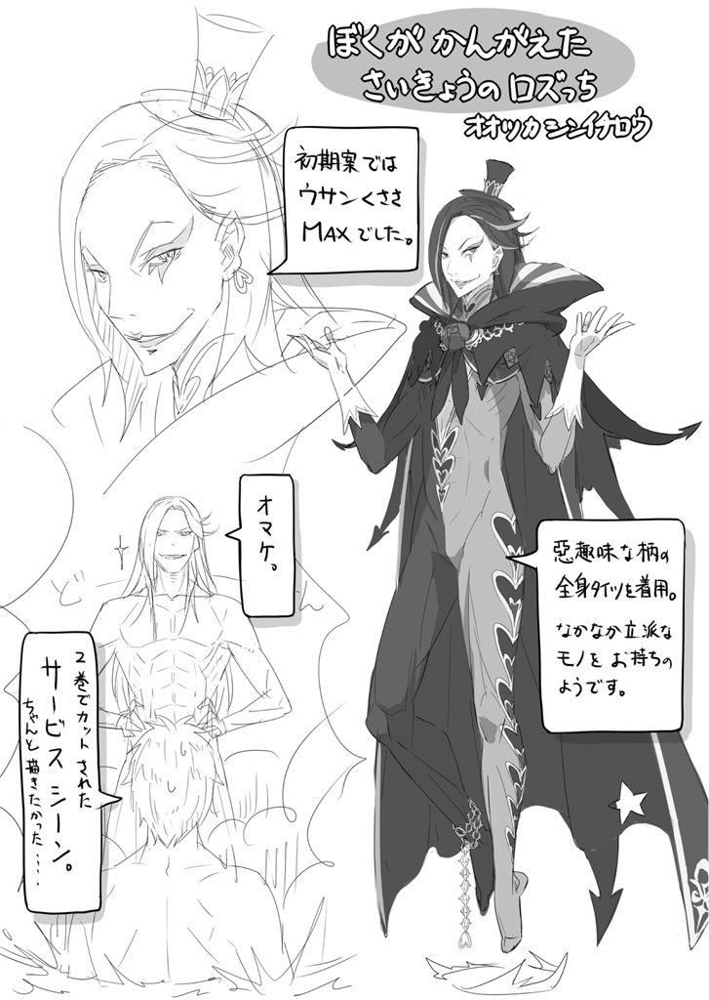

| Ｒｅ：ゼロから始める異世界生活 3<Ｒｅ：ゼロから始める異世界生活> (MF文庫J) | |
| III ofＲｅ：ゼロから始める異世界生活 | |
| 長月 達平 | |
| (2015) | |
B00JRU5L6C EBOK
ＭＦ文庫Ｊ
Ｒｅ：ゼロから始める異世界生活３
長月達平
口絵・本文イラスト●大塚真一郎
編集●池本昌仁
 Returns by Death
Returns by Death
第一章 『ナツキ・スバルのリスタート』
１
──意識の途絶から復活までは、ナツキ・スバルの体感時間にして一瞬のことだった。
「────」
固い地面に頭を砕かれて、世界が真っ赤に染まったのはまさしく瞬きほどの直前。
全身の感覚を見失ったと思った直後、スバルの体は柔らかな寝台の上にあった。
「は──」
息を吐き、死の衝撃を魂ごと引きずる体の硬直をほぐす。
肺が引きつり、呼吸すらおぼつかないほど、みっともなく心が竦んでいた。
それも当然だ。崖から身を投げ出し、自ら命を絶つなど初めての経験だったのだから。
四度目の死と自殺。『死に戻り』の条件が明らかになっていない現状、いずれも未経験の事態が重なった今回、スバルの人生は終わっていてもおかしくはなかった。
だが──
「戻って、きたぜ......」
震える拳を握りしめて、スバルは目の前にある白い天井に向かって頬を歪める。
柔らかな寝台、良い香りのする枕、整えられたシーツ。
いずれも、ロズワール邸の初日にスバルを出迎える来客用の備品の数々だ。
そして何より──
「姉様、姉様。お客様ったらまだ寝ぼけていらっしゃるみたいです」
「レム、レム。お客様ったらあの歳で可哀想にボケてるみたいだわ」
双子の姉妹が手を取り合い、寝台の前でスバルを二対の瞳で見つめていた。
黒を基調としたエプロンドレスに白いエプロン。頭の上の純白のヘッドドレスが眩しく、ショートボブに揃えられた青色と桃色の揃いの髪型。幼さの残る愛らしい顔立ち。
屋敷の管理を一手に担う姉妹であり、スバルが『死に戻り』した理由そのものだ。
聞き慣れた声に見慣れた仕草を前に、五度目の初対面を得てスバルの心が震える。
言いたいことは山ほどあった。なのに、喉をつっかえたように言葉が出てこない。
健在なレムの姿を見て、相変わらず無礼なラムの態度を見て、二人が当たり前のようにスバルに接してくれるのを感じて、堪え難い感情が込み上げてくる。
「お客様、お客様。どうされましたか？ 具合が悪いんですか？」
「お客様、お客様。どうかしたの？ 持病の発作でも起こした？」
胸を押さえ、俯くスバルに双子が困惑する。
寝台の前で左右に分かれ、スバルを挟んで両方から小さな掌が触れようと伸びてきた。
その二人の手を──
「ちょっと拝借」
「え」
「あ」
断りを入れつつも有無を言わせず、スバルは二人の手にそれぞれ両手で指を絡める。
驚きに硬直する姉妹を余所に、その指の細さと掌の温かさ、感触を堪能して、
「ああ、やっぱりそうだ......俺は間違ってなかった」
握り合った手の感触に、スバルは覚えがあった。
その温かさに、息苦しい夜を救われた記憶があった。
崖から身を投げ出す決意の切っ掛けは、間違いではなかった。
「いいえ、お客様。何もかもが間違っていると思います」
「いいえ、お客様。きっと生まれてきたのが間違いだわ」
不躾で不埒なスバルの振舞いに、手をほどいた二人が揃って非難の言葉を浴びせる。
しかし、スバルはそんな二人の言葉に、心地良い音楽でも聞くように頷いた。
「後々のことを考えると、笑えない気がする言葉だが......今はそれも気分いいぜ」
「姉様、姉様。お客様ったら、ひょっとして詰られて喜ぶ困ったお方？」
「レム、レム。お客様ってば、どうやら罵声を浴びて興奮するど変態？」
早くも客人を客人とも思わない発言が飛び出しているが、笑って聞き流せる。
またこうして、二人との初対面を本当の意味でやり直せるのならば。
警戒、というよりは生理的嫌悪感も露わな二人の前で、スバルはベッドから飛び降りる。屈伸して体の調子を確かめ、訝しげな二人に笑顔で向き直った。
「挨拶もなしに、いきなりさっきは悪かった。と、謝った上で言いたいことがある」
腕を組み、無駄に胸を張るスバルに居住まいを正すラムとレムの二人。
二人の視線が幾分か鋭くなるのを見て、すでに見定めは始まっているのだろうなとスバルはぼんやり感じ取る。
二人の信頼を、ひいては屋敷の全員の信頼を勝ち取れなかったとき、ナツキ・スバルは再び安寧の時間を取り上げられ、絶望を見ることになるだろう。
だから今度のループでは、二人に疑心暗鬼を与えないよう細心の注意を払って──
「なんて、対人関係で器用な真似ができたら不登校になんかなってねぇよ」
スバルの呟きに、二人が揃って疑問符を浮かべて首を傾げる。
そんな仕草までユニゾンする二人が可笑しくて、スバルの体から力と緊張が抜けた。
言いたいことは、やるべきことは決まっている。
「──俺はお前らを信じてるから、仲良くやろーぜ」
一回目の世界と同様に、ただひたすらに彼女たちに懸命に向き合おう。
未来のことが少しわかるぐらいで、やり直せるかもしれない可能性があるぐらいで、スバルの本質は変わらない。目の前の状況を、精いっぱい生きあがくだけだ。
スバルの申し出に双子は顔を見合わせ、無言で目だけで会話する。
二人の間だけで伝わるやり取りを横目に、ふと部屋の扉に目をやると、一人の少女がちょうど入ってくるところだった。
腰まで届く長い銀髪に、透き通るような白い肌。魅了の魔法を放つように吸い込まれそうな紫紺の瞳をした、人間離れした美しい少女──エミリアだ。
スバルの視線に気付いたエミリアは、部屋の三人を見ながら小さく苦笑した。
「騒がしいから見にきてみたら......スバル、元気みたいでよかった」
「今さっきまで心中複雑だったんだけど、エミリアたん見たら全部吹っ飛んだよ。俺の心の特効薬は、エミリアたんという慈愛の錠剤だったんだね」
「ごめん、ちょっと何言ってるのかわかんない」
いつも以上にくるくると回る舌に適当に言わせていると、エミリアの美貌に困ったような複雑な色が浮かぶ。
「憂い顔も可愛いな......エミリアたんは常に新鮮で、鮮度感ばっちりだよね」
「その言われ方、なんか嫌。でも、おはよう。無事でよかった」
渋面を作りながらも、すぐに柔らかな微笑みがスバルに向けられる。
エミリアの時間軸では、王都での一幕が明けて最初の再会だ。死の淵をさまよっていたスバルの復活に安堵しているであろうエミリアの言葉を、素直に受け取る。
「ああ、おはよう。──んじゃま、始めるとしようか」
笑い返すスバルの発言の意図がわからず、部屋の女性陣三人が首をひねる。
三人姉妹のように揃った反応に、スバルは思わず声に出して笑いながら、
「ロズワール邸一週間──攻略、スタートってこと」
誰にでもなく、まず自分に言い聞かせるように断言した。
──さあ、物語を動かそう。
この屋敷にいる全員と、スバルの望む朝日を見上げることができるように。
五度目の一日目、ロズワール邸の朝が始まる。
２
ロズワール邸での一週間を突破するために、越える必要のある関門は大きく二つだ。
一つは屋敷関係者からの信頼を勝ち取ること。これはラムやレムだけに拘わらず、二人の主であるロズワールからのものも含める。
彼女らのお眼鏡に適わない限り、スバルは口封じで殺される可能性が非常に高い。
そして二つ目の関門は──ロズワール邸を襲う呪術師の撃破だ。
だが、こちらはまだ解決の糸口すら掴めていない。
複数回にまたがってロズワール邸を襲い、スバルとレムの命を奪った呪術の使い手。
しかし敵は五度目の世界でも、いまだ正体の片鱗すら見せていない難敵だ。
ラムとレムの二人から信頼を得た上で、正体不明の邪悪な魔法使いを撃破できれば今回のループを突破できる──それが、スバルが四度死んで見つけた勝利条件だ。
ただし、肝心の条件を達成するための要素に不確定な部分が多く、『死に戻り』してきたものの何から手をつけるべきなのか決めかねている。
前途多難さに頭を抱えたくなる気分だが、スバルは負感情を振り切って前を向く。
どれだけ立ちはだかる壁が高くとも、挑まないわけにはいかない。
戻ってこれるかわからない、自決という手段まで選んでスバルは戻ってきたのだ。
一度、自分から死んでみせたのだから、死んだつもりで挑んでみるべきなのだ。
──スバルはそう、決めていた。
３
「そーぉれで、ラム？ 君から見たところ、彼の評価はどーぉんなもんかな？」
夜天に月がかかる頃、ロズワール邸最上階の執務室にて、その密談は行われていた。
間延びする特徴的な口調で、問いを発したのは黒檀の机に腰掛ける男性だ。
長い藍色の髪に、病的に青白い肌を持った儚げな印象の美丈夫──ただし、その顔には道化を思わせるメイクが施されており、独特な口調と相まって軽々しい印象を拭い去ることができない。
誰であろう、彼こそが屋敷の主であるロズワール・Ｌ・メイザースその人だ。
密談の参加者はそのロズワールと、机越しに彼と向き合うメイド──ラムの二人。
机の上で手を組み、唇を綻ばせるロズワールの問いに、ラムは首を傾けて思案する。
その報告を迷うような態度に、ロズワールは珍しいものを見たように片眉を上げた。
「ふーぅむ。わりとなんでも即断傾向にあるラムが悩むなーぁんて、珍しいこーぉともあるもんだーぁね。一日じゃ、人となりは測れなかったかーぁな？」
「そういうわけでは、ないんですけれど」
否定の言葉こそすぐ返ってきたが、その内容はやはりどこか明瞭さに欠ける。ラムは己の唇に指を触れて、少しだけ戸惑いを残しながら、
「彼──バルスはその、能力的には見るべき点がありません。使用人としての仕事ぶりとしては、素人に毛が生えたようなものです。評価する以前の問題でした」
「それはそれは......自分から今の役割を求めたわりには、どーぉにも不思議なことだね」
今朝の食堂でのやり取りを思い返し、ロズワールは含み笑い。
目覚めた客人を食卓に招き、彼の功績とその褒章について話し合ったことを思い出す。
ロズワールの印象としては、スバルは『それなりの教育を受け、悪くない程度に頭が回り、そこそこに保身もできる少年』といった結論を得ていた。
悪くない評価であり、それは別の意味では警戒に値するという意味でもある。
故に、教育係としての役割を命じたラムには、それとなくスバルの動向を監視するよう指示していたし、こうして報告の場を設けてもいる。
一日目から成果、あるいはボロを出す相手だとは思っていなかったが、逆にこうしてラムに報告を躊躇わせるような結果が出たというのも問題ではあった。
頬杖をついて片目をつむるロズワールに、ラムはしばしの沈黙を経て口を開く。
「バルスについて、不思議なことがいくつかあるのですが」
「うんうん、聞こうじゃーぁないの。気になることは、何でも言ってくれたまえ」
「能力的には無能もいいところなのですが、バルスはどういうことなのか......要所で、目端が利き過ぎるところがあります」
「目端が利き過ぎる、というのはどーぉいう意味でかな？」
「ほんの、本当に些細な点なのですが......仕事をしている最中、屋敷のささやかな部分に詳しすぎる傾向が。まだ教えていない用具の場所。食器を片づける際、棚に入れる順番や並べ方。あとは......レムやラムの茶葉の好み」
「────」
ラムが口にした内容に、ロズワールは顎に指を這わせながら無言で応える。ロズワールの態度にラムは「もちろん」と前置きした上で、
「いずれも些細なことです。朝食の場からその後の屋敷の簡単な案内と説明。その間にも目を走らせていれば気付くだろうということばかりですが......」
「偶然が重なりすぎたわけでないんなら......なるほど、ちょこーぉっと気になるかな」
何事も、疑いの発端は小さな綻びから始まる。考えすぎでないのだとしたら、スバルはあらかじめ屋敷に入り込む前から、この屋敷を調べていた可能性がある。
ただ、その場合に考え難くなるのが、
「王都で、エミリア様を守ったという彼の功績かなぁ......」
「屋敷に入り込むための手段......にしては、大がかりです。何より、ベアトリス様がいらっしゃらなければそのまま命を落としていた可能性もあります」
屋敷に担ぎ込まれた際のことはロズワールの記憶にも新しい。直接、治療したわけではないが、ベアトリスがその企てに加担することはあり得ない。さらにはラムも王都からの帰路、負傷したスバルに付き添っていたのだ。二人の目を盗むことなど考え難い。
「それらを踏まえると、考えすぎな感がやっぱりちょーぉっと強すぎるかもねーぇ」
「王都でエミリア様を襲った......『腸狩り』でしたか？ そのものと共謀して、屋敷に入り込むよう画策した可能性もあるにはありますが......」
自分でも、低い可能性だと見ているのかラムの言葉に力はない。ロズワールもそれには首を横に振り、
「いーぃや、その可能性はないよ。『腸狩り』と彼が手を組んでいる、ということだけは疑う必要はないだろーぉね」
「......そう、ですか」
「それより、他に気になった点はないかな？」
先を促すロズワールの言葉に、ラムは「そうですね」と目を伏せると、
「目端が利き過ぎる点を除けば......バルスは気持ち悪いぐらい、前向きです」
「えっと？」
言葉を選ぶ、というより言葉を探している風なラムの発言にロズワールは眉を寄せる。
要領を得ない、というのは語るラム自身もわかっているのだろう。的確な言葉が見当たらないのがもどかしいといった顔つきのまま、ラムは続ける。
「あの調子でずっと喋り倒して、時に失敗しても笑みを絶やさず、それどころかひどく献身的にこちらに振舞う始末で......」
「......君は、どーぉ思ってるわけ？」
「子どものように自分の欲求に正直で、素直で憎めない感じ......という、エミリア様から聞いていた様子とは違うな、と」
低い問いかけに、ラムは短くそう応じる。
ラムの覚えた疑問点は、スバルとの接触が短いロズワールにはわからないものだ。が、長い付き合いのある忠臣の言葉でもある。ロズワールはラムの進言に顎を引き、
「いくらか、経過を見守る必要がある人材であるのは間違いなさそーぉだね。人となりが見え難いのも初日じゃーぁまだ仕方ない。エミリア様を救ってもらった恩義に関しても、しっかり報いる必要があるのは事実だーぁからね」
「......もしもの、場合には」
言葉を濁すラムは、その先を聞きたがっていない様子だ。
表情の変わらない少女の、しかし内心が読み取れるのも付き合いの長さ故だろう。ロズワールはラムのその弱さを黄色の瞳で見つめて、小さく首を横に振った。
「この件はひどーぉく、慎重に扱うべき問題だよ。くれぐれも、レムが先走らないよう姉の君が注意しておくよーぅにね」
ロズワールの指示に、ラムが厳かに頷いてみせる。
この密談に参加していないもう一人のメイド──レムは時に、こちらの意図を汲んだ上で独断に走る傾向がある。早とちり、と可愛い叱責で済むのならまだマシだが。
今回のような、大事な局面での彼女の独断は良くない方向へ進む可能性が高い。
危険を未然に排除しました。が、エミリアとの関係は悪化しました。では笑えない。
「ラムの目から見ても、レムはバルスに不信感を......はい、注意しておきます」
「よろしくお願いするよ。今が大事な時期......そう、これまでの集大成が試される時期だ」
背もたれを軋ませて、どこか疲れを感じさせる声でロズワールが呟く。
その彼に声をかけようとして、ラムは何も言えずに口を閉ざしてしまう。そのまま、二人の間に沈黙と、夜の冷たい空気が流れていく。
「ときにラム。報告はこれで終わりかーぁな？」
「......はい。大したことをお伝えできず、申し訳ありません」
「そーぉんなことで責めたりしないとも。それより、本来の御勤めを済ませてしまおうか。──二晩も空いたんだ。ずいぶんと、疼いていたことじゃーぁないかね？」
「あ──はい」
指の動きで誘うロズワールに、ラムはどこか陶然とした面持ちで従う。
机の前に立っていた彼女は揺らめくような足取りでロズワールに近づくと、座る彼の膝の上におずおずと腰を乗せ、
「今夜も、失礼......します」
「当然の権利の行使だとも。いつものことだけど、恥ずかしがることじゃーぁない。大事な体だ。君一人のものではなーぁいんだからね」
頬を手でなぞり、うっすらと目を閉じるラムの顔を上に向けさせる。桃色の髪を反対の手で梳きながら、ロズワールは片目をつむり、黄色の瞳でラムを見下ろしながら、
「さーぁて、君が我々にとってどんな存在であるのか......友好的でありたいものだね？」
口の中だけで呟き、ロズワールはそれきり意識を切り替える。
目の前のラムだけを見つめ、ラムだけに意識を沈めていく。
ロズワール邸、初日の夜が更ける。
──屋敷の主とメイドの、妖しげな密談で締めくくるように。
４
「グッドモーニング！ 今日も晴天、洗濯物に絶好調！ ハピネスな一日にしようぜ！」
昇る朝日を万歳三唱で迎えながら、スバルは声高らかに喝采を上げていた。
ロズワール邸五度目の周回、二日目の朝だ。
庭の真ん中に立ち、朝の日差しを浴びながら上体を大きく全力で回す。
朝一番のラジオ体操で全身に血流を巡らせ、眠って蓄えたエネルギーを活力に変換。
「はい、ヴィクトリー！」
最後に両手を天に突きつけ、勝利の雄叫びを上げて一日の始まりの始まりを終了だ。
軽く汗する額を爽やかに拭いながら、スバルは笑顔で振り返る。と、
「今日も朝からホントに元気よね......」
「おいおい、他人事だなぁ、エミリアたん。エミリアたんも張り切っていこうぜ！」
庭園の端、木陰で朝の日課である微精霊との対話を行っていたエミリアが苦笑。エミリアの傍らには小猫型精霊のパックが浮遊しており、ごしごしと手で顔を洗っている。
「顔とか洗ってるとこ見ると、マジ猫だな。それはそれとして、精霊とかもやっぱ眠くなったりすんの？ 寝坊したりとかする？」
「君たちも疲労が溜まると眠くなるでしょ？ 精霊も活動力の源のマナが減少すると、まぁ似たようなことになるよ。マナの蓄えが十分じゃないと......ふにゃぁ」
欠伸をするパックにつられて、エミリアもその唇に手を当てて小さく欠伸。
二人の眠気を訴える仕草にスバルは肩をすくめた。
「二人して夜更かしさんとか、どうせ夜遅くまで好きな子の話とかで盛り上がってたんだろ？ 俺も混ぜろよー。え、俺の好きな子？ それはねー、恥ずかしいんだけどー」
手を組み目を伏せ、ちらちらとエミリアをうかがうスバル。
スバルのその態度にエミリアは「はいはい」とおざなりに手を振った。
「私が好きなのはパックで、パックが好きなのは私。お話おしまい」
「相思相愛!? 俺の割り込む余地は!?」
「にゃいとも。ボクの魅力にリアはメロメロだよ。スバルも悪い男じゃなかったかもしれないけど、ボクと比べちゃ形無しだ。素直にリアは諦めて......にゃうにゃう！」
詰め寄ったスバルをパックが上から目線で諭そうとしたが、悪ノリする二人の耳を横合いから伸びてきたエミリアの指が摘んだ。
「二人とも調子に乗らないの。そんなことばっかりだと、私も怒るんだからね」
「痛い痛い怒ってる怒ってる」
エミリアのお仕置きにユニゾンでスバルとパックが恐れ入る。
耳を解放されて、それぞれ痛む患部を擦る両者の前でエミリアは腰に手を当てる。
「仲がいいのはいいことだけど、人をダシにして遊ばないの。わかったら返事、はい」
「はーい」
手を差し出されて促され、ついつい勢いで頷いてしまう。
どうにも子ども扱いで手玉に取られている気がするが、満足げに微笑んでいるエミリアを見ていると、そんな些細なことはどうでもよくなるから不思議だ。
自分の微笑にスバルが見惚れているとも気付かず、ふいにエミリアは手を叩くと、
「そだ、ちょうどいっか。ほら、スバル、ちょっとこっちきて座って」
芝生に横座りの姿勢のエミリアが、自分の隣を軽く叩いてスバルを誘う。
お座り、という意味と悟った瞬間のスバルの行動は早い。即座に滑り込み、
「呼ばれて飛び出て滑り込んだ上で俺参上。なに、なに？ ちょうどいいってどんなタイミング？ 痒いところに手が届く男、ナツキ・スバルがエミリアたんの痒いんだけど届かない背中のあのあたりとか命じられたままに掻くよ！」
「ただ隣においでって言っただけなのに、予想以上の反響があってどうしよう私」
猛烈なスバルの勢いにさすがのエミリアも苦笑い。
「えっと......昨日とか、お仕事初日だったけどどうだったかなって。ちゃんとできた？」
「ああ、八割ダメだったな！」
「そっか、自信満々で......え？ ダメだったの？ 八割も？」
「いや、八割は言い過ぎか......六、んや、七割五分ぐらいは......」
「ダメなところの方が多いのは変わらないんだ......」
スバルの自己評価が予想以上に低かったせいか、責任を感じたようにエミリアがしゅんとなってしまう。が、すぐにエミリアはスバルに気を遣わせまいと顔を上げる。
「あ、でも、ほら、初めての仕事で二割はうまくいったんでしょ？ それなら大丈夫、きっとうまくやれるわ。ほら、自信持って」
「そうだよね！ 初めてで二割なら上々上々、こっから俺の追い風ロードが始まるよ！」
「そんな自惚れないでちゃんと反省はして」
「甘やかすなら最後まで甘やかそうよ!? あ、違います何でもないですごめんなさい」
じと目で睨んでくるエミリアの迫力に押されて、スバルは小さくなってうなだれる。
ともあれ、
「実際、ラムレムのフォローもあってどうにかやってけてる感じだよ。全力で取り組んで二割なのは現状の俺の実力だから仕方ないし、今後の俺に俺が期待ってとこだね」
「本人がそうやって前向きでいるなら、私も何にも言わないけど......」
ポジティブなスバルの発言に、エミリアはどこか拗ねたように唇を尖らせる。たまに見せる子どもっぽい仕草が可愛らしくて、それはスバルの胸に熱い衝動をもたらした。
が、自制心を総動員してその衝動を押し殺す。
スバルはおどけた動きを作ると、エミリアを両手の指で指し示す。
「ま、ま、ま、そんなわけで俺は今日も今日とてメイド姉妹にあれこれ指図教育されつつも、使用人ライフに勤しむわけよ。そんな生活に疲れ切ったらエミリアたんの膝に飛び込みに行くから、ちゃんと空けといてね」
「......話半分に聞いてるぐらいで、ちょうどいい感じがするかも」
「可愛い顔して辛辣な評価！ でも、半分ってことは片膝はオッケーってことだな！ じゃ、今夜のエミリアたんの片膝は俺のリザーブ済みだから......取るなよ、パック！」
指を突きつける相手を変えて名前を呼ぶと、宣戦布告を受け取ったパックは余裕の態度を崩さないまま己のヒゲを弾いた。
「ふふん、後から出てきた君が何を言っても、リアはすでに契約でボクに身も心も捧げた状態。今さらこの関係ににゃんにゃんにゃん」
「私の知らない間に勝手に契約の内容を変えないの、もう」
懲りないパックの両耳を摘まみ、宙で揺らして反省させるエミリア。
とはいえ、慣れているのかパックは長閑な顔つきのまま、エミリアの手の中で幸せそうに揺らされているばかりだ。二人の関係が、素直に羨ましいと思う。
「んじゃま、朝の活力も補給したとこで、お仕事するとしますかね」
「活力補給って、何かしてたの？」
「もち、エミリアたんといちゃいちゃすること」
「またそうやって調子いいんだから。そんな風に人をからかってばっかりだと、いざ本当のことを言った時に信じてもらえなくなっちゃうんだからね」
「それに類似したおとぎ話知ってっけど、俺アレは自業自得だと思うんだよね......」
「それをスバルが言うの......？」
呆れたエミリアの視線に照れ笑いで応じて、尻を払いながらスバルは立ち上がる。
「そろそろ行かないとマジ怒られるな。今朝は朝飯の準備から入る予定。エミリアたん、ピーマル苦手だったろ？ 入ってたらのけといてあげる」
「嫌いでも食べなきゃダメだもん......私、ピーマル嫌いってスバルにお話ししてた？」
疑問に首を傾げるエミリアに、スバルは小さな笑みを残して手を振る。
その話をしたことも、嫌っているところも実際に見たことがあるのだ。
無駄に左右に揺れながら、エミリアに見られていることを意識しておどけてみせる。
──意識して、意識して、微笑みが消えないように意識しながら。
５
ふらふらと視界から消えていくスバルを見送り、エミリアは小さく吐息をこぼした。
吐息の辿り着く先、掌のパックは遠のくスバルの背中を見送っている。ふと、パックは自分を見る視線に気付いてエミリアを見上げた。
「どうしたの？ 浮かない顔をしてるね」
「なんだかこう、もやもやしてるの。うまく言葉にできないんだけど」
口ごもり、エミリアは自分の内側の戸惑いを言葉にしようと苦心する。しかしそれは喉の奥でつっかえ、うまく言葉にならないまま吐息になって消えてしまう。
エミリアの葛藤を見守りながら、パックは自分のピンク色の鼻をひくひくさせた。
「スバルが気になるのかな？ リアがそんなに他人を気にかけるなんて珍しいね」
「勝手に人付き合いがへたっぴな人みたいに言わないの。私は他人と接するのがへたっぴなんじゃなくて、接する機会がなかっただけですー」
頬を膨らませて、エミリアは他の誰にも見せない表情をパックにだけ見せる。
甘えた子どものような態度と仕草は、エミリアがパックに対して寄せる絶大な信頼の証だ。その信頼を受け取るパックも、穏やかな表情で娘同然の少女を見ている。
ともあれ、パックはエミリアの言葉にできなかった感情を敏感に察して頷いた。
「まぁ、リアが戸惑うのも無理はないよ。少しばかり、困ったことになってるからね」
「困った、こと？」
のんびりした言い方だが、聞き逃せない雰囲気にエミリアの表情が引き締まる。
基本的に、パックは状況がどれだけ切羽詰まっていても態度が一貫している。精霊特有のものか、パックの性格なのかはわからないが、彼の精霊の発言の重大性は雰囲気から察することは難しく、受け手の判断が大事になる。つまりは、エミリアの判断だ。
息を呑むエミリアの前で、パックは悠然とヒゲを弄りながら、
「ぼんやり触ってみたけどね。スバルの心、だいぶごちゃごちゃしてたよ。外見と中身でぐちゃぐちゃだ。あのままじゃ、そう遠くない内に擦り切れちゃうんじゃないかなぁ」
と、どこまでもマイペースな口調で言ったのだった。
６
甲高い音を立てて、陶器が割れる音にレムは驚いて顔を上げた。
「ドンマイ！ ドンマイ！ 気にすんな！ 大丈夫だ！」
そんな声がして、踊るような足取りで使用人服の少年──スバルが掃除用具を引っ掴んでやってくる。彼は足下に散らばる陶器の残骸を手早く片付け、額の汗を拭う素振り。
それから、一連の流れをジッと見ていたレムの方を見ると、歯を見せるようにして凶悪な笑みを作り、
「安心しろ。迅速な後片付けで、負傷者なんて一人も出させやしないぜ」
「その心がけは立派だと思いますけど、花瓶を落としたのもスバルくんでしょう？ 替えの花瓶を持ってきますから、床を拭いて花を整えて......」
「いや、大丈夫！ 花瓶も花の手入れも俺がやるから！ 先輩は自分の仕事してて！」
指示をしようとするレムを追い越し、備品倉庫に向かったスバルは数分後にちゃんと花瓶を持って戻ってきた。すぐに元の位置に花瓶と水、花を差し込んで景観は元通り。
「ふう。一仕事終えると気持ちがいいもんだな、レムりん」
「自分で増やして自分で片付けたお仕事でしたけれど。......スバルくん、いつの間に花瓶の場所なんて聞いたんですか？ 姉様に？」
「ん、あ、お......そう、姉様に！ 俺のことだから、きっと花瓶を割る機会があるに違いないわ。そのときのために、花瓶の場所だけはちゃんと教えておくわねってな！」
さすが姉様、先見性がある──とは、さすがのレムも思えないヘタクソな言い訳だ。それにレムが花瓶より気にかかったのは、割れた花瓶を片付けるのに使った掃除用具と、迷わず陶器を捨てにいけるスバルの屋敷内の把握ぶりだった。
レムにはとてもそれが、雇われて一日二日の人間の動き方には到底思えない。
かといって疑いの目を向けようかと思えば、
「大丈夫か？ そんなに仕事抱え込まないで少しはわけろって。俺やるよ、何でもやるよ」
と、親身にすり寄ってくるのだからよくわからない。
悪意、敵意ある人物の振舞いではないが、かといって裏のない人間の動きではない。が、裏のある人間にしてはあけすけな態度と言葉と、何より隙だらけだ。
仕事に慣れようと懸命に見える。レムやラムと親しくなろうと、懸命に見える。
その懸命さが、なぜか切迫した感情を押されているように見えて、レムは眉を寄せる。
スバルのその、認められないとでも主張するような姿に、ひどく胸が疼く気がした。
「スバルく──」
「おっと、ラムちーに頼まれてる仕事があったの忘れてた！ 急ぎ、それ片付けてくるからちょっとごめんな！ また後で、すぐ合流すっから！」
呼び止めるより早く、駆け出すスバルが廊下の向こうへ消えてしまう。伸ばしかけた指を引き、レムはこの戸惑いを姉に相談しようと振り返りかけ──、
「──いえ、姉様の手を煩わせるほどでは」
先ほどから感じる胸の疼きに引き留められるように、レムは残りの仕事を片付けるために自分の持ち場へと足を踏み出した。
７
──気持ち悪い。
「お、ラムちー！ 今の見たか？ 俺の包丁さばきってば、たったの一日でかなり洗練されてきてね？ 才能が開花したんじゃないか!?」
──気持ち悪い気持ち悪い気持ち悪い。
「レムりん、見て見て！ この繊細な細工を可能とする技量、今、俺の指先にはまさしく奇跡が宿っている！ イリュージョン！」
──気持ち悪い気持ち悪い気持ち悪い気持ち悪い気持ち悪い気持ち悪い。
「エミリアたんてば会うたび俺の心を掻き乱すな！ マジ罪作り過ぎてギルティだよ！」
──気持ち悪い気持ち悪い気持ち悪い気持ち悪い気持ち悪い気持ち悪い気持ち悪い気持ち悪い気持ち悪い気持ち悪い気持ち悪い気持ち悪い気持ち悪い気持ち悪い気持ち悪い。
笑顔のままでひょうきんにおどけて軽口をたたく。任された仕事には全力で取り組み、失敗も恐れず果敢に挑み、手が空けばイベントを求めてさまよい歩こう。
記憶を総動員して、これまでの四度繰り返した四日間を焼きつくほどに掘り返して、どんな些細なことでも起こせる限りの出来事に自分を刻み込んでいく。
そうでなくてはいけない。そうしなくてはならない。
一秒だって無駄にはできない。起こる可能性の全てを吟味して、必要なイベントのあらゆる成否をシミュレートして。ゲームだと思えばいい。徹底的なフラグ管理。得意だったはずだ。会えば会うほどに可能性は上がる。
──もっとうまく笑えるはずだ。もっとうまく笑わせられるはずだ。
無意味で無駄で大げさなアクション。警戒に値しない愚物だと思わせろ。使えないほど馬鹿だと判断されることは避けろ。頭を回せ、思考を止めるな。
不自然になっていないか常に気を配れ。一秒どころか刹那すら油断してはいけない。
──失敗はできない。できない。できないのだから。
繰り返し繰り返し、頭の中で休むことなく警鐘が鳴り続けている。
危険を報せるアラートだ。
異世界にきて、欠片の進歩もない自分だが、この感覚だけは鋭くなってきた気がする。
「おっと、ラムちー。サボりじゃねぇよ？ ちゃんとお仕事はやり遂げますとも。先輩はふんぞり返って部屋でステイしながらシエスタしててもいいぐらいですぜ？」
イレギュラーな接近に、軽薄さと上っ面な微笑で対処して状況を回避する。
うまくやれていたか。ちゃんと、ナツキ・スバルができているか。不信感を抱かせなかっただろうか。ラムの前だけでなく、レムの前では十倍、百倍気を払え。
自然に、不自然さを消して、ナツキ・スバルを装え。
簡単なことだ。自分の話だ。屋敷に住まう人々の本心になど微塵も気付かず、ただ無邪気で無遠慮に、与えられるものを享受しているだけの怠惰な豚に戻ればいい。
何も知らないこと、できないこと、気付かないこと、それしかできなかったはずだ。
へらへらと、微笑の仮面を張りつけたままで歩く。
屋敷の中だ。どこで誰と出くわすかわからない。自由な時間に自由などない。空白の時間は過去の検証と今後の行動予定を立てることに全て費やす。
「お、う、ぇ......」
ふいに込み上げてきた嘔吐感。
呻きだけが口の端からこぼれ、スバルはしかし微笑みを決して崩さない。
そのままスキップする足取りで、踊るようにスバルは近場の客間へ忍び込む。そして、部屋に備えつけの洗面所に歩み寄り、
「......おぶふぁっ。うぇっ、おうぇ......ッ」
すでに空っぽの胃の中身を、洗いざらい流しへとぶちまける。
飲食物など体に入れた端から全て吐き出している。出てくるのは黄色がかった胃液だけ。そして、今はそれすらも涸れるほどに内臓を痛めつけ続けた後だった。
嘔吐感は消えない。流しの水をガブ飲みして腹を水で満たし、直後にそれをぶちまける。何度も繰り返し、胃の中身を洗い流すように嘔吐を繰り返した。
「はぁ......はぁ、はぁ......」
乱暴に口元を袖で拭い、青白い顔つきでスバルは荒い息をつく。
圧し掛かるプレッシャーに殺されそうだ。このまま気の休まる暇のない時間が続けば、それだけで衰弱死できそうな気さえする。
本末転倒な自分の状態を自嘲して、しかし渇いた笑み一つ浮かばない。
浮かぶのはひたすらに、胸中から湧き上がってくる不安と絶望感だけだ。
──ちゃんとできているのだろうか。
思えば、屋敷の人間ともっとも関係が良好だったのは、無知な一回目だったと思う。
二回目以降はいずれも、一回目の展開を意識しすぎたのが原因で、接し方や仕事への取り組み方に問題があった。姉妹の信頼を得られなかったのも、それが大きな理由だろう。
故にスバルは今回、初回のループを参考にしている。といっても、初回をなぞるのは二回目の世界の失敗の繰り返しだ。大事なのは一回目の世界よりうまくやること。
すなわち、目の前の仕事に全力で打ち込み、ちゃんとした成果を出せばいい。
ラムもレムもそうすればスバルを見限るまい。姉妹に粛清されるルートさえ外れれば、スバルの懸念は一つ取り払われる。
「けど、それじゃまだ五十点......満点には、呪術師の正体を暴かなきゃならねぇ......」
ただスバルが姉妹に殺されなくなるだけでは、呪術師の脅威からは逃れられない。
スバルかレムか、五日目の朝を迎えられずに屋敷を悲鳴が木霊することになる。
本当ならば、呪術師の情報はすぐにでも関係者に打ち明け、対策を練りたい。しかしそれがスバルにはできない。進言を聞き入れてもらえるだけの信用がいまだにないことと、情報源を明らかにすることのできない理由があるからだ。
『死に戻り』を他人に打ち明ける禁忌、それを破ればスバルは地獄の苦しみを味わう。
痛みへの恐怖はある。だがそれ以上に、あの漆黒の指先と遭遇するのが恐ろしかった。
関係者から信頼を勝ち取り、呪術師の正体を暴き出す。
時間が圧倒的に足りない。もどかしいほどに、狂おしいほどに足りない。
どうにかしなければと思いながら、どうにもならないという袋小路に迷い込む。
昨晩も、この答えの出ない螺旋に飲み込まれて一睡もできなかった。
理由のわかり切った不安を、解決策の見えないまま手探りで振り払う無力さ。
命を支払って戻ってきて、それでも無力で愚かで足りない自分。
「ああ、クソ......かっこ悪ぃ」
失敗はできない。後がない。
捨てたはずの命、終わっていたはずの命、それを再び失うのが恐い。
五度目の世界。だが、また戻ってこれると楽観的に思える性格をスバルはしていない。
今回は戻ってこれた。でも、次回は駄目かもしれない。これが最後かもしれない。
常に崖っぷちにいることを意識することで、精神は摩耗していく。
自棄に走るほど思い切れなければ、自分の全てを差し出して抗う決断もできない。
勇気が足りない。どこまでも凡庸で、どこまでも凡俗。
自分で自分が嫌になるほど、小者であることが思い知らされる。
「弱音なんか、吐いてる暇があんのかよ、馬鹿野郎......」
弱音の一つでもこぼす暇があるなら、軽口の一つでも叩いて印象を稼ぐ方が大事だ。
嘔吐感を振り切り、スバルは強張る頬を叩いて己を叱咤し、客間の外に出る。
現状は空き時間だが、それは休憩時間ではない。休む時間すら今は惜しい。
とにかく、ラムかレムの姿を探して──
「やっと見つけた」
思考の方向性を定めようとしたところで、後ろから声をかけられた。
振り向くと、そこには弾む息を整えるエミリアの姿がある。
エミリアを目にした途端、スバルの意識が音を立てて切り替わった。
胃の痛みも胸の疼きも閉塞感も全て忘れて、エミリアに全力を注ぐ。頬を笑みに歪め、
「おっと、エミリアたんから俺をご指名とは嬉し恥ずかし珍しい！ 何でも言って何でも命じて！ 君のためならたとえ火の中水の中、盗品蔵の中にだってもぐっちゃう！」
必要以上にはしゃいでみせて、スバルはエミリアの前で内心を裏返す。
自画自賛したいレベルの変わり身。が、それを見たエミリアのリアクションが予想と違う。てっきり、呆れた顔かため息をつかれるものと思っていたのだが。
「スバル......」
「おいおい、俺の知ってるエミリアたんならここは......ハッ！ まさか偽物!? でもでも、こんな可愛くて抱きしめたくなる美少女っぷりを他人が再現できるものなのか!?」
荒唐無稽な発言で呆れを誘うが、これに対してもエミリアの反応は乏しいものだった。
予想をことごとく裏切り、エミリアはスバルを哀切な感情に満ちた瞳で見ている。
──マズイ、と本能的な部分が警戒を呼びかける。
「え、エミリアたんてば黙っちゃってどったの？ そんなんだと、何しても騒がれないと勘違いした悪い奴にイタズラとかされちゃうよ？ たとえばそう、俺に！」
おかしい、と脳内で自分の声が何度も何度も叫んでいた。
呆れるでも怒るでもなく、エミリアは痛ましげな目でスバルを見つめてくる。
──自分の被っている拙い道化の仮面が、ばれているのではないだろうか。
不安が差し込んだ瞬間、スバルはエミリアの傍らに常に寄り添う小猫を思い出す。
精霊を名乗るあの猫は、他者の感情を、心の表層を読み取れるのだ。
上っ面だけを取り繕ったスバルの行いなど、とっくにとうに見通されていたのだ。
今さらそれに気付かされてしまい、スバルの虚勢が剥がれ落ちる。
張り付いていた微笑が消え去り、叱られるのを恐がる幼子のような表情が浮き上がる。
何もかも見抜かれている相手の前で、隠せていると踊り続けた滑稽さ。何より、エミリアにだけは知られたくなかったという、ちっぽけな自尊心がズタズタに切り裂かれた。
互いの間に無言の時間が落ちる。
スバルはもはや言葉を選べず、エミリアもかける言葉を探すように瞳を揺らしていた。
──エミリアに幻滅される。それだけは嫌だった。
しかし、何を口にすれば言い訳が立つのかそれすらもわからない。
何度も口を開こうとしては、肝心の言葉が見つからずにスバルは踏み出せない。
口ごもるスバルを見ながら、ふいにエミリアは「よし」と小さく呟き、
「スバル、きなさい」
「......へ？」
「いいから」
ぐい、と腕を引き、エミリアはすぐ近くの客間にスバルを引っ張り込んだ。
今しがた、出てきたばかりの部屋に連れ戻されて、スバルは疑問符を顔に浮かべる。
が、エミリアはそんなスバルに取り合わず、腰に手を当てて部屋の中を見回すと、
「じゃあ、座って、スバル」
床を指差し、変わらぬ銀鈴の声音でそう言ってきた。
指に従って下を見る。床には絨毯が敷かれており、誰も使用していない部屋ではあるが清掃は行き届いている。もちろん、寝転がっても大丈夫な状態ではあるが。
「座るならベッドでも椅子でもよくね？ なんでわざわざ床に......」
「いいから座るのっ」
「はい、喜んで！」
いつになく強い口調で言われ、思わずその場に飛ぶように正座してしまう。
スバルが座るのを見届け、エミリアは満足そうに頷くとすぐ傍らに立った。
自然、低い体勢からエミリアを見上げることになるが、邪な気持ちは湧いてこない。
ただただ、エミリアの真意を読み取るのに必死になるばかりだ。
「......うん」
小さく、喉の奥で声を響かせたのはエミリアだ。
自分に言い聞かせるように息を呑み、エミリアがスバルの隣に同じように正座する。
すぐ触れ合える距離にエミリアが座ったことにドギマギしつつ、スバルは白い横顔から感情が見えないか横目でうかがう。ふと、その頬が紅潮し、耳が赤いのに気付いた。
「特別、だからね」
「──え？」
疑問が口をつくより早く、スバルの後頭部が何かに押される。正座していた体はその力に抗えず、勢いに流されるまま前のめりになり──柔らかい感触に受け止められた。
「ちょっと位置が悪い。それに、ん......ちくちくする」
もぞもぞと頭の下で何かが動き、エミリアの照れ臭げな声がすぐ上から降ってくる。
驚きに視線を上げ、目の前の光景にさらに驚きが重なって目を見開く。
真上、それこそ顔と顔が触れそうな近くにエミリアの顔がある。上下が逆さに映る美貌に、スバルは「ああ、俺が逆さになってるのか」とぼんやり理解する。
この距離で、上下が逆さで、頭の下に柔らかい感触。
──それらのキーワードが集まり、スバルの中で一つの答えが導き出された。
「膝、まくら？」
「恥ずかしいからはっきり言わないの。あと、こっち見るのも禁止。目、つむってて」
額を軽く叩かれ、掌で瞼を覆い隠されて視界が遮られる。
しかし、スバルはそんなエミリアの抵抗を手でどけて、言葉を引っ張り出す。
「恥じらうエミリアたんも最高だけど......そもそも、これってどういう状況？ 俺、いつの間にご褒美もらえるような手柄立てたっけ？」
「そういう変な強がり、今はしなくていいの」
額を再び叩かれる。だが、今度は額に当てた手をそのまま、エミリアは逆さのスバルの前髪を指ですくう。くすぐったい感触に、スバルは目を細めた。
「言ってたでしょ、スバル。疲れ切ったら膝枕してって。だからしてあげる。いつもってわけにはいかないけど、今日は特別」
「特別って、まだ二日目ですよ？ それで疲労困憊とか、俺虚弱体質すぎでしょ......」
「打ちのめされてるの、見てればわかるもん。詳しい事情は、きっと話してくれないんでしょ？ こんなことで楽になるだなんて思わないけど......こんなことしかできないから」
誤魔化しは慈愛の眼差しに遮られる。前髪を梳く指はいつしか黒髪をかき分け、ゆったりと幼子をあやすように頭を撫で始めていた。
笑い飛ばし、スバルはそのエミリアの指先を跳ねのけようとする。
それは見当違いだと、そんな格好悪い真似なんかしちゃいないと、エミリアの前で張り続けると誓った虚勢を張り続けるつもりだった。
「はは......エミリアたんてば、そんな......俺、が......」
なのに、声が上擦り、喉が詰まり、次の言葉が出てこない。
頭を撫でられる柔らかな指の感触から、スバルは意識を切り離すことができない。
「疲れてる？」
「ま、まだまだ、やれる。全然、平気だし......」
「困ってる？」
「優しくされると、ほら、惚れちゃうぜ？ そうやって、また......そんな......はは」
短い問いかけに、応じるスバルの言葉は虚ろにしか響かない。
がらんどうな言葉だと、自分でもわかるほど空しい言葉の羅列。
そしてエミリアは、そんなスバルにそっと顔を寄せて、
「──大変、だったね」
「────！」
慈しむように言われた。いたわるように言われた。愛おしむように言われた。
たったそれだけのことで、たったその一言だけで、スバルの中の堤防が決壊する。
ボロボロのそれが壊れ、破れ、溜め込んでいたものが一気に外へと流れ出す。
それは封じ込めたつもりで、しかし欠片も消すことのできずにいた激情の吹き溜まりで。
「大変......だった。すっげぇ、辛かった。すげぇ恐かった。めちゃくちゃ悲しかった。死ぬかと思うぐらい、痛かったんだよ......！」
「うん」
「俺、頑張ったんだよ。頑張ってたんだよ。必死だった。必死で色々、全部よくしようって頑張ったんだよ......！ ホントだ。ホントのホントに、今までこんな頑張ったことなんてなかったってぐらい！」
「うん、わかってる」
「好きだったからさぁ、この場所が......大事だと、思えてたからさぁ、この場所が......！ だから、取り戻したいって必死だったんだよ。恐かったよ。すげぇ恐かったよ。また、あの目で、見られたらって......そう思う自分が、嫌で嫌で仕方なかったよ......ッ」
感情が制御できない。
一度爆発したそれは堰を切ったように溢れ出し、微笑の仮面をかぶった臆病者の顔を涙で盛大に汚していく。
涙が止まらない。鼻水が垂れてくる。口の中がわけのわからない液体で溢れ返り、嗚咽まじりのスバルの泣き声をさらに聞き苦しいものへと変える。
みっともない。情けない。大の男が女の子の膝の上で、頭を撫でられながら大泣きだ。
死にたくなるほど情けない。死んでしまうかと思うぐらい、温かく満たされている。
スバルの泣き言を聞くエミリアの相槌は優しい。
要領を得ないスバルの言葉の羅列の意味など、届いていないことはわかり切っている。
それなのに、エミリアの声はスバルの心を優しく、解きほぐしていくのだ。
理由はわからない。そう思いたいだけなのかもしれない。
だがスバルが今、その温もりに救われたような気になっていたのは事実だった。
滂沱と涙を流し、スバルはエミリアの膝の上で泣き続ける。
泣いて、泣いて、泣き喚いて、いつしかみっともない鳴き声は遠く彼方へ消えて。
──静かな寝息だけが、客間の中に落ちていた。
８
眠りの中に落ちながら、スバルは胸の奥に息づく温かなものの存在を感じ取っていた。
これが、この感情がなんであるのか、今のスバルにはわかっている。
エミリアを見るたび、彼女と言葉を交わすたび、彼女と指先が触れ合うたびに、スバルの胸の内で鼓動を強くする一方だった、名前のないそれがなんであったのか。
エミリアを意識すれば、体の中で熱を持つそれは『恋心』と呼ばれる厄介な病だ。
一度それを意識してしまえば、人はその熱病が持つ力に抗うことができなくなる。
スバルも、例外ではない。だから──
何度でも、何度でも、どれだけ傷付いても、どれだけ苦しんでも、どれだけ泣いたとしても、どれだけ絶望を噛みしめることになろうとも、彼女を、エミリアを救うために。
この日々を、彼女と歩き続けるために。
──ナツキ・スバルは何度でも死んで、この恋に生きる。
９
──レムが客間を訪れたとき、エミリアは眠るスバルの黒髪を優しく撫でていた。
音もなく部屋の戸を開いたレムは、室内にエミリアの姿を見つけると口を開きかけ、
「しー」
と、唇に立てた指を当てるエミリアの仕草にその口を閉ざした。
床に直に座り、身を寄せ合う二人に目を細めて、レムはその側へ歩み寄った。
「スバルくんは、寝ているだけですか？」
「そう。ふふ、ほら子どもみたいでしょ。頭、撫でるとホッとしたみたいな顔するの」
面白がるようにスバルを撫で、エミリアはレムに同意を求める。
レムはそんなエミリアの求めに静かな首振りだけで応じた。
「今日は、スバルくんにこれ以上の仕事はできそうにありませんね」
「そうね、今日はお休み。働き始めて二日で休んじゃうなんて、すごーく悪い子。元気になったら、お仕置きしてあげてね」
小さく笑い、エミリアはそのままスバルの顔を弄る作業に戻る。
眠ったスバルをどけて、足を解放するつもりはないらしい。
レムはエミリアの態度をそう解釈し、眠りこけるスバルを静かに見下ろす。
無邪気な寝顔だ。子どものようで、緊張も軽薄さも見当たらない。
仕事と言って別れる前、緊迫感に引きつった笑顔とは雲泥の差だ。何か企んでいるのではと、疑っていたのが馬鹿らしくなるほど。
「こうして寝ているところを見ると、その気も失せますね」
エミリアにならい、スバルの前髪に軽く指先で触れてレムは呟く。
まるで世界のことに無知な赤ん坊のように無防備で、レムはかすかに唇をゆるめた。
「姉様に、スバルくんが今日は役立たずだと伝えてきます。仕事、割り振り直さないと」
お辞儀して、レムは丁寧にそう言い残して背を向ける。
向かう先は姉の場所。今の時間ならば、姉はまだ食堂の片付けをしている頃合いだ。
合流し、今日の予定の組み直しをしよう。
「レム」
と、ふいの呼びかけに足を止めて、レムはゆっくりと全身で振り返る。
地べたに座るエミリアと、視線の高さは大きく違う。が、それでもなお、レムはまるでエミリアに見下ろされているような、不可思議な圧迫感を得た。
そんなレムのささやかな驚きには気付かず、エミリアは小さな声で言った。
「──スバルは、いい子よ？」
「────」
告げられた言葉に、レムは深々とした一礼で応じる。
それから一瞥も残さず扉に向かい、スバルとエミリアを残して客間を出た。
廊下を歩き、今のエミリアの言葉を噛み含める。
無表情のレムの横顔に、かすかな震えが走ったのは本人すら気付かない。
──ただ、かすかに香る邪悪の臭いだけが、レムの心にわずかなしこりを残していた。
第二章 『泣いて泣き喚いて泣き止んだから』
１
「女の子の膝借りて、頭撫でられながら穏やかな眠りを迎える......それ単体で見たら、そりゃもう極上のイベントだったけどさぁ」
何度もそう言ってため息をこぼし、耳まで赤いスバルは頭を掻き毟る。
思い返すのは数時間前、盛大に心の内を吐露してしまった場面のことだ。
「意中の女の子相手に超泣き喚いて涙と鼻水で顔面ぐっちゃぐちゃにして眠りこける。おまけにその状態で何時間もその子の膝の上独占とか......もはやどんな羞恥プレイだよ」
思い返すのはエミリアの膝の感触と、その感触と引き換えになった彼女の膝の惨状だ。
エミリアの膝はスバルの鼻水その他でひどい状態で、衛生面から見てもスバルの男の子指数的な問題からしても看過できない状態だった。
にも拘わらず、エミリアは自分から目覚めるまでスバルを揺り起こそうとはしなかったし、服を汚したことを平謝りするスバルを責めるようなこともしなかった。
「少しでも気が休まったならそれでいいの。それに、スバルはわかってないんだから」
「へ？」
「ゴメンって何度も言われるより、ありがとうって一回言ってくれたら相手は満足するの。謝ってほしいんじゃなくて、してあげたくてしたことなんだから、ね」
謝る唇に指を当てられ、ウィンクまじりにそう言われてコロっといかない男はいるまい。事実、スバルはコロっとあっけなく転んだ。
その前のやり取りも含めて、本当の意味でエミリアへの恋心を自覚したスバルにとって、エミリアの行動も言動も、全てが色鮮やかに輝いて見えた。
着替えに部屋に戻ったエミリアと別れ、スバルは夢見心地のまましばし屋敷を徘徊し、我に返った今、こうして無様に頭を抱えているというわけだ。
「ダメだ、俺すげぇダメだ。何が弱いとこエミリアにだけは見せたくないだよ。これ以上ない恥部見せてるじゃんかよ。こんなんお前もはやマジ合わせる顔がねぇー」
「......夜遅くに人の部屋に上がり込んで、言い出す内容がそれかしら」
脚立の中段に腰掛けて、身悶えするスバルを横目にドレスの少女──ベアトリスが悪態をつき、愛らしい顔立ちに忌々しげな色を刻んでいた。
エミリアと別れた後、誰とも顔を合わせられないと思い詰めたスバルが足を運んだのが、この誰の手も届かない禁書庫だった。もっとも、主の少女は不服もいいところだろうが。
ただ、ここへきたのはそればかりが理由ではない。
「そう言うなよ、ベア子。俺とお前の仲じゃんかよ」
「ベティーとお前にどんな関係......待つのよ。今、ベティーをなんて呼んだかしら？」
眉を上げ、頬をひくつかせるベアトリスにスバルは手を叩いた。
「ああ、ベア子な。俺は親近感の表現に愛称は欠かせないと思うんだ。これまで屋敷の連中じゃお前にだけはそんな気持ちは全然浮かばなかったんだけど......」
思い返すのは前回のループ。それこそ、本当に孤独の絶望感に埋もれていたときだ。
屁理屈と脅迫めいた言い回しで、それこそ強引に口車に乗せたといってもいい。そんな始まり方でも、確かに二人の間に交わされた契約があった。
最後にはスバルの方から一方的に断ち切った契約だ。だが、ベアトリスは契約の内容を曖昧にしてまでスバルを守ろうと尽力してくれた。
たとえベアトリスが忘れてしまっても、そのときの気持ちをスバルは忘れられない。
「──だから、お前が俺をどう思っていようと、俺はお前をベア子と呼ぶよ。それが俺がお前にできる、精いっぱいの親愛の証だ！」
「全ッ然嬉しくないのよ！ 何かしらその押しつけがましい善意！ 気持ち悪いというより胸糞悪いかしら！」
「何だ、お前、その言い方！ こっちが心から感謝の気持ちを伝えようってしてんのに、茶化していいような場面じゃねぇぞ！」
「今の自分の発言を振り返ってふざけてないって言えるなら、もうお前とベティーの間に成立してるのは会話じゃなくて、会話のように感じる別の何かなのよ！」
会話のキャッチボールのつもりが、途中からラグビーになってたみたいなことを言われて口ごもるスバル。
スバルなりの親愛表現だったが、ベアトリスにはイマイチ響かなかったらしい。
「まぁ、それはそれとして俺はお前をベア子と呼び続けるけどな」
「いらんひたむきさなのよ。ベティーの方はそんな名前で呼ばれても返事しないかしら」
「つれないこと言うなよ、ベア子」
「............」
スバルの呼びかけに、しかしベアトリスは無言で本に視線を落したまま返事しない。どうやらさっきの自分の発言を実践するつもりらしい。
頑なな態度のベアトリスに歩み寄り、スバルは仕方なく脚立の周りをぐるぐる回り、
「どうしたベア子、元気かベア子、おいおい大丈夫かよベア子、困ったことがあったら何でも言えよベア子、ん？ なんだベア子、いけるってベア子。なあ、ベア子ベア子」
「うざったさで類を見ない奴なのよ！ 何なのかしら!!」
煽り耐性の低いベアトリスは、他人の神経を逆撫でする天賦の才を持つスバルの良い餌食だ。ガッツポーズをとり、肩を怒らせているベアトリスにスバルは口の端を歪める。
「実は切羽詰まって八方ふさがりだ。ぶっちゃけ、お前の手が借りたい」
──無様に泣き喚いて取り乱して、その末で出した結論を縦ロールの少女に伝えた。
２
エミリアの膝の上で内心を吐露して、溜め込んでいた汚い気持ちや涙、そんなものを全て流し尽くしたスバルに残ったのは、純粋なまでのスバル自身の強欲だった。
──エミリアが好きだ。もともと好きだと思っていたが、本当に好きになった。
見た目が好みだと思っていた。声を聞くだけで心が弾んだ。言葉を交わせるだけで、夢みたいな心地になった。他人のために損する姿を、放っておけないと思った。
だから好きだと、そう思っていた気持ちが、今はもっとはっきりとわかっている。
異世界に召喚されて、誰にも頼れなかったスバルを、最初に救ってくれたのだ。
そして、絶望の袋小路に押し込められて、死んでいくはずだった心を救われたのだ。
命を、そして心も救われてしまった。
──もう、エミリアの存在なしで、生きていくことなど考えられない。
エミリアと過ごせる屋敷の生活が好きだ。色々なことを学べる環境が好きだ。つっけんどんながらも色々と世話を焼いてくれるラムが好きだ。エミリアが超好きだ。丁寧語でそれとなく罵倒しながら指南してくれるレムが好きだ。エミリアたんマジ天使。この楽園を提供してくれたロズワールに恩義がある。ベアトリスにも返し切れない恩を受けた。この屋敷に住まう人たちに好意を抱いている。スバルも、ここにずっとありたいと思う。
胸をつかえるほど、溢れ出す思いが止まらない。
だが、幸せなそれを思う一方で──。
エミリアが好きだ。エミリアを守る力が足りない自分が不甲斐ない。屋敷の生活は気が抜けない。どこで見限られるかわからない。首を穿つ風の刃を操るラムが恐い。鉄球で頭蓋を砕くレムがおぞましい。その二人にスバルを容赦なく始末する指示すら出せるロズワールの狂気が気持ち悪い。目覚めるたびに自分の命の有無を確かめ、絶望がにじり寄っていないか疑わなくてはならない時間が苦痛で悲しくてたまらない。
それもまた、消えることのないスバルの中の本音だ。
相反するそれらの感情に、内側から焼かれるスバルをエミリアが救ってくれた。
擦り切れる寸前だった心を、慰めて拾い上げてくれたのはエミリアだった。
エミリアを思うと活力が満ち溢れる。逃げたいという気持ちをエミリアが引き留める。
「つまり、Ｅ・Ｍ・Ｔ」
「今、何か激烈にくだらないことほざかなかったかしら？」
「まさか。俺にとって一番大切なことを再確認しただけだぜ」
自信を持って胸を張り、そう答えられる。
スバルの発言に、ベアトリスは呆れの仕草を返すのも面倒そうな顔つきになった。
「話を元に戻すのよ......ベティーの力を借りたいっていうのは、どういうことかしら」
「ああ、わりと本気で神頼みぐらいの気持ちだ。縋れる相手が思いつかねぇ」
現状、この屋敷でスバルが全幅の信頼を預けられる相手──それはもちろんエミリアであるのだが、彼女の存在はスバルにとって最も重要なファクターでもある。
つまるところ、スバルはエミリアにだけは危険な目に遭ってほしくない。自分の命を普通に優先するスバルにとって、掛け値なしに命と秤にかけられるのがエミリアなのだ。
よって、エミリアの手を借りるという選択肢は、最後の最後まで選びたくない。
そうなると、自然とパックの力を借りることもできなくなり、残された選択肢が──
「なんだかんだで実はかなり甘い、チョロインなベア子ってわけだ」
「内容は理解できなくても、侮辱されてる雰囲気は感じられるのよ？」
「そんなつもりねぇよ。......実際、俺がこの屋敷で頼れるのは現状だとお前だけだ」
ラムやレムには当然、ロズワールにだって打ち明けられない。
スバルがこの屋敷で今、エミリア以外に頼れるとすればベアトリスに他ならなかった。
「頼む。──この通り、お願いだ」
だから、スバルはベアトリスの前で床に跪き、頭を垂れて願い出る。
絶望の連鎖を終わらせるために、スバルの道筋を照らす灯火になってほしいと。
「お前の力が必要だ。全部まとめてひっくるめて、俺は俺が幸せでいられる場所を守りたいんだよ。そこに、全員が揃ってくれてなきゃ嫌なんだ」
「────」
「......ベアトリス？」
額を床に擦りつけたスバルは、長引く沈黙に視線をベアトリスへと向ける。
思わず、息を呑んだ。ベアトリスのスバルを見る瞳の、複雑な感情のあまりに。
眉を寄せ、唇を噛んでスバルを睨むベアトリス。それなのに、睨んでいるはずのその表情が、スバルには今にも泣き出しそうな顔に見えてならなかった。
「────」
口を開きかける少女が、言葉を選ぶのに戸惑うように視線を揺らめかせる。
ベアトリスの心が揺れているのがわかった。そして今、喋らせてはいけないとも。
「聞いてくれ、ベアトリス。お前が俺の頼みを、素直に聞こうと思えない気持ちはわかる。お前からしたら、俺は一日前に担ぎ込まれただけのわけわからん野郎でしかない」
「......そこまでわかってるなら、ベティーの答えもわかるはずなのよ」
「腹の傷、塞いでくれたのお前だってな、感謝してる。お前は知らないだろうけど、俺はお前に感謝しなきゃいけないことだらけで、その上、まだお前に頼らなきゃ首が回らない。情けない話だ。どうしようもなく惨めだ。でも、お前しかいない」
畳みかけるように、心に浮かび上がる言葉を全て差し出す。
強引で身勝手で、ベアトリスの心情に何も配慮していない最低の申し出だ。
ただ頭を下げることだけがスバルの誠意で、そうして上っ面だけの誠実さを装うスバルにベアトリスはいつものように鼻を鳴らす。
「力足らずを嘆いて地面に這いつくばる。お前、プライドってものがないのかしら」
「大事なもんがはっきり見えた。頭の十個や百個、地面に叩きつけて足りるならいくらでもやる」
自分の矮小さに拘る、ちんけなプライドは持ち合わせがない。
頭を下げたまま、スバルはひたすらに懇願することをやめない。
卑怯な手段だとわかっている。五度繰り返してきた世界で、スバルは何度もベアトリスと出会い、そのたびに言い合いを続けてきた。
そんな関係性を続けた間柄だからわかる。
ベアトリスという少女は、表面的には突き放すような態度を取っていても──
「面、上げるのよ」
穏やかな声音が耳に届き、スバルは自分の卑劣な懇願が届いたものと思った。
己の卑小さを改めて自覚し、ベアトリスに仕掛けた誠意のない振舞いに自噴すら覚える。
それも全て、ベアトリスという少女の決断のために必要なものだった。
そう割り切るには、ナツキ・スバルはあまりに愚直な人物だったが。
「ベア......」
「食らうかしら」
「ぶべっ」
が、そんな悲愴な感慨を抱いていた顔面に、少女の靴裏が手加減なしでめり込んだ。
土下座の姿勢のまま首だけ後ろへねじられ、形容し難い音が禁書庫に鈍く鳴る。
エビ反りの姿勢のままのた打ち回り、声にならない絶叫を上げるスバル。
「おまっ......これ......ッ！」
「お前ごときの頭が百回転がったところで、ベティーの労力に見合うと考える安直さが理解できないのよ。銅貨を何枚集めても、聖金貨の輝きには届かない。それを知るかしら」
「いや、たとえ銅貨でも何千枚も集めりゃ聖金貨にも届くだろ。価値的なことで比較するならそういうことだぞ？ 計算とか平気か？」
「その可哀想な子を見るような目をやめるかしら！ ついさっきまでベティーを頼ろうとしてた奴のする目じゃないのよ!?」
ぎゃーぎゃーと口やかましく、スバルとベアトリスの舌戦が始まる。
幾度も繰り返した世界で、一度として同じ理由で始まらない攻防。
やり慣れたベアトリスとの口論を続ける中で、いつしかスバルの中にあった悲愴な覚悟が馬鹿げたもののように思えてくる。
「わかった、切り札を切ろう。お前が俺に協力してくれるっていうなら、きっちりとした見返りを用意する？」
「お前の用意する報酬なんかに、ベティーがつられると思うのかしら？」
「聞いて驚け。俺は王都でエミリアを助けたことで、パックに貸しがある。そしてパックは引き換えに何でも聞いてくれると言ってくれた。──その意味が、わかるな？」
顔色を変えたベアトリスが、嫌らしく笑うスバルの交渉術に屈する。
パックをダシにした、間が抜けた決着だったとスバルは思う。
あくまで報酬のために仕方なく、気が進まないがスバルに協力することにした。
──小さな魔法使いが、そんな風に取り計らってくれたことはわかっていたけれど。
３
かなりベアトリスの温情に縋った感は否めないが、どうにか無事にスバルはベアトリスの協力を取り付けることに成功した。
自分の力不足を少女に押し付けることへの反省は、全ての問題が片付いた後だ。
「......呪術師について詳しく知りたい？」
切り出したスバルの発言に、ベアトリスが形のいい眉を寄せて不快感を露わにする。
屋敷を襲う呪術師の脅威、これは早々に対処しなくてはならない懸案事項だ。ベアトリスに協力を求めるのも、呪術に魔法で対抗したいという考えが大きい。
どの程度、核心に触れずにベアトリスに説明できるかが、スバルにとっての肝だ。
「たぶん、過剰に情報を漏らすとペナルティがくるからな......」
『死に戻り』をエミリアに打ち明けようとした際、スバルは突然に時間の停止した世界で、黒い靄のような掌に苦痛の限りを与えられた。
声なき絶叫と、心臓を握り潰される激痛は容易く抵抗の意思をスバルから奪った。
故に、黒い靄への最大限の警戒を払ったまま、スバルは言葉を選んで説明を続ける。
「呪術、ってカテゴリーがあんのは知ってんだけど、魔法使いとか精霊使いとどのぐらい違うのかはイマイチわかんなくてな。そこんとこ、詳しく知りたい」
「けったいなこと聞きたがる奴かしら。あんな連中、気にしても何の得にもならないのよ」
以前に触りだけを口にしたときと同様、ベアトリスの呪術への嫌悪感はかなり強い。あのときはわざわざ藪蛇を突くことはしなかったが、今回はそうもいかないのだ。
「確か基本、他人に迷惑かける前提の魔法なんだよな。北国で生まれたとかって話の」
「そこまで知ってたら十分な気がするかしら。──呪いによって対象を病魔で侵したり、一定の行動を禁じたり、純粋に命を奪ったり......性格の悪い系統なのよ」
「物は使い方次第っつーけど、確かにそれだと他人の足引っ張るしか使い道ねぇなぁ」
それだけに、まさしく『呪い』というわけだ。
他人を貶めるための超常的な力──元の世界なら、丑の刻参りも見ようによっては呪術の範疇だろうか。元の世界では、オカルト方面には否定的だったのだが。
そんなことを考えながら、スバルは口の重いベアトリスを喋らせようと身を乗り出す。
「んじゃさ、聞きたいんだけど......呪いって、どうやったら防げんだ？」
呪術師の迎撃、それ自体は相手の正体が掴めない限り難しい。
スバルが現時点で得ているアドバンテージは、襲撃が起こる事実を知っていること。
呪術師の襲撃を知っているのだから、防ぐ手段を模索するのは正しく名案だ。が、
「ないのよ」
「──へ？」
「一度、発動した呪術を防ぐ方法は存在しないのよ。発動したが最後、それが呪術かしら」
「そ、即死耐性無効化とか、ありかよ......」
淡々と述べるベアトリスに、早くもスバルの目論見が頓挫した。
即死耐性無効化呪文で奇襲──レベル１デスとか、暴動が起きかねない処理だ。
見えていたはずの光明が遠のく気配に、スバルは頭を掻き毟って別の方策に脳を沸騰させる。状況の悪さの認識が甘かった。現実はスバルの想像の、少し斜め下を行く。
「──ただし、発動した呪術に限定した話なのよ」
「──へ？」
が、一瞬の間を置いて告げられた言葉にスバルは目を丸くする。
そのスバルの反応に、仕掛け人のベアトリスはご満悦の様子で頬をゆるめていた。
謀られた、とその表情から感じ取り、スバルは驚きと怒りで口をパクパクさせる。
そうして言葉もないスバルに、ベアトリスは機嫌よさげに指を一つ立てて、
「さっき言った通り、発動した呪術を防ぐ手段はないのよ。ただし、発動前の呪術ならば妨害できるかしら。発動前はただの術式だから、できる技術があれば解呪は簡単なのよ」
「今のやり取りへの怒りは後回しにして......たとえば？」
「この屋敷なら、まずベティー。もちろんにーちゃ。あとはロズワールと......小娘三人は経験がなさそうだから無理かしら。あ、お前も無理なのよ」
「それは身をもって知ってるよ......」
レジストできずに、一度目と二度目は大変お世話になりました。
嫌な思い出はさて置き、スバルはベアトリスに挙手して質問。
「発動前の術式ってことは、呪術は発動させる前準備がいるって認識でいいのか？」
「効力の強い呪いには当然強い負担がつきまとう。魔法も呪術もそこは同じかしら。呪術は特にその側面が強いのよ。欠陥だらけ、とベティーが言うのもわかるかしら」
「前準備って......見当とかついたりするか？」
藁にも縋るようなスバルの質問に、ベアトリスはしばし瞑目してから唇を舐めて、
「内容次第で変わるけれど......呪術には絶対に外せないルールが存在するのよ」
「外せない、ルール」
息を呑み、ベアトリスが言葉を切ったその先を促す。
スバルの視線の懇願に、ベアトリスは軽く顎を引いて、
「──呪術を行う対象との接触。これが必須条件かしら」
と、そう告げた。
「────」
その内容を頭に入れた瞬間、スバルの脳はめまぐるしく回転する。
呪術には術者と対象の接触が必要。つまり、一度目でも二度目でも、呪術の影響を受けたスバルは呪術師に接触しているのだ。可能性があるのは──
「屋敷の面子を除いたら......ふもとの村しかねぇ」
過去に呪術の影響を受けた『死に戻り』の際、スバルは必ずあの村へ足を運んでいる。
そして思い返せば、村に行ったのはどちらも肝心の四日目の日中なのだ。村で呪術師に呪いの術式を受け、その夜に屋敷で呪術が発動──死に至る、というパターン。
呪術師が村にいるのなら、前回の周回でレムが呪術師の手にかかったのも納得できる。
スバルが村に足を運ばなかったため、呪術師の狙いがレムへとずれたのだ。場合によってはラムだった可能性もあるし、スバルがいたならおそらくスバルになっていたはずだ。
繋がる。繋がる。全て、繋がった。
呪術師は、アーラム村の中にいる。それが住民なのか、滞在者なのかは不明だ。
後者ならば、探し出すのはそれほど難しくない。人口の少ない村だ。スバルがそうであったように、余所者の顔はすぐに知れ渡る。前者ならば周到な準備の末の犯行だが──
「でも、その可能性は逆に薄い」
今回の件が王選に参加するエミリアへの妨害行為ならば、そもそも王選の起りである王家の断絶が半年前の出来事でしかない。
王候補にエミリアが名が挙がったことも含めて、実質的な準備期間は三、四ヶ月。
とても、村人に長期間、呪術師を潜伏させる前準備が行える時間ではない。
「呪術師は外部の人間。そして、そいつを探し出すのは難しい話じゃぁない」
口に出して、スバルは自分の考えに穴がないかを探り始める。
いくつか修正点はあるものの、推論として大筋は悪くない。呪術師側からすればアクションを起こす前の状況だ。この時点で自分の存在が露見しているなど、神や悪魔を相手にしているのでなければあり得ない。
そこまで考えて、スバルは今がまだ『二日目の夜』である事実を噛みしめる。
状況が最悪に傾き始める四日目に対し、まだ一日の猶予があるのだ。
それはつまり、こちら側から呪術師への先制攻撃が可能であるという意味でもある。
「尻尾掴んだぜ、チキショウ。伊達に二回も殺されかけたり死んだりしてねぇぞ！」
状況を変える光明が見えたことに、スバルは拳を握りしめて歓喜に声を震わせる。
事態の好転、それを喜ぶスバル。一方、途中から話に置いていかれたベアトリスは不満げな顔だ。少女は愛らしい頬を赤くし、視線で不機嫌さを強調している。
「人に協力を求めておいて、その態度はどうなのかしら。今の話が役立ったのなら、お前からベティーに言うべきことがあると思うのよ」
「ああ、そうだな！ 助かった、お前のおかげで光が見えたぜ！ ベア子愛してる！」
「な──っ!?」
飛びつき、軽い体を抱き上げてスバルはベアトリスとくるくるその場で回る。
豪奢なドレスを着ているにも拘わらず、少女の体は羽のように軽い。スバルの気分も浮かれているので、相乗効果で回転の速度は上がる一方だ。
「はなっ......下ろすかしら！」
「ははは、今なら空でも飛べそうだ！ いや、いっそ一緒に飛ぶか、ベア子!?」
「お前一人で、飛ぶがいいのよ──！」
「あぶばっ!?」
真上から魔法力がぶっ放され、直撃を受けて地面に股割りする勢いで叩きつけられる。
頭頂部から入った衝撃が体を伝い、真っ直ぐ尻から抜けた形だ。
体の中をマナが荒れ狂い、尻餅をついたままスバルは目を回している。
一方、華麗にスカートの裾をたなびかせて着地したベアトリスは、頭を振っているスバルに小さく鼻を鳴らして、
「そうやって調子に乗って気安く振舞うから、痛い目を見るかしら」
「見たのはそんだけじゃないけどな。──白だった！」
「──。──!? 食らうかしら！」
「どろわず!?」
二射目が真っ直ぐにスバルの眉間を打ち抜き、軽々と書庫の奥へと吹っ飛ばされる。
ごろごろ転がって書架に激突し、落ちてくる分厚い本の下敷きにされた。
その本の山からスバルは這い出し、あちこち角をぶつけて涙目になりながら、
「ちょっと親愛ゲージが振り切ったらこれか！ 何が不満だったんだ、言ってみろ！」
「抱きついて子どもみたいに持ち上げたこともブンブン振り回したことも下着見たことも上っ面だけの愛の言葉をほざいたのも全部なのよ！ お前の存在が腹立たしいかしら！」
「存在全否定とか悲しいからやめろよ！ その自虐ネタは振り切った気なんだから！」
状況に改善の兆しが見えたように、スバル自身の性根にもそれが見えたと思いたい。
無力さはそのままでも無能さは引きずらないよう、戒めにしながらスバルは頷いた。
「ともあれ、状況かなりマシになったな。今夜はキツイけど、明日あたり村に行って」
呪術師の正体を探ることにしよう、と考える。
おそらくラムかレムのどちらかの同行が条件になるだろう。その場で呪術師との直接対決もあり得ることを考えると、戦闘力のある二人がいるのはむしろ必須だ。
あわよくば呪術師を撃破し、それを切っ掛けに二人の信頼がゲージを振り切れば、とんとん拍子に事態は大団円。ロズワール邸一週間、攻略完了である。
「思えばずいぶんと苦労したもんだ......」
まだ気が早いとはわかっているが、手も足も出ない袋小路だった状況に光が見えたのだ。浮かれるスバルを責めることは誰にもできまい。
他に何か考えるべきことはないだろうか。上を見れそうになったからこそ、足下を疎かにするのはいただけない。小心者の警戒心を高めるスバルは、ふと思い出す。
「魔女の、残り香......」
「何かしら」
「そうだ、魔女だ。レムも言ってて、ベア子も」
一言、浮かび上がった単語を口にした途端、様々な場面が記憶に蘇ってくる。
魔女、それはこの世界で頻出した、忌まわしきものとして扱われる存在。
どうしてそれが忌み嫌われるのか、スバルはおとぎ話の『しっとのまじょ』という物語の表層でしか知らない。しかし、そのことが今はやけに気にかかった。
魔女という単語は幾度も、ナツキ・スバルの道にその姿を現し続けたのだから。
顔を上げ、スバルは眉根を寄せているベアトリスを見つめる。
答えてもらえるか、不安があった。同じ質問にラムは拒否を示し、レムなどスバルを攻撃する理由の一つとして主張したほどだ。
エミリアでさえ、何がしか強い抵抗を抱いていたように思えた。
「ベア子。──魔女って、知ってるか？」
「────」
問いかけに、即座の返答は戻ってこない。
ベアトリスは鼓膜を震わせた単語に瞑目し、その言葉を確かめるように黙り込む。
スバルもまた、そのベアトリスの反応に逸る心を落ち着けて待ち構えるだけだ。
「世界を飲み干すモノ。影の城の女王。最悪の災厄。──嫉妬の魔女」
ふいに呟かれた言葉に、スバルは息を呑んで目を見張る。
そんなスバルの様子を目に入れず、ベアトリスは物憂げな吐息を唇からこぼす。
「この世界で、魔女という言葉が示すのはたった一人の存在だけなのよ。そして、それは名前を口にすることすら禁忌とされた存在のことでもあるかしら」
「誰もが恐れ、誰もが畏怖し、誰もが彼女に逆らえぬ」
「そう、それなのよ。むしろ、知っているかという疑問の方が疑問なのよ。この世界では親の名前、家族の名前の次に、その魔女の名前を知らされるぐらいかしら」
「そんな大げさな......」
笑い飛ばそうとして、ベアトリスの表情に欠片の冗談も見出せずに言葉を呑み込む。
今のが冗談でないとすれば、それは掛け値なしに世界の闇そのものだ。
「嫉妬の魔女『サテラ』。──かつて存在した大罪の名を冠する六人の魔女を全て喰らい、世界の半分を飲み干した、最悪の災厄なのよ」
感情の凍えたベアトリスの声に、スバルは短く息を吐いた。
聞き覚えのある名前、そしてそれ以上に圧迫されるようなベアトリスの言葉の重み。
「いわく、彼女は愛を欲していた。いわく、彼女には人の言葉が通じない。いわく、彼女はこの世の全てを妬んでいた。いわく、彼女の顔を見て生き残れたものはいない。いわく、その身は永遠に朽ちず、衰えず、果てることがない。いわく、龍と英雄と賢者の力を持って封印させられしも、その身を滅ぼすこと叶わず」
つらつらとそう述べ、スバルに言葉を差し挟ませないベアトリス。
そして羅列した情報を締めくくるように、
「いわく」
最後の前置きを置いて、言った。
「──その身は、銀髪のハーフエルフであった」
４
──嫉妬の魔女サテラ。
かつて世界を叫喚させた六人の魔女を一掃し、世界の半分を滅ぼした災厄の魔女。
その身は英雄の手で水晶の中に封じられ、今も世界の片隅で眠り続けているという。
荒唐無稽な話だと、現代っ子感覚でスバルはそう思う。
何百年にも渡って悪行が語り継がれているだけならまだしも、今もそんな存在が世界のどこかで封印され続けているなど、元の世界の常識ではあり得ない話だ。
「まぁ、総理大臣の名前知らなくても国民的アイドルグループの一番人気の子は知ってるって時代だし、あんま当てにはなんねぇか」
極端すぎる一例を上げながら、スバルは胡坐に頬杖をついて庭の端を見やる。
朝日の差し込む庭園で、芝生の上のエミリアの周囲を淡い光が取り巻く光景があった。
幾度繰り返されたとしても、その神秘さと幻想的な雰囲気を損なうことのない光景。この世の指折りの美観の一つ──エミリアの朝の日課である。
エミリアの邪魔にならないよう、少し離れたところで彼女を見守るスバル。執事服のまま込み上げる欠伸を噛み殺し、長い吐息をこぼして思索の海を泳ぐのを再開する。
禁書庫でのベアトリスとの会談から一夜明けて、今は三日目の朝に突入している。
「お肌に悪いからそろそろ寝るのよ。夜更かしさせられて、いい迷惑かしら」
と、深夜から朝方にかけて、スバルに付き合わされたベアトリスは怒り心頭だった。
乱暴に禁書庫から追い出されて、朝風呂を済ませたスバルは庭のエミリアに合流。真剣に日課に打ち込む少女を見ながら、また一つやる気を新たに拳を固める。
「ずいぶん、いい顔をするようになったね」
声をかけられ、顔を上げるスバルの眼前に灰色の毛玉。もとい、パックだ。
パックは宙に浮いたまま、普通の猫がするように短い手で顔を洗いながら、
「昨日は正直、見ていられなかったからね。ちょこっと安心したよ」
「そっか、心配かけて悪かった。でも、まだまだ立ち直り切れてない俺のナイーブハートを、お前の毛並みで存分に慰めてほしい。ふわぁ」
「まぁ、虚勢が張れれば大丈夫かな。リアも膝を貸した甲斐があったってとこだね」
掌サイズの猫を抱き寄せ、以前に驚かされた耳の毛触りを上回る感触を求め、パックの尻尾に着目。付け根と先っぽの想像以上に感触に、スバルは思わず息を呑んだ。
至高の触り心地に鼻の下を伸ばしつつ、スバルは手の中のパックと目線を合わせ、
「ひょっとして、お前もあの膝枕見てた？」
「あれだけ長い時間やってればね。何時間も正座は大変だし、何回か交代しようって言ったんだけど......安心していいよ。リアは最後まで役目を譲らなかった」
太鼓判を押してくれるパックに、スバルは恋心と羞恥で思わず顔を赤くする。
そんな初心なスバルの反応にパックは頷いた。そして、
「えい」
「痛──ッ!? なんで今、俺引っ掻かれたん!?」
「娘への複雑な愛情が爆発したんだよ。ついでにスバルも爆発させていい？」
「よくねぇよ!? 父親心は複雑ですね！」
男親のジレンマを炸裂させつつ、それとなくスバルとエミリアから遠ざけようとするパック。そのパックに平身低頭して頼み込み、どうにか現状の距離をスバルは確保する。
やり取りを終えてエミリアを横目にすれば、彼女は精霊たちとの語らいに没頭しているらしく、朝の静けさを台無しにする一人と一匹の漫才には気付かなかったようだ。
「──銀髪の、ハーフエルフか」
その穏やかで、見惚れるほど美しい微笑が浮かぶ横顔を見ながら、ふとスバルは呟く。
ベアトリスが語った、嫉妬の魔女の出自の一つだ。
世界を震撼させ、今も恐怖の代名詞として扱われる魔女の存在。そんな存在と共通点を持つということが、どれほど生きる上で負担になることか。
そういった感覚が身近でないスバルでも、安易な道のりでないことは察せられる。
それでも、エミリアはあれだけ素直で慈しみに満ちた性格に育ったのだ。
可憐さを損なわない凛とした花の生き方、それが叶っているのはおそらく、
「よっぽど周囲に恵まれたか。もしくは......」
「育ての親が良かったからだね。ふふーん」
腰に手を当ててふんぞり返り、ヒゲを弾きながらパックが笑う。
感情の読める猫だ。スバルの心の波を読み取り、今の独り言が何を思ってのものなのかにも当たりをつけたのだろう。
「まぁ、生まれ持ったあの子の性質が大きいけどね。語り聞かせるつもりはないけど、君の想像の万倍あの子は苦労してる。──それでもああしているから愛おしいんだけど」
目を細めるパックに、反論なんて欠片も出てこない。
スバルがエミリアについて何も知らないのは事実で、その知らない日々をパックはエミリアと共有している。その現実の過酷さは、スバルには決して表層以上にはわからない。
わかった気になってはいけないと、パックはスバルに釘を刺しているのだ。
人は運命に翻弄されるとき、あまりに無力だ。その無力感を、スバルも知っている。
「パックってさぁ、嫉妬の魔女って知ってる？」
「ボクが知らないことはあんまりないよ」
「んじゃ、聞きたいんだけど......嫉妬の魔女の名前を騙るのって、どんなときだろうな。いや、騙るっつーと人聞き悪いな。嫉妬の魔女の名前を借りるとき、の方がいいか」
脳裏、蘇るのは王都で始まった召喚初日のループの最中の出来事だ。
初回も初回、一番最初の周回で、エミリアはまだ無知なスバルに対して、自分の名前は『サテラ』であると名乗った。
その真意がどこにあったのか、ぼんやりと想像はついている。が、スバルはそれを他者に肯定してほしかった。それが他ならぬ、エミリアの一番の理解者ならばなおさらだ。
スバルの質問の意図がわからず、長い尻尾を揺らしていたパックは首を傾ける。
「何にせよ、命知らずなことだと思うよ？ いまだに魔女への恨みつらみを抱える人々は後を絶たず、魂に刻み込まれた恐怖や絶望も消えないで残ってる。そんな中で魔女の名前を騙るなんて真似は、頭がおかしいとしか言いようがないなー」
「それ、いただき」
「にゃにゃ？」
指を突きつけられ、疑問符を浮かべるパック。
その疑問を置き去りに、スバルはパックが推論を裏付けてくれたと指を鳴らした。
この世界で魔女の名前を騙るなど、頭のおかしい奴扱いされて当然の行いだ。
たまたまスバルが常識外れに常識知らずだっただけで、普通はそうなる場面なのだ。
ならば、何故エミリアはそうなるとわかっていて、魔女の名前を名乗ったのか。
「おかしな奴だって不気味がらせれば、王選絡みのいざこざに巻き込まずに済むもんな」
行きずりで出会った少年を、危険から遠ざけようとしてくれたのだろうと思う。
すでに名前を騙ったエミリアの想いは次元の彼方に消え、そのやり取りを知っているのはスバルしかいない。そして、スバルにも真意を問い質す機会は永遠にこない。
しかし、そう思うしかない。
そう思ってしまえば、それが結論だと信じられるだけのものをスバルはもらっていた。
「ふやーっとした顔してるけど、どうしたの？」
次元を超えてエミリアの慈母っぷりに痺れていたスバルに、当の本人が苦笑しながら隣に腰を下ろしていた。
精霊との歓談は終わったらしく、エミリアの周囲を浮遊していた淡い光の姿はない。代わりに、それまでスバルの傍らを遊泳していたパックが細い肩の上に着地する。
「定位置定位置。やっぱりここが一番落ち着くね。我が家が一番」
「旅行先から戻った御父さんかよ。疲れてるのに運転お疲れ様です」
「娘を狼の毒牙から守るために目を光らせてるからね。毒牙は近づけないよ」
「俺をジッと見て毒牙って何回も言うなよ、イメージ悪くなるだろ」
丸くて黒い眼にスバルを映すパックに苦笑。そうして小猫とじゃれていることで、スバルは目前に迫るエミリアとの会話の機会を少しでも先延ばしにしようとしていた。
エミリアと会話することが嫌なのではない。ただ、まともに顔が見れないだけだ。
なにせ膝枕してもらって号泣し、数時間も頭を撫でられていたのだ。
それから一晩しか経っていないのに、どの面下げてエミリアの前に出ろというのか。
それでも会いにきてしまうあたり、スバルの病状は深刻なエミリア中毒状態だった。
混迷を極めるスバルと向かい合い、エミリアも口ごもりながら忙しなく自身の長い銀髪に指を通している。少しの沈黙、息遣いに決意が宿るとエミリアは笑う。
「えっと、なんだか気恥ずかしいわね。......体調とか、大丈夫？」
「今、エミリアたんの声聞くまで危なかったけどね。その、なんだ、色々とごめ......」
謝罪を口にしかけて止まる。出しかけた言葉を呑み込み、スバルは言い直した。
「色々、ありがとう。いっぱいいっぱいだった頭が、ちっとはマシになったと思う」
「吹っ切れてるわけじゃないみたいだけど、吹っ切ろうって思えたみたいでよかった。うん、少しでも手伝えたんならそれでいいの。また擦り切れそうになったらいつでも言って。お姉さんが優しく慰めてあげるから」
胸に手を当てて、からかうようにウィンクするエミリア。
そんな態度も、スバルの罪悪感を軽くするための思いやりなのだろう。年上ぶれて嬉しいみたいな顔を見ていると、なんだか本心っぽく見えてその考えも少し揺らぐが。
「元気ならそれが一番。今日はお仕事、頑張らなきゃだもんね。変な時間に寝ちゃったけど、眠かったりしない？」
「それはご安心。俺みたいなひきこもり予備軍は基本、日中寝てて夜中起きてるスタイルだから。最近がちょっと健全過ぎたね」
「たまに言ってるけど、そのひきこもりってなんなの？」
「日夜自宅を守るために、常に情報の海で世界情勢や世界経済といった知識を蓄え続ける文明の守護者......上級者は部屋から出ることなく、画面越しに恋人と記念日も過ごすね」
それは正直、魂のステージがもう一つ上の連中の所業だが。
スバルの語る内容の異様さに、エミリアもちょっと引き気味に愛想笑い。
そんなエミリアの反応を見ながら、ふとスバルは思った。
「魔法って言えば、エミリアたんってどんな魔法が使える魔法使いなの？」
「えっと、私は厳密には魔法使いとは違うの。私の場合はパックとの契約もそうだけど、精霊使いだから。使うのは魔法じゃなく精霊術。原理はほとんど一緒なんだけどね」
「魔法使いと精霊使いって、違うもんなんだ」
首をひねり、エミリアの肩の上のパックを見る。話の焦点が自分に向いたことに気付くと、小猫は自分の腹のあたりの毛を撫でつけながら、
「魔法使いは自分の中のマナを使って魔法を使う。逆に精霊使いは大気中のマナを使って術を使う。起こせる内容は同じでも、過程がけっこう違ってるんだよ」
「それって、どんな違いになるわけですか、先生」
手を上げ、講師役のパックに質問を投げると、猫は気を良くしたように笑顔になる。
「ずばり、ゲートを用いるかどうかだね。魔法使いの資質は個人のゲートの大きさと数に左右されるけど、精霊使いはあんまり関係ないんだ。体の外のマナを使うからね」
「なるほど。ゲートを通じて外からマナを取り入れて、中に溜めたマナをゲートを通して魔法を使うのが魔法使い。んで、精霊使いはその途中経過を無視できると」
説明された内容を自分の中で噛み砕き、途中でスバルは「ん？」と首を傾け、
「いや、それだと精霊使いが強すぎるだろ。魔法使いは燃料が内部貯蔵なのに、精霊使いは燃料外部委託で使い放題って......まともな勝負にならねぇよ」
「理解が早いね。でも、そんな都合よくはならないのさ。大気に満ちるマナは無限じゃないし......」
言葉を切るパックがエミリアを見上げる。その視線に少女は頷き、言葉を引き継ぐ。
「精霊使いの扱える術の強さは、契約する精霊の力に依存するの。精霊と契約できる素質も稀だし、強力な精霊はもっと少ない。だから、どっちが優れてるかは難しいかも」
「ふむ......でも、強力な精霊と契約してたらかなりいい感じなわけだろ？ エミリアたんも実は凄腕？ パックって実はかなりすごい方っぽいけど」
「まぁ、上から数えた方が早いのは否定しないかなー」
「お前、和やかに見えて言うこと言うし、自分を評価するのに躊躇いないよな」
自意識の強さには一家言あるスバルだが、パックのぶれなさには一歩劣る。
年季の違いだろう。青二才と大精霊様では、それこそ培ってきた年数が違う。
そのわりに褒められ慣れてないのか、だいぶ嬉しげに照れ笑いしている大精霊だが。
「そーいや、パックって何の精霊なんだ？ 盗品蔵だとばんばか氷出してたけど......俺の記憶だと、そもそも氷って属性がなかったと思ったんだが」
いつぞやの風呂場での講義で、ロズワールから教わった魔法の属性は火水風地のオーソドックスな四属性。それに加えて、忌まわしき陰陽の系統の六つのみだ。
そのスバルの疑問に、照れ笑いするパックではなくエミリアが応じる。
「私も得意なのは氷なんだけど、これって実は火のマナなの。火は主に熱量に関わるマナだから、熱いのも冷たいのも大局的には火に分類されちゃうみたい」
「へぇ、そうなんだ。しかし、魔法理論だ......魔法、魔法か」
エミリアの説明を聞きながら、スバルの内に沸々と燃え始める魔法への憧れ。一度は引っ込んだそれが再び顔を覗かせ始めると、耳をぴくぴくさせるパックが頷いた。
「ふむ。ひょっとして魔法使いたいの？」
「できんの!? 俺ねぇ！ だったらね！ 隕石の雨を降らせるみたいな超強力な......」
「いやできないよ。魔法も精霊術も基礎が大事だもん。魔法は一日にしてならずだよ」
いきり立つスバルの好奇心をパックが真上から叩き折る。気勢を折られてがっくりとしてしまうスバルだが、パックは「でも」とヒゲを手で弾き、
「簡単な体験ぐらいならさせてあげられるかな」
「それってーと？」
「ようするに魔法が使いたいわけだから、ボクかリアが補助すればいいんだよ。スバルの中のマナを使って、スバルを介して魔法を使用する。ボクたちからすれば使うマナが大気からかスバルからかって違いだし、魔法自体はスバルのゲートから出るよ。どう？」
「ちょっとパック。あんまり安請け合いしないの。危ないかもしれないじゃない」
パックの誘惑をエミリアがたしなめる。しかし、スバルの気持ちは決まっていた。
「悪いな、エミリアたん。心配してくれるのは超嬉しいけど......でも、俺はやるぜ！」
サムズアップして歯を光らせ、スバルはエミリアに会心の笑顔。
不安や懸念を全て拭い去ったようなスバルの態度に、エミリアは目を白黒させる。
「ど、どうしてそこまで......？」
「決まってるだろ。──俺が男に生まれて、そして男として生きていくためだ！」
拳を握りしめて、雄々しくスバルは吠えた。
男として生まれたからには、ロマンを追い求めなければ死んだのと同じだ。異世界にきて以来、最高の男気をこんな場面で発揮してしまうスバル。
──それに、魔法を使えるという手段が一つ増えればできることが増える。今回のループにおいて、エミリアや他のみんなを守れる可能性が上がるかもしれない。
そのスバルの気概を前に、エミリアは止めることを諦めたように首を振り、
「危ないと思ったら、絶対、絶対に、すぐ止めるからね」
と、念押ししてスバルの挑戦を見届けることを決めてくれた。
エミリアの忠告を良い笑顔で受け取り、スバルは鼻息も荒くパックに向き直る。
「まず何したらいい？ 魔方陣描いたり、生贄にベア子捧げたりしなきゃダメか？」
「ベティーと仲良しみたいでボクも嬉しいよ。そうだね、まずはスバルの属性を調べてみようか。何の魔法を使えるのか、そこから知らなきゃ始まらないから」
パックの提案を聞いて、それまで晴れやかだったスバルの表情が一瞬で死んだ。
パックとエミリアが揃って驚く傍ら、スバルは機械的に首を横に振る。
「オレノゾクセイハキット『火』ダヨ？」
「どうして急に片言？」
エミリアの質問にスバルは目を伏せるだけ。それ以上は、思い出したくない。
が、パックはエミリアの肩から飛び立つと、スバルの顔の前に浮かんで尻尾を伸ばす。
「じゃ、調べるよー。みょんみょんみょんみょん」
「それってとある変態貴族もやってたんだけど、必要な過程なの!?」
パックの長い尾の先端がスバルの額に触れて、効果音を口にするパックがふらふらと眼前で揺れている。診断中のスバルは結果が出ることに恐れを抱きながら、
「いや、でもここは前向きに考えてみよう。思い返せばロズワールのあのときの態度は不自然だったんじゃないか？ そうだ。奴は俺に眠る魔法使いとしての才能に嫉妬していた。そう、嫉妬したんだ。だからあることないこと吹き込んで諦めさせようと......」
「へえ、珍しいね。『陰』属性まっしぐらだったよ」
「さようなら俺の魔法使いライフ──！」
次元を超えて、違う相手からのお墨付きにスバルは絶望する。
輝かしい未来は閉ざされ、スバルのデバフ特化魔法使いとしての日々の幕開けだ。
「今だ、敵の防御力を紙っぺらにしてやりましたよ！ とかやればいいのかな、ふふふ」
「あ、それと才能も全然ないね。ゲート小さいし、数だけちょっぴりマシかな？ でも開き切ってないのばっかりで風通しも悪そうだね」
「知ってるよ、うっさいな！ ちなみに才能とか数値化するとどんなもんでしょう」
「二十年、魔法の修行だけに打ち込めば、超二流ぐらいにはなれるかもしれないかなぁ」
「半生を懸けて一流未満かぁ......俺、この道は諦めるよ......」
涙を堪えて夢を諦めるスバルの宣言に、エミリアはいよいよ呆れ顔。でも仕方ないのだ。努力とか頑張るって、スバルの辞書では塗り潰してあるぐらいの言葉なのだから。
ただ、夢を諦めるかどうかは別として、
「魔法の体験学習はやってみたいからお願いします。どうしたらいい？」
「陰属性だから、リアはちょっと無理だね。簡単なのだと、シャマクとかかなぁ」
「確か、目くらましの魔法よね。私も、見たことないかも」
マイナー過ぎるために、本職の間でもパッと出てこないレベルの知名度。
ますます自分の系統を絶望視するスバルを余所に、二人は魔法トークを続行中。
「二人だけの世界でずるい。っていうか、本題は俺の魔法の話っしょ？ 実際、そのシャマクってのは使えるの？ そこんとこが大事だぜ」
「だねぇ。確かに知らない魔法は恐いかもね。じゃ、これがシャマクだよ」
「──へ？」
スバルの言い分に一理あると頷いたパックが、短い詠唱をして小さな手を振った。
直後、ふいにスバルの視界が闇に覆われた。
瞬きの一瞬で、目の前の景色を漆黒が埋め尽くしていたのだ。
思わず、驚きに声を上げる。が、その自分の声すら耳に届いてこない。生じた闇は視界を、外界との関わりからスバルを隔絶し、世界から孤立する感覚に背筋が震えた。
「はいおしまい」
手を叩く音が聞こえて、スバルは自分が現実に舞い戻ったことに気付いた。
「ほんのちょっとだったのにすごい汗......スバル、大丈夫？ 手、握る？」
「だ、大丈夫だって。ちょっと感覚見失っただけで......あ、手、握るチャンス逃した」
視力が戻り、目の前にエミリアがいるのが見えて一安心。
軽口を交えて自分の瞼に触れて、そこに何の変化もないのを確認してから、
「今のがシャマク、か。地味だけど、かなり効果は強めじゃなかったか？」
「そうでもないよ。格下相手じゃないと実力差で弾かれちゃうし、長持ちもしない。ボクがスバルにかける分なら、一生、暗闇の中ってのもできるけどね」
「発想恐いよ!? 一生どころか一日で心細さでグロッキーになるわ、あんなん！」
苦笑いしながら、スバルはこっそりと震える拳を背中に隠す。
一瞬、世界から切り離されるような感覚に、全身が強張ったのを悟られたくなかった。
世界中にたった一人、誰一人味方がいないと思い込んでいた時間──あの孤独を思い出して、スバルの心は弱さで震えたのだ。
情けない、と奥歯を噛み、スバルは笑みで内心を誤魔化した。
「ともかく、効くか効かないかは別として、俺も今の魔法が使えるってんだろ？ さっそくやってみたい！ やってみたいんですけどー」
「いいよー。じゃ、補助はボクだ。リアはまさかの展開でマナが暴走して、スバルが弾けちゃったら服が汚れちゃうから離れててね」
「ホントにまさかだよな!? ほぼあり得ないぐらい失敗したケースだよね、それ!?」
パックが無言でにこやかに笑い、エミリアが少し悲愴な顔で「無茶しちゃ、ダメだからね」と言い残して本当に距離を置く。溜めが、そこはかとなく不穏。
甚だ不安になるロケーションの中、尻込みし始めたスバルを置き去りに事態は進行。
パックがスバルの短い黒髪のてっぺんに座り、尻の位置を直しながら、
「チクチクして座り心地の悪い頭だね」
「まさか誰かを乗せる日がくると思わなかったんでな。おもてなしに座布団も出せないけど、ゆっくりしてってくれ」
「いやぁ、もうリアの髪の中が恋しいからすぐ終わらせるよ。というわけで、いいかな？」
問いかけにスバルは一瞬だけ迷うが、すぐに笑みを浮かべて頷いた。
不安要素はバリバリあるが、それでも好奇心には逆らえない。
スバルの頷きを肯定と受け止めて、パックも一つ大きく頷く。
と、ふいに全身が熱くなるような感覚をスバルは得た。体の中を巡る、血とは違うモノを感じる──この体内を荒れ狂う、形のない奔流こそがマナなのだろう。
頭の上のパックの手で、その体の中のエネルギーが指向性を持って動くのがわかる。
「スバル、イメージしてごらん。今、君の中のマナの流れはボクを通じて君の意思で動く。その一部をゲートから、体の外へ吐き出すんだ。イメージは、黒い雲がいい」
「イメージ、イメージか。任せろ。得意だぜ、妄想」
パックのアドバイスを微妙に曲解して、スバルは己の中を蠢くエネルギーの行き場を妄想に求める。
ゲート──門と呼ばれるそれを体の中心にイメージ。門が重々しい扉を開き、内側から外へのエネルギーを溢れさせる。エネルギーは外へ出て、スバルの意思によって現象へと昇華し──
「あれ、困ったな。ちょっと急にゲートが」
最終局面に達したところで、急にパックがそんなことを呟く。
「何を──」と問いを発する時間は与えられなかった。
直後──
「二人とも!?」
エミリアの悲鳴が上がり、その数秒後にロズワール邸の庭園の一角を、爆発的に噴出した黒い靄が覆い尽くしていた。
──弾けこそしなかったものの、結果的に大失敗である。
５
「結論から言うと、スバルのゲートは制御が甘すぎるから無理しない方がいいね」
「この状態見て最初に出る言葉がそれかてめぇ」
「てへへ」
「可愛くねぇよ!?」
頭を叩いて舌を出すパックに悪態をつき、スバルは芝生の感触を全身で味わっていた。
草の上にうつ伏せになるスバルは息も絶え絶えで、全身が異常にだるい。高熱を発したような倦怠感が体中に行き渡り、手足に闘志が伝わる気配が感じられない。
似たような覚えのある感覚だ。
屋敷での本当の意味での初日、ベアトリスにマナを抜き取られたときと同じ倦怠感。
つまるところ今のスバルは、完全なガス欠状態にあった。
「良くも悪くもスバルのゲートは使い込まれてないからね。だから使う側の意図を無視して、中身がどばっと外に出ちゃったんだよ」
「ちゃんと、蓋閉めてない......醤油か、俺は......」
負け惜しみ一つ言うのに、体力の浪費が半端じゃない。
どうにか立とうと苦心するが、手足どころか体のどこにも力が入らない。
そうして寝そべったままのスバルに、膝を折るエミリアが視線を合わせ、
「動いちゃダメ。体中のマナを出し切っちゃったんだから、大人しくしてること。ひょっとしたら、今日もお仕事できないかも」
「──それは困る！」
やんちゃした子どもを叱るようなエミリアの態度に、スバルは思わず声を上げていた。
驚いて目をぱちくりさせるエミリアの傍ら、スバルは本気で己の迂闊さを呪う。
もしこのまま本当に一日を棒に振るようなことがあれば、それはループに対して得た一日の猶予をみすみす捨てるということだ。
それは馬鹿すぎる。致命的だ。
そんな己の身から出た錆でつまずくなど、あってはならない。
「ぬぐぐぐ......」
「ちょっと、無理したらダメだってば」
「今が無理のしどころなんだよ。今やらなきゃマジ悔やんでも悔やみ切れねぇ......」
自分の行いで自業自得など珍しくもなんともないが、今はタイミングが最悪だ。
もがき、額に汗を滲ませるスバルの鬼気迫る様子に、エミリアは肩をすくめた。
「ホントに仕方ないんだから、もう」
再び、しゃがんだエミリアが怒ったように唇を尖らせる。
エミリアの発言の意図するところがわからず、スバルは視線だけ彼女を見上げ、
「──？ エミリアたん、何をもがっ」
上に向けた顔、その口の中にふいにエミリアが何かを無理やり押し込んできた。
丸い何か、柔らかい感触が舌の上にある。
困惑するスバルに、エミリアはスバルの口を塞いだまま頷く。
「噛んで」
「──？」
「噛んで、呑み込む。さん、はい」
有無を言わせぬ態度に、スバルは口の中の感触──それを思い切って噛み潰す。
じんわりと、甘酸っぱい味が口の中に広がる。果物のような触感だと舌に伝わる味わいに目を細め、直後──それは訪れた。
「ふぉおおおおおおお──!?」
全身に火を入れたような熱がみなぎり、スバルはその場で飛び上がるように立ち上がる。
血が沸騰するように体内で騒ぎ立て、手足が指先、爪の中に至るまで灼熱で焼き切れそうだ。持て余した熱が燃える吐息となって吐き出され、足が勝手に腿上げを行っている。
が、そこまできてようやく、スバルは自分が自分の足で立っていることに気付いた。
まだまだ体の各所に鈍さは残っているが、動けないほどの倦怠感は消えている。
「い、今のって......？」
「ボッコの実っていう果物。食べると体の中のマナが活性化して、ほんの気休めだけどゲートが力を取り戻すの」
不思議フルーツの正体は、ＭＰ回復アイテムか何かだったらしい。
大きく肩を回して、だるさ以外の変調がないのを確認してスバルはホッと一息。
「はぁ、安心した。あのままＢＡＤルート回収に入ったら、ちょっと自分で自分が許せなくなるとこだよ。エミリアたん、ありがと」
「あんまり数がないし、体にも良くないから使いたくなかったんだけどね。......さっきまでの、虚勢じゃないんでしょ？」
貴重品の使用に踏み切らせるほど、先のスバルが真に迫っていたということだろう。
試すようなエミリアの物言いに、スバルは胸を張って、
「もちろん。後悔は、させねぇ」
と、そう言い切った。
そして、それからすぐ自分の額を拭うアクションを入れて、
「しかし、アホやったぜ......これで終わってたら前回以上の自噴で憤死するとこだった」
色んな死に方を体感するという意味で、他人には絶対にできない経験をいくつも重ねている自負はあるが、屈辱で死ぬという体験は本気で遠慮したい。
そもそも、死ぬの自体も前回の投身自殺を最後にしたいところだ。
自ら命を絶つという決断も、スバルに刻んだ傷跡は深い。もう、やりたくはない。
死は一度で十分である。それも、人生の最期は畳の上で天寿を全うするのが望ましい。あるいは何かかっこいいイベントの後、エミリアの腕の中で看取られるのがベスト──
「なーんて、そんな風に思えないとこが俺の小人たる所以だわな」
たとえ軽口の中であっても、もう軽々しく『死』を口にすることはできそうもない。
これを臆病になったと笑えるのは、本当の意味でスバルと同じ体験をしているもの以外にはできないことだろう。
「大丈夫？ ちゃんとお仕事できそう？」
スバルの表情の変化に、憂い顔のエミリアがそう聞いてくる。
「仕事もするし、それ以外のこともやり切るって。エミリアたんは不沈艦昴改に乗ったと思って、ドンと構えててくれていーぜ」
「フチンカン......って、何なのかわからないけど......」
「なんかそこはかとなく興奮するな。エミリアたん、もっかい言ってくれる？」
「スバルの目つきがやらしいから、なんか嫌」
恒例のやり取りをして、スバルは笑いながらその場で屈伸。そこから背伸びして、
「んじゃま、先輩方と気持ち新たに向き合いますか！」
「そうね。二人にも、昨日からスバルってなんにも話してないと思うし......」
「──あ」
背を伸ばしながら言われて、スバルの腰が鈍い音を上げて鳴った。
６
「姉様、姉様。スバルくんという名の薄情者がきましたわ」
「レム、レム。バルスって呼び名のお給金泥棒が現れたわ」
「昨日はホントにすいませんしたー！ だから許してお願い」
頭を垂れて、平謝りでスバルは許しを乞う。
なんだか、ここ半日は頭を下げてばかりいるような気がする。ロズワールを除けば屋敷の全員だ。しかも、女性陣はコンプリートである。
「女の子に見下されるルート回収が終わった──業が深ぇよ、俺」
「姉様、姉様。スバルくんってとんだ変態さんです」
「レム、レム。バルスってば見下げたマゾ野郎だわ」
「言い過ぎだよ、特に姉！」
姉妹の苛烈な糾弾に叫び、土下座していたスバルはその姿勢から腕を支点に倒立へ移行。身を縦に回して流れるように立ち上がる。
「とにもかくにも、昨日は無様＆一昨日はウザくて悪かった。......まぁ、色々あって参ってたってのもあるが、心機一転して今日からはニュー俺でいくからさ」
「膝枕ですね」
「膝枕だわね」
「ひょっとしてみんなが知ってんのかしら恥ずかしい!?」
赤い顔を隠して崩れ落ちるスバルに、双子のメイドは顔を見合わせる。
「そろそろ朝の仕事に入りましょうか、姉様」
「そろそろ朝のお勤めを始めなきゃね、レム」
「ノーコメントだとそれはそれで凹むよ！」
スバルの訴えを二人は手振りで切り捨て、そそくさとそのまま宣言通りに仕事に入ろうと動き始める。と、スバルはそんな二人をとっさに引き留めた。
「タンマタンマ。ちょいと朝のお仕事の前にお願いがあるんだけど」
スバルの呼びかけに足を止め、振り返る二人がユニゾンで首を傾ける。
「お願い？」
「面倒事？」
「姉様の素直さが久々で嬉しいはずなのに、俺の中の燃える気持ちは何だろう、不思議」
こんなやり取りができるのが嬉しい反面、妹と違ってわりとわかりやすく嫌がっている姉の態度に苦笑も引きつる。
吐息して、その浮かんだ不条理へのもやもやを軽く流し、
「実は村に行ってみたいんだ。近くにあるだろ？ 買い出しの予定とかないかな」
夜、禁書庫での推測を確かめるためにも、今日中に村へ足を運んでおきたい。
そんなスバルの思惑に、レムが胸に手を当てて考え込む。
「確か、香辛料が心許ないので、明日にでも村に行こうと思っていましたけど......」
「じゃ、その予定ずらして今日とかどうよ。なくなりそうなら早いに越したことないし、お隣さんに味噌借りにいくのも簡単にできる環境じゃねぇだろ？」
ご近所付き合いしようにも、そもそも並び立つ屋敷がない。
スバルの提案にレムは少し悩んだ様子だ。が、
「いいんじゃないの、それぐらい」
「姉様？」
悩む妹に代わり、自分の桃色の髪を撫でるラムがあっけらかんと応じた。
「買い出しには行かなきゃならないのだし、急ぎの用事もない。バルスという荷物運びもいることだし、この機会にこき使えばいいわ」
「俺が実はお腹かっさばかれて三日の病み上がりって点も多少考慮してね！」
容赦なさそうなラムの温情に期待しつつ、スバルはこの援護射撃に内心首を傾げる。
こと、ここに至って双子のメイドの意見が統一されていないように思えたからだ。
前々回、レムに殺された回で、犯行がレムの独断だったことが思い出される。
ひょっとすると、スバルの想定以上に、二人の意思は一つではないのかもしれない。
ともあれ、
「......姉様が、そう言うのなら」
しばしの黙考を経て、レムもまた肯定的な意見を述べた。
屋敷の仕事量は大半をレムに依存しているが、能力的に主体のレムは意思決定権をラムに預けることが多いのはこれまでの付き合いでわかっている。
偶然とはいえ、ラムが口説き落とせた時点で交渉の結果は決まっていたようなものだ。
ガッツポーズのスバルに対し、レムはそれまでの思案げな顔つきを澄まし顔に戻し、
「ですが、村に行くのはどちらにせよ昼食の後です。陽日の二時以降──それまでに、責めて普段の仕事は終わらせておきましょう」
「大丈夫よ。言いだしっぺのバルスが身を粉にして働くわ。そうでしょう？」
「おうよ、生まれ変わった俺の力を見とけ。粉骨アレして頑張るよ」
「砕身」
「そう、それしてな」
ステレオ音声で虫食い文章を訂正され、スバルは頭を掻いて交渉の結実を実感する。
買い出しの約束が結ばれ、ようやく使用人タイムがスタートだ。
頭の中で仕事の順序を組み立て直しているのか、せかせかと歩き出すレムの背中を見送って、スバルは傍らのラムの方へ目を向ける。
今回も当然、スバルの教育係に任命されているラムとは同行が義務付けられている。
昨日──正確には一昨日になるが、自棄っぱち同然のテンションで接するのは避けるべきだろう。というより、我に返ってみると痛すぎてちょっと再現するのが無理。
「自分の黒歴史をこんだけ短時間で自覚って......男児三日会わざれば刮目して見よってレベルじゃねぇぞ」
「本題からそれる前に」
反省しきりのスバルを、腕を組むラムが白い目で見てくる。
ラムの視線になぜか背筋を正される気になり、姿勢正しく向き直るスバル。
「さっきの庭園での魔法だけど......」
「ああ、無様で悪かった。とても使い物にならねぇ。ありゃしばらく封印するわ。具体的には使いこなすのに二十年かかるらしいぞ」
「無様なのもそうだけど、あまりレムを刺激しないで」
「──？」
ラムの言葉の意味がわからず、スバルは疑問符を顔に浮かべる。
そのきょとんとした顔に、ラムは時折するように「ハッ」と鼻で笑う。
「庭園の一角で、エミリア様を含めた周囲を魔法で撹乱──レムを止めたラムに、バルスは感謝の踊りを捧げていいくらいだわ」
「あ......あーあー、あー、そーねそーよね」
自分の魔法失敗がショックすぎて気付かなかったが、あの状況は傍から見れば『そういう状況』に見えないこともなかっただろう。
そこは本当の意味で、早まらないでくれたラムに感謝だ。逆に、それで早まろうとするレムの即断傾向にはゾッとさせられる。
「迂闊すぎるな、俺......四回コンティニューしてこれか、先が思いやられるぜ」
「何をぶつぶつと......早く仕事しないと、朝食にも昼食にも間に合わなくなるわよ」
「いや、午後の買い出しのこと考えてた。ラムとレム、どっちが一緒なのかなーって」
今の気疲れを思うと、レムの同行はちょっと気が重い。
ともあれ、村での目的を考えると同行者はレムの方が都合がいいのは事実だ。
過去、二度の買い出しはいずれもレムが付き添いであったから、今回もそうなるだろうとスバルは考える。が、
「何を馬鹿なことを言っているの？」
「──へ？」
首を傾げるスバルに、ラムはその無表情に珍しく笑みを浮かべた。
すごく、意地悪い、底冷えするような魔性の笑みに。
「ラムもレムも、二人とも行くわ。両手に花というやつよ、バルス」
──その花、毒とか持ってないといいですね。
交渉がうまく行き過ぎた場合の展開を考えていなかったスバルは、掌で顔を覆って天井を見上げ、ただそう胸中で呟いた。
第三章 『勇気の意味』
１
──スバルにとって、その村を訪れるのは通算で三度目のことだった。
辺境伯、という立場にあるロズワールの領地であり、屋敷のすぐ側にあるアーラムという名の村落。規模は小さく、住んでいるのはおそらく二百人前後というところだ。
元の世界の、地元の小学校よりずっと少ない人数。ぐるりと一巡りするのに二十分ほどもかからない規模の村に、スバルは『両手に花』の状態で足を運んでいた。
「それにしても、ずいぶんと早く仕事が終わりましたね」
「バルスが気味悪いぐらい冴え渡ってたのよ。何があったのやら」
「照れずに褒めていいぜ。俺の中の眠れる潜在能力が開花したことをな！」
午前中の仕事内容を高く評価されて、かなり有頂天なスバル。
午後の買い出しのため、スピーディーな仕事を心がけたのがうまくはまった。これまでは気負い過ぎては失敗していたのだが、今回は自然体で挑めたのが良かったらしい。
肩の力が抜けていたのは、エミリアの膝の感触と無関係ではないだろう。
──リラックス、させられてたんだろうなぁ。
膝枕のおかげか、あれほど緊張していた双子との会話もスムーズにできている。多少の緊張感はいい意味でスバルの覚悟を後押しし、油断を消す結果に繋がっていた。
故に、今のスバルは震えが始まらない程度には穏やかにしていられる。
僥倖だ。──妙な態度を問題の人物に気取られることはあってはならないのだから。
昨晩のベアトリスとの質疑応答で、呪術師の呪いには対象との事前の接触が必要であると情報を得ることができた。それは呪術を暗殺に用いる場合、かなりリスキーな条件だ。
元の世界で考えるなら、遠距離から狙撃すればいいところを触れる距離まで接近する必要があるのだから。そのリスクを冒すからこそ、呪術の確実性があるのだろうが。
「ともあれ、犯人の条件は絞った通り。俺が過去、村に行ったときに遭遇してる相手のみ」
そして、その人物がこの数日以内の外来の存在であれば容疑者はほぼ特定だ。
とはいえ、村での時間を回想するスバルも、全ての記憶を持ち出すことはできない。
これまで屋敷の中だけに向けていた目だ。ほぼ除外していたラインだけに、村での出来事を反芻するだけでも一苦労なのである。
「目立つのは偽村長のムラオサと、人の尻に触ってくる若返りババアと、角刈り青年団長と、ラムレム親衛隊の角刈り親衛隊長か」
特に印象強い顔ぶれの名前を上げ、スバルはげんなりとしてしまう。
風格が村長っぽいのでムラオサと呼ばれる爺さんと、痴漢行為を働いては「若返った若返った」と笑いながら去る婆さん。青年団代表と親衛隊長は覆面のあるなしだけで同一人物であり、姉妹と接するスバルが羨ましいのか頻繁に肩をぶつけられる。
「ムラオサはボケ始まってるのかトイレまで手ぇ引いてったこともあるし......今思うと、全員が何かしらで俺に触ってんな。怪しすぎんだろ......」
ただ、彼らは全員が村の在来の人間だ。最初の条件に該当しない人物でもある。
「となると、今回も同じ場所に踏み込んでみるしかねぇか」
結論が体当たりしか出てこない、自分の発想の貧困さにスバルは嘆息する。と、そんなスバルの物憂げなため息に、
「どーしたー、スバルー」「お腹減ったのー？」「お腹痛いのー？」
立て続けに反応する声は、スバルの上から届いた。
首をめぐらせ、スバルは後ろ──自分の背中にしがみつく、複数の小さな影を見やる。
村に到着するや否や、スバルに我先にと絡んできた子どもたちだ。背中だけでなく、足や腰にもまとわりついていて、その数はなんと全部で七人にも上る。
鍛えていた身にはさして重くない体重を背負い直し、スバルは首の骨を鳴らした。
「お前らは時空を越えても俺に絡みにくるな......」
「何言ってんだー？」「頭ぶつけたー？」「お腹壊したー？」
「頑なに腹痛に拘るな。お前はそんなに俺を下痢ピー扱いしたいのか」
スバルがそう言うと、子どもたちが一斉にけらけらと笑い出す。おそらくはネタとして面白かったというより、普通に『下痢ピー』の部分に反応しただけだろう。
純粋に下の話をする方が、この年頃の爆笑を誘えるのは世界移動しても共通らしい。
「そして、むやみやたらにガキに絡まれる性質も変わらず、と」
背中に上った子どもに頬を引っ張られながら、スバルは自分の体質の残酷さに肩を落とすしかなかった。
「なんでか昔っからガキとお年寄りにはわりと受けいいんだよなぁ。正味、俺はこの世でたった一人に受けが良ければそれでいいのに」
体を回して背中に乗せた子どもをあやす。
きゃいきゃいと嬌声が響き、「次はオレオレ！」なんて声が乱舞するのを聞きながら、スバルは子どもを引き連れて村を練り歩く。
現在、スバルは一人で自由行動中だ。
実際には一人ではないし、あちこちしがみつかれているせいで不自由行動もいいところなのだが、ラムやレムと同行していないという意味では自由行動中である。
共に村へ訪れたメイド姉妹は、
「姉様、姉様。手分けして軽いものだけ集めてしまいましょう」
「レム、レム。重くて持ちづらいやつはバルスに任せましょう」
などと不穏な発言を残し、せかせかと買い出しに散ってしまったのだ。
おそらく、村を見て回りたいと言ったスバルへの気遣いなのだろうが、どちらか片方は残ってほしかったのが本音だ。そうすれば子どもたちに豪快に絡まれることも、
「超緊張しながら容疑者に挨拶回りしなくて済んだってのに」
冷や汗を掻きながら、スバルは自分を餌にした囮作戦の続行に重苦しい息を吐いた。
呪術師の探索において、スバルは非常にリスキーなその作戦を選択した。自らまな板の上の鯉になるような自殺行為だが、まな板の上でなければ職人の顔が拝めない。
「少なくとも、術式だけならベア子が解呪できるって話だしな」
何かの間違いで即座に呪術が発動しない限り、術式を刻まれるだけならば命の心配はないはずだ。呪われた後で、ベアトリスに土下座でもなんでもして助けを乞えばいい。
「スバルー、悪い顔ー」「恐い顔ー」「変な顔ー」
「人聞き悪いこと言うな。あと、三番目はさっきっからちょいちょいコメントムカつく」
突っ込みを入れながら、子どもたちを引きずって村の散策を続ける。
振りほどこうとしても離れないし、村のナビゲートにはそれなりに役に立っている。
何より、村で騒ぎを起こせない呪術師にとって、これだけ大勢の子どもを連れ歩くスバルに危害を加えることはそうそうできまい。弾除けとしての役割、そんな打算もある。
「俺もだいぶあくどいな。自分で自分の発想に引くわー」
「スバル、どうしたー」「どったのー」「ボケたのー？」
「んやぁ、別に」
両足のあたりを掴む子どもたち、その頭を撫でながらスバルは自嘲的に笑い、
「ま、俺の幸せのためだ。ちっとぐらいは協力してくれや、な？」
そう言えばもともと、子どもなんか好きじゃなかったなと思う。
うるさくて、馴れ馴れしくて、身勝手で。
──自分と同じに思えるから、そんな風に思うのかもしれない。
２
「そろそろ自由時間も終わりだからって見にきてみれば......」
桃色の髪に手を差し入れ、ラムは呆れたように嘆息する。
スバルはそんなラムの視線を受けながら、その場で大きく腕を天に突きつけて、
「ヴィクトリー！」
「──ヴィクトリー!!」
両手を掲げて叫んだスバルに続いて、大勢の声が高らかに重なって勝利を謳う。
やり切ると歓声が上がり、隣り合う人々が思わず互いに手を打ち合う。汗の滲む額を拭って歓談する人々と、スバルもハイタッチしながら息を整えてラムの下へ。
爽やかに駆け寄ってくるスバルを、ラムは冷め切った目で出迎えた。
「それで、これは何の余興？」
「余興て、そんな大それた話じゃねぇよ？ 時間潰しにじゃりんこ共をまとめてあやそうと思ったら、見てた大人が悪ノリしてきただけだから」
遊べ構え認知しろ、とうるさい子どもたちを一斉に相手するための手段がラジオ体操だ。そこに見ていた大人たちも加わり、最終的には村の半数近くが参加する大騒ぎに。
「まぁ、思った以上に好評で俺もビビったけど。やっぱ子どもからお年寄りまで幅広く楽しめる感じが、この体操の長年支持され続けている秘訣なのではないでしょうか！」
「知らないわよ」
「ばっさりしやがんなぁ、オイ」
すげないラムの返事にスバルが大げさにのけ反ると、それを見ていた子どもたちもスバルのリアクションを真似してのけ反り、
「ラムちー、冷たい」「ラムちー、ひどい」「ラムちー、恐い」
「......この子たちに、その呼び名を教えたの？」
「教えたっつか、まぁ親しみやすさを広めようとした感じ？ ほら、距離が遠くちゃ相手の顔もよく見えない。そんなの寂しいって......俺、そう思ってさ......っ」
「よく回る口だこと。ラムは気にしないけど、レムはそういうの嫌がるかもしれないわ」
「レムりん？」「レムりん」「レムりんりん」
子どもたちが口々にそう言う手遅れ感に、ラムは諦めたように肩をすくめた。
「それで、お望みの村は堪能できたの？」
「──ああ、その点に関しちゃ、抜かりなく」
ラムの質問に応じながら、スバルは頬を笑みの形に歪めてみせた。
村の散策、とは名ばかりの容疑者たちとの接触、その結果は上々だ。
もともと目立つ面子なのに加えて、今回はスバルの方から接触する機会を持った。容疑者を絞り込むため、その後の触れ合いには細心の注意を払ったが。
「最後の最後、ラジオ体操で角刈りの兄ちゃんとハイタッチでコンプリートだ」
主立った容疑者との接触を終えて一安心。ラムの迎えもあるのだから、これで村での時間は終わり──つまり、子どもたちともお別れだ。
「じゃ、俺は仕事あっから離れろ、お前ら。いやぁ、残念無念。もっと時間があればもっともっと遊んでやれたのに。ははは、残念残念！」
「爽やかにー」「笑いながらー」「そんなに嬉しいかー」
無念そうな子どもたちを振り落とし、文句を垂れる歳下に舌を出すスバル。人間力の低さが取り返しのつかないところまできているが、達成感に満ちたスバルは気付かない。
ともあれ、そのままラムと二人でレムとの合流場所へ向かおうとしたところで、
「お？」
ふいに、茶色の髪のお下げの少女が顔を赤くしてスバルの裾を引いていた。
驚くスバル。お下げの少女はさっきまで、積極的に絡んできた面子からは一歩離れたところで、輪に入れずにちらちらとこちらをうかがっていた子だったからだ。
「どした？ 言いたいことがあるなら聞くぜ？」
「えっとね......こっち」
しゃがんで視線の高さを合わせるスバルを、袖を引いて少女は別の場所へ誘う。
弱々しい牽引の手に引かれたまま、スバルはラムを振り返る。
「──もう少しだけ、勝手にしたら？」
「うい、恩に着ます、先輩。んじゃ、何だろな」
許可が下りて、手を引かれるまま少女についていく。
少女を先頭に、先の子どもメンバーを引き連れて村の奥へ。
「絶対驚くって」「絶対喜ぶって」「絶対踊るって」
「驚いて喜んで踊るって、俺はどんだけ体張ったリアクション期待されてんだよ」
くすくす笑って散々な評価をする子どもたちに囲まれながら、村の家々を抜けて日の当たらない一角へと入り込む。そして、子どもたちが指差す先にソレを見た。
「あーあー、そういえばこのイベントもあったよなぁ」
納得の声が思わず出て、スバルは手を叩いて何度も頷く。
駆け出したお下げの少女が、息を弾ませてソレを抱いて戻ってくる。
──ソレは褐色の体毛をした、『子犬』っぽい生き物だった。
まだ生後間もない赤子に見える子犬は、つぶらな瞳に柔らかそうな体毛を備えた、毛並み職人のスバルをうならせる愛らしい姿だ。
だが、そんな子犬のスバルへの態度は残念ながら、
「ふかーっ」
「やっぱりこうなるか......」
スバルが手を伸ばそうとした瞬間、全身の毛を逆立てて威嚇してくる。
小さな体で警戒を露わにする姿に、子どもたちも驚いた顔だ。
「いつも大人しいのにー」「スバルにだけ怒ってるー」「何やったんだよ、スバルー」
「それは俺が聞きてぇぐらいだよ。三度ともこれとなると、相性なんだろうなぁ」
子どもたちのブーイングを背に、スバルは一向に友好が結べない子犬に苦笑する。
過去に二度、つまりは村を訪れたループのたびにこの子犬との遭遇は発生している。そして毎回、こうして猛烈に嫌われて、動物を愛する心を傷付けられているのだ。
「ループするたびに変わらない反応ってのはある意味、新鮮な感覚だけど......できたら俺に友好的な反応が嬉しかったかなぁ、マジで」
繰り返してもなかなか同じ轍を踏ませてくれない『死に戻り』環境にあって、この子犬の反応は実にループ的だ。
と、愛想笑いするスバルに、ふいに子犬が警戒を解いたように頭を下げた。お下げの少女の腕の中で体を丸くする子犬に、スバルはこれはチャンスと指を鳴らす。
「では、失礼して」
パックで鍛え上げた毛並み職人としての実力を、この子犬にも全力で発揮する。
頭頂部や首筋、尻尾の付け根などを重点的に触り、感触にスバルは鼻の下を伸ばした。
「うひひ、待ち望んだ感触。いいな、野良にしちゃ上等上等。愛情込めたブラッシングがあればさらに伸びる逸材。お、頭頂部に十円ハゲがあんな。傷か？ どこにぶつけ──」
白い傷跡はコンプレックスだったのか、そこに触れた途端に子犬の顎がスバルの手を綺麗にガブリとやっていた。慌てて左手を抜くが、しっかり歯型がついてしまっている。
手の甲に血が滲む鋭い痛みに、スバルは「あいやー」と傷口を撫でながら、
「なんというイベント補完率。傷の位置までほぼ一緒とか、お前タイムリープしてね？」
和ませようと笑いかけるスバルに、警戒心が戻ってしまった子犬は威嚇を継続中だ。
再び溝の開いた一人と一匹のやり取りに、傍観していた子どもたちが頷き合う。
「やっぱ調子乗ったからー」「あれだけ触られたらねー」「この子メスだしねー」
「微妙に問題点ずれてく気が......っつか、誰も心配してくんねぇのか、泣くぞ」
水場で軽く手を洗い、子犬と戯れる子どもたちと手を振って別れる。お下げの少女が責任を感じた顔なのに、おどけて振舞って弱々しい笑顔を浮かべさせてからの帰還だ。
「悪い、待たせた」
腕を組み、塀に背を預けていた態度のでかいメイドが、戻ってきたスバルを見て、
「すぐ済むだろうと思って送りだした後輩が、戻ってきたら髪はぐしゃぐしゃ、服はよれよれ、そして左手から血を流してる件について」
「それこそ悪かったよ！ 色々あったんだよ、見りゃわかんだろ」
「そうね。視てたからだいたいは知ってるわ」
端正な面持ちに憂いの感情を覗かせ、ラムは小さな吐息を漏らす。
らしくない態度と今の発言の微妙なニュアンスにスバルは眉を寄せたが、ラムはそんなスバルの疑問を口には出させない。いつものように「ハッ」と鼻を鳴らし、
「傷も格好も無様だし、早くレムに合流するわ。どっちもレムならすぐ治せるから」
「ラムちーは癒しの魔法は使えない系？」
「患部を切り飛ばす荒療治ならできるわよ」
「危険すぎる民間療法!?」
戦慄を隠せないスバル。と、ふいにラムがスバルに歩み寄り、その袖を引いた。
こうしてラムの方から触れてくるのは珍しい。
スバルが目を瞬かせると、首だけで振り返るラムが、
「バルス、こないの？」
「行くよ？ お前と」
応じると、ラムがほんの刹那だけ、唇をゆるめたのが見えた。
そのまま、ラムに袖を引かれたまま歩き出す。
いつもこう素直なら可愛いのにと思う反面、いつも自分に素直だからあんな発言ばかりが飛び出すのかもしれないとも思う。
素直さも、時と場合によりけりだ。
そんなことを考えながら、ラムと二人、レムを待たせた場所へと足を向ける。
なぜかゆっくりと、いつもより緩やかに歩いているような、そんな感覚を先導する背中に覚えながら。
３
スバルたち三人が屋敷に帰り着いたのは、日差しも大きく傾いた夕刻過ぎだった。
夕焼けを浴びるロズワール邸を前に、一人の男が地面に倒れる。
誰であろう、ナツキ・スバルだ。傍らに大樽を置いて、寝そべるスバルの息は荒い。
「着いた、着いたぞ......よくやった、俺、ＧＪ！ マジＧＪ！」
「はいはい、お疲れ様」
「はいはい、ご苦労様」
おざなりにスバルの労をねぎらうのは、倒れるスバルを左右から挟む双子のメイドだ。
ラムの冷たさはいつも通りだが、レムまで軽くそっけないのは買い物終わりに村で合流した際に、ラムに手を引かれるスバルという構図にいたくお怒りだったからだろう。
「姉様とスバルくん、ずいぶん仲良しですね」
と、レムが最初の一言を発したとき、スバルは選択肢を間違ったと後悔したものだ。
何とか挽回しようと、腹いせのように重量級になった大樽を屋敷まで運び込んだのだが、これでどれほど印象を回復できたものか。
「では、先に屋敷に戻ります。どうぞ、ごゆっくり」
そして当のレムはスバルにそう言い残し、大樽を軽々と持ち上げてしまう。
ベンチプレス八十キロの実績を持つスバルが、本気を出して肩から上まで上げられるかどうか。そんな重量の物体を、レムは片腕に小物を抱えた状態で持ち上げてみせた。
そのいっそ豪快な絵面の異常さに、スバルは乾いた笑いが出てしまう。
「俺、必要だった？」
「いいえ？ 見ての通りよ」
スバルの中の男の子をフォローする気のないラム。悠然と樽を担いで歩いていくレムを見送り、スバルは本格的に自分の力仕事の無意味さを痛感する。
「じゃあ、なんでやらしたんだよ。マジでただの嫌がらせか。おいおい、後輩いびりとかやめてくださいよ、先輩」
「わからないの、バルス。もちろん、思いやりよ」
「意味がわからん。思いやりって、何がよ」
「バルスはレムが大きな荷物を担いで戻ってくる後ろで、香辛料がいくつか入っただけの小袋を手に、せこせこ帰ってくるところをエミリア様に見られて何とも思わないと」
「先輩の思いやりには言葉も浮かびませんッスわ！」
跪いてラムの尊顔に感謝の意を示す。
自分より小柄な女の子にでかい荷物を持たせて、買い物袋だけ持って満足げに凱旋するスバル──エミリア以前に、想像するだけで自分が死にたくなる光景だった。
「姉様、ロズワール様が」
と、門前でそんなやり取りを交わす二人の下へ、先に屋敷に入ったレムが戻ってくる。主の名前を口にする妹に、高速で反応したのはラムだ。
普段のけだるさはどこへやら、一瞬で身だしなみを整えるとスバルを見下ろし、
「何をしているの、バルス。ロズワール様をお待たせする気？」
「二人だけわかられてもわかんねぇよ。え、なに、使用人集合ってことでいいの？」
呑み込みの悪い子どもを見るような目で見られ、スバルは慌てて二人の後ろに続く。途中、ラムを見習って身だしなみを適当に直しつつ、屋敷の玄関を開くと、
「おーぉや、二人とも一緒だったんだーぁね。手間が省けて助かるじゃーぁないの」
屋敷の主であるロズワールが、両手を広げて三人を待っていた。
藍色の長髪に、青と黄色のオッドアイ。細面の美男子だが、顔に施された道化風のメイクがそれを台無しにしている。──が、それ含めていつもと違う雰囲気だ。
「余所行きの格好、か？」
「ご明察。いーぃや、私もあんまり好きじゃないんだけどねーぇ。普段の装いだとどーぉしても面倒な相手がいるものだから、仕方なーぁくこうした礼服も着るわけだーぁよ」
平時から奇抜な格好を好むロズワールだ。幾何学的な模様や、背景に同化しない遊び心のない格好は久しぶりに見た。というか、初めて見た。
ロズワールのその格好に、スバルは二通りの可能性を思い浮かべる。
「来客ですか？」
「外出ですか？」
そのスバルと同じ考えを、ラムとレムも同時に口にしていた。
使用人一同からの質問に、ロズワールは苦笑を浮かべてラムを指差す。
「ラムが正解、外出だ。少しばーぁかり、厄介な連絡が入ってねーぇ。確かめにガーフィールのところと、ちょっと外を回ってくる。遅くはならないつもりだけどねーぇ」
初耳な単語が出て、それが人名なのか土地の名前なのかも判断できない。
が、それだけで全てを察した風な双子にならい、スバルも異論は挟まずに頷く。
「そーぉんなわけで、今夜は戻れないと思うから──ラム、レム、任せたよ」
「はい、ご命令とあらば」
「はい、命に代えましても」
即断で応じる二人に目だけで頷き、それからオッドアイがスバルを見つめる。左右色違いの輝きに気圧される感覚を味わい、スバルは居心地悪く身じろぎした。
「悪いけど、俺は命に代えるほどの忠誠はまだ誓ってねぇよ？」
「そーぉれでいいとも。いきなりそんなこと誓われても、重たいし気持ち悪いからねーぇ。でもまーぁ、君にも任せるよ、スバルくん」
スバルの肩を叩き、ロズワールは片目をつむって黄色の瞳だけにスバルを映して、
「きな臭いものを感じる。エミリア様のことだけは、しーぃっかり頼むよ？」
「──ああ、それはマジで任された」
言われるまでもない。
ロズワールがどこまで状況を見通しているのかはわからない。
わからないが、スバルははっきりと彼に応じた。
──これまでにない展開だ。
これはまさしく、スバルの行動が世界に変化をもたらしたことを意味しているのだ。
頷くスバルに満足そうに笑い、ロズワールは双子の忠臣にいくつか言伝すると、
「それじゃーぁ、ちょっと行ってくる。何事もないことを祈るけどねーぇ」
言って、玄関から外へ出るロズワールを三人で見送る。が、そこでスバルが不審に思ったのは、ロズワールの外出用の馬車やその類が見当たらないことだった。
まさか、歩いて出かけるとは考え難いが──
「では、留守中任せたよ──」
言いながら、外套を揺らすロズワールが軽く跳躍した。途端、スバルは見た。
跳躍したロズワールの体が宙に舞い、そのまま風をまとって上空へ一気に高度を上げる。そのまま雲に届きそうなほど上昇したロズワールは、口を開けて驚いているスバルの視界の中で、山向こうの方を目指してどんどん小さくなり、やがて見えなくなった。
「と、飛べるのかよ......すげぇな、魔法」
やっとのことで、スバルは今、目にした単独飛行の感想を口にする。
一方、スバルと違ってロズワールの飛行魔法を見慣れている姉妹は切り替えが早い。
主不在の屋敷の管理、その手順も即座に互いで振り分けてしまう。
「ロズワール様が外出されても、レムたちの仕事は変わりません。むしろ、ロズワール様がいらっしゃらないからこそしっかりやりましょう」
「優等生な意見だこと。でもうっし、やるとすっか」
仕切り始めるレムに頷きながら、スバルはやる気を燃やして袖をまくった。
もちろん、燃えるやる気は仕事にではなく、状況の変化に対してだ。
変化は明らかに、屋敷への襲撃を予期させる方向に動いた。双子もいっそう屋敷の警備に力を入れようとするだろうが、確実な襲撃を知るスバルの警戒はそれ以上だ。
呪術師の正体──それを一刻も早く掴む必要がある。
向こうのアクションが早くなったのは、間違いなく今日の村への訪問が引き金になっていることだろう。つまり、スバルの囮作戦は狙い通りに成立している。
あとはスバルの推測を裏付けるために、呪術師を燻り出すだけだ。
４
「そんなわけで、お待ちかねのベア子タイムだ」
扉を押し開いて禁書庫へ入り込み、開口一番にそう言い放つ。
いっそ堂々とした押し入り方に、脚立に座って読書中だったベアトリスが肩を落とし、
「ベティーの『扉渡り』をこうもあっさり破って......ホント、どうなってるのかしら」
「勘だよ、勘。俺の中のシックスなセンスが囁くんだ」
歩み寄るスバルに本気で嫌そうな顔をするベアトリスだが、そのスバルの面差しに真剣な色が混じっているのを見たからか、ふいにその目を細める。
「半日前とはまた顔つきが違うのよ。忙しい奴かしら」
「俺だって少しはゆっくりしてぇよ。でも、そうさせてくれないぐらいに慌ただしく忙しないのが世界ってやつらしくてな」
次々と湧き出る問題の数々に、凡人のスバルは振り回されてばかりだ。
ただ、今はようやく、追い詰められるだけでなく、追い詰めている自信もあった。
「お前に確かめてほしいことがあってな。超特急で風呂掃除終わらせてきたぜ」
「優先度が風呂の方が上なら、大した話じゃなさそうなのよ」
「風呂が優先ってか、レムの好感度管理が優先っていうか......いや、それはいいんだ」
スバルもそうだが、娯楽の少ない世界では入浴は数少ない憩いの時間だ。その憩いの場の清掃に手を抜いたと知れれば、レムの反応が考えただけでも恐ろしい。
ただでさえ、姉と仲良くするスバルへのレムの好感度はあまり高くないのだから。
呪術師を発見できても、レムの好感度が低くてＢＡＤルート行きではスバルが浮かばれない。二つのルート攻略、二股をかけた男みたいな綱渡り感が今のスバルにはあった。
「問題が色恋沙汰で俺がどっちにしようか迷っちゃうーってんなら大歓迎だってのにな」
「また話がずれてる気配かしら......それで、ベティーに何の用があるのよ」
「ああ、それなんだけど......」
とりあえず、話を聞いてくれるスタンスのベアトリスの前でスバルは黙考。
どんな形で切り出すべきか迷い、一つ頷いた。
「ちょっと俺が呪われてると思うんだけど、確かめてくれない？」
「......お前は何を言ってるのかしら」
「ちょっと俺が呪われてると思うんだけど、確かめてくれない？」
「誰が同じこと二回言えって言ったのよ！ 呪術師の詳しい話して半日しか経ってないかしら！ 影響されやすいにも限度が......」
スバルの被害妄想だとでも思ったのか、怒鳴りつけるベアトリスが距離を詰める。が、途中で少女は顔色を変え、驚き、疑惑を経て確信の顔つきでスバルを見上げた。
「呪いの術式の気配......お前、本当に呪われているのよ」
「マジで？ それとなく予想してても、実際言われると結構ショックだな、これ」
呪いを受けること前提の囮作戦だが、実際に呪われたと知るとゾッとしない感覚だ。
スバルの表情が優れないのはその怖気だけでなく、自分の考えが──即ち、あの気のいい村人たちの中に刺客が紛れていることを肯定されたからでもあった。
「どんな種類の呪いかとかってわかる？」
「術式を見ただけじゃ何とも言えないのよ。ただ、話した通り、発動したら十中八九、命を取られる呪いかしら。──お前、死ぬの恐いと思っていないみたいに見えるのよ」
自分の発言を静かに受け止めるスバルを見て、ベアトリスは驚いたように大きな瞳を瞬かせる。が、スバルはそのベアトリスの質問に肩をすくめた。
「は？ 馬鹿じゃねぇの？ 死ぬの超恐ぇよ？ この世で死ぬより恐いことなんてそうそうねぇよ。死んだ方がマシとか、そんな言葉はぜひ死んでから言ってもらいたいもんだね」
それだけは、スバルが異世界で得た絶対に譲れない真実だ。
『死』は絶対だ。軽はずみにそれを扱うことなど許されない。そして『死』を何かと比較することも、簡単に口に出すことも、『死』を知らない軽率な態度に他ならない。
その『死』を知ってしまった、何度も味わったスバルだからこそ、『死』以上に味わいたくない絶望を味わわないために、こうして世界をやり直しに戻ってきたのだから。
「だから、今回で切り抜けさせてもらうぜ、運命」
運命を司る神のような存在がいるなら、そいつに宣戦布告してやる。
ナツキ・スバルは味わった苦痛の時間の分だけ、ハッピーエンドを取り戻すと。
そうして超常の存在への啖呵を切り終わると、スバルはベアトリスに向き直る。
「んじゃ、ちゃっちゃか呪いの解呪を頼む。時間がないんだ」
「......なんで、ベティーがお前の命を救ってやんなきゃならないのかしら」
と、犯人への先制攻撃の機会に燃えるスバルを、最大の協力者であるはずの少女が出端をくじきにかかった。スバルは頭を掻きながら、
「そういう可愛げのないこと言い出すと思って、説得方法はちゃんと準備してたよ。俺が死んだら、もれなくパックが悲しむぜ」
「......にーちゃはお前が死んだところで、そこまで大きく心を乱さないかしら」
「いやいや、俺が死ぬとエミリアが多少なりショックを受ける。エミリアがショックを受けるとパックにもダメージがいく。そして、未然に防げたはずのお前の立場やいかに！」
「お前、命乞いと脅迫の区別もつかないとか、完全に頭がわいてやがるのよ！」
地団太を踏むベアトリスだが、スバルの発言を否定する反論が浮かばなかったらしい。苛立ちをため息に乗せて不本意を表明しつつ、スバルを手招きしてみせる。
「口車に乗ってやるかしら。ただし、これ以降はベティーは金輪際関わらないのよ！」
「それも正直、約束はしてやれねぇな。困ったときは必ず力借りにくるぜ。お前のスネをかじり倒して、粉にしてスープにして飲む」
「お前、助けられる立場って自覚あんのかしら？」
「弱者の理論を振りかざす、すげぇウザくて厄介な野郎の自覚はある。すまん」
頭を下げて謝罪するスバルに、ベアトリスはうんざりといった様子で頭を振った。
それから、少女は掌に白い光を宿らせて、スバルの体にそっと触れる。
「今から呪術の術式を破壊するのよ。呪術師が直接触れた場所が術式の刻まれた場所だから、せいぜい参考にするかしら」
「おおよ、布石は打ってあるぜ、ご安心」
光を宿す掌から温かみが伝わるのを感じながら、スバルは自分の体を確認。
村で容疑者たちに触らせた箇所は、それぞればらけさせてある。若返りババアだけは勝手に尻に触っていったが、それでベアトリスの手が尻に向かったら向かったでそのときだ。ババアが犯人だと認めた上で、ベアトリスをセクハラで訴えよう。
そんなスバルの思惑は──
「──へ？」
ベアトリスの掌が触れた位置の意外さに、完全に外れた。
白い光が少女の掌越しに肌に沁み込み、じんわりと熱を持つのが感じられる。むず痒さのような感覚が、触れられた箇所から体の外へ滲むように流れ出て、
「黒い、靄......？」
ベアトリスの光る手の中に、黒い靄となって呪印が直接掴まれる。
痒みは消え去り、蠢く靄が体内にあったのだと思うとゾッとする。そして、
「忌まわしいったらないかしら」
ぐしゃりと、そんなイメージの潰され方で、ベアトリスの手の中で消失させられる。汚いものに触ったように手を振るベアトリスは、無言のスバルに気付いて鼻を鳴らした。
「終わったのよ。これでもう、お前は平気かしら」
終わったと、そう告げられて、スバルは自分が呼吸を止めていたことに気付いた。
自分の小心さに自嘲が浮かぶが、それ以上にスバルを急かすのは湧き立つ疑問だ。
「なぁ、ベア子」
「いい加減に、その呼び方は......」
「今の掌が触った場所が、呪術師が触った場所でいいんだよな？」
文句を遮り、重ねて問いかけるスバルにベアトリスは渋々と首肯。
ベアトリスの頷きを見て、スバルは一連の呪術による犯行の犯人の正体を特定した。
「村に、行かねぇと──！」
そして犯人がわかってしまったから、スバルは即座に行動せざるを得なくなる。
本来のプランなら、明日を待ってロズワールやラムたちと同行し、村に潜伏する呪術師をいぶり出し、撃破する予定だった。──だが、もうそれでは駄目だ。
拍動の速さに追いやられるままに、スバルは扉に手をかけて外へ飛び出す。
ベアトリスの制止の声も聞こえないほど、息を荒げて慌ただしく走り出した。
「どこまでもどこまでも......ふざけやがって！」
運命の理不尽さと、踊らされるスバルたちを嘲笑う趣味の悪さに怒りが湧いた。
思い浮かぶ限りの罵声に、その怒りを込めてスバルは走る。
走り続ける。
５
廊下を駆け抜け、階段を飛び下り、踊り場で身をひるがえし、スバルは玄関ホールに着地すると、靴裏を滑らせながら顔を上げて叫ぶ。
「──ラム！ レム！ 話がある！」
屋敷中に聞こえるような声で叫ぶと、それを聞きつけて姿を見せたのはラムだ。
ちょうどすぐ近くで作業していたらしいラムは、息を荒げて顔を赤くしているスバルを見て、その不作法さを咎めるように目を細めた。
「どうしたの、バルス。そんな焦ってみっともない......」
「悪いがこれから村に行く。止めても無駄だし、止められても行くが、伝えないで勝手に行ったら混乱させると思ったんでな」
「村へ......？ 何をしに......いえ、それ以前にロズワール様の言いつけを破るつもり？ 今夜、ラムたちは屋敷を任されているわ。その意味がわかっていないというの？」
スバルを睨むラムの視線の鋭さが増す。
ロズワールの意思を何より優先するのがラムのスタンスだ。主の命令を蔑ろにするようなスバルの態度、それが逆鱗に触れかけている。
だが、スバルの方もそれで引き下がれるような心情ではない。
「押し問答してる時間も惜しいから、単刀直入に言うぜ。──アーラム村に悪い魔法使いがいる。そいつの正体がわかったから、行かなきゃいけねぇ」
「......その子どもの作り話みたいな理由で認めろと？」
「他に言い方がねぇんだからしょうがねぇだろ。それが事実だってのはベア子にでも聞いてくれればわかる......それと」
「姉様──」
いっそう疑惑を深めるラムに抗弁する間に、背後の大扉を開けてレムが現れる。
レムは玄関で言い合う二人を見ると、自然な動きで姉の隣に並ぶ。
「姉様、これは......」
「村にいる悪い魔法使いを退治するから、外に出してくれと仰せよ」
端的にスバルの言い分を妹に伝えるラム。純粋にそうとだけ聞くと、妄言の類にしか聞こえないなとスバルは思う。そして、どうやらレムも同じ判断を下したらしい。
「姉様、姉様。スバルくんてばずいぶんとつまらない冗談を言います」
「レム、レム。バルスったらピエロとしての才能は超一流だと思うわ」
「ラム、レム。俺はいつもふざけちゃいるが本気で話すときもあるぜ」
ユニゾンする二人に被せるスバルの台詞に、二人が同時に口ごもる。
姉妹の反応に畳みかけるように、スバルは前に足を踏み出した。
「信じられない話だってのは認めるし、現状で俺の言い分を丸ごと受け止めろってのも無茶だってわかってる。だから、無条件で見送れとは言わない」
ここからが、スバルにとって重要な分かれ道になる。
唇を舌で湿らせて、押し黙る二人にスバルは指を突きつけて提案する。
「俺はこれから村に行く。怪しむってんならついてきて構わない。俺を見極めろ。ただし、エミリアを一人残しては行けねぇ。ついてくるなら片方だけだ」
「勝手な仕切りを......そもそも、ロズワール様のご命令を守るなら、スバルくんにレムや姉様が付き合う理由は......」
「ああ、ねぇよ。夕方のロズワールの命令を守るってだけならな。けど、ロズワールから出てる俺への命令はそれだけか？」
「────」
痛いところを突かれたように、言葉を見失うレム。
ハッタリに過ぎなかった今のスバルの発言が、的を射ていたということだろう。
二人はロズワールから、スバルを監視するよう命令を受けている。それは今までのループの断片的な情報からも想像がついていた話だ。
視線をさまよわせるレムは逃げ道を探しているが、それより先にラムが吐息をこぼし、
「わかったわ、バルス。あなたの独断行動を認める」
「姉様!?」
あっさりと議論の白旗を上げる姉の態度にレムは愕然。
が、ラムは驚く妹に目を向けて、黙るように目配せする。
「ただし、バルスもわかってる通り、一人で行かせるわけにはいかない。ここでバルスを一人で行動させるのは、ロズワール様のご命令に背くことになるから」
「そうだな。んで、妥協点は？」
「癪な話だけど、さっきのバルスの提案に乗るしかない。レムを同行させるわ」
「願ったりかなったりだ」
握った拳を突きつけ、スバルはラムの出した条件に合意を示す。
小さくため息をこぼすラムは、やや話に置いていかれ気味の妹を振り返る。
「レム、そういうことだからお願い。ベアトリス様への確認と、エミリア様の方はラムが守るわ。──そっちのことも、ちゃんと視てるから」
「姉様、あまりその目は──」
「言っている場合でもない。必要なら使う。レムもそうしなさい」
姉の淡々とした物言いに、レムはそれ以上の言葉を差し挟めない。二人にしかわからないやり取りを横目にするスバルに、レムは友好的ではない目を向け、
「スバルくん、詳しい話が聞きたいところです」
「道中でな。ひょっとすると、かなりマズイ事態が進行してるかもしれねぇ」
スバルの最悪の想像が正しかった場合、大げさと笑い飛ばすことのできない被害が出かねない。それはスバル個人にとってだけでなく、もっと大きな意味での被害だ。
軽くラムの肩を叩いて謝意を示し、まだ納得していない様子のレムを連れて玄関へ。
村まで十五分、とにかく走って──と、
「──スバル、どこか行くの？」
玄関ホールの大階段の上から、銀鈴の声音が舞い降りてきた。
思わず振り返ってしまう頭上、銀髪を揺らして佇むエミリアがいる。
さっきのスバルの大声を聞きつけたらしく、息を弾ませて三人を見下ろしていた。
「大きい声が聞こえたから下りてきてみたら......何かあったの？」
「何かあるかも、なんだよ。まぁ、心配しないでくれていい。あ、でもちょっとは心配してくれると嬉しい」
エミリアに余計な心配をかけないよう、スバルはわざと軽薄に振舞ってみせる。
軽々しいいつものスバルの態度──しかし、エミリアはそこに何を見たのか、
「また、危ないことしそうな顔してる」
即座に見破って、エミリアは物言いたげな顔を作った。
あっさり看破される自分の大根役者ぶりを嘆きつつ、スバルは掌で顔を覆う。
「そのあたりの言い合いは今しがた、ようやっと終わったとこでさ......」
「止めても無駄なんでしょ？」
「まぁ、そうなるかな。むしろ、止められると色々な場面に支障が......」
「はいはい、わかりました。止めたりしません」
階段を下り、スバルの前までやってきて腰に手を当てるエミリア。
紫紺の瞳に真っ直ぐ見つめられ、スバルはその輝きから目が離せなくなる。
エミリアは、そうして動きを封じられるスバルの胸に手を伸ばし、軽く触れる。
「無茶も無理もしないでって言っても、きっとダメなのよね」
「場合によっちゃ......な。いや、俺もしたくないんだよ、それ全部」
可もなく不可もなく、問題のない平坦な道を行けるならそれが一番いい。
それが無理で、状況を変えられるのが自分しかいないのなら、スバルは動かざるを得ない。どうして、こんな面倒な性質になったのか。
──目の前の少女の影響が大きいのだろうと、そう思って苦笑が出る。
「──あなたに、精霊の祝福がありますように」
「なんだって？」
胸に触れたエミリアの呟きに首をひねる。エミリアはそんなスバルに含み笑いを向け、
「お見送りの言葉よ。無事に帰ってきてねって、そんな意味」
「おお、なるほど。わかったよ、エミリアたん。だから無事に帰ってきたあかつきには、君のその胸に俺という小鳥を優しく抱きとめてね」
「はいはい」
抱擁を求めるスバルを流して、エミリアはレムにも視線を向ける。黙って二人のやり取りを見ていたレムはその視線に背筋を正した。
「レムも気をつけて。それと、スバルが無茶しないように見張っててね」
「はい、エミリア様。承りました」
スカートの端を摘んでお辞儀するレムに、エミリアは満足げに頷く。
スバルは靴のつま先で床を叩き、軽く膝を曲げて走る準備を整えると、
「じゃ、行ってくるよ、エミリアたん」
「いってらっしゃい」
手を振るスバルの背中を押して、エミリアの声がスバルを送り出す。
玄関を押し開き、残る二人に見守られながら、並走するレムと一緒に村へ駆け出した。
「それで、詳しい話が聞きたいんですが......」
「王選を妨害する目的の呪術師が村にいる。ベアトリスに解呪してもらったけど、俺も呪い食らったぐらいだ。──下手すると、村が壊滅するかもわからねぇ」
「──本気、ですか？」
走りながら息を呑み、レムが目を見開いて聞いてくる。
それに無言の頷きで応じながら、スバルはひたすらに村を目指す。
呪術師が理性ある人間ならば、そんな手段を想像する必要はなかった。
だが、スバルの推測が肯定された場合、最悪の可能性は起こり得る。
故に、スバルは駆け抜ける。並走するレムもまた、事の重大さを知って無言の疾走。
遠く、木々の向こうにある村を目指し、二人の姿は夜闇を切り裂いていった。
６
二人が村に辿り着いたとき、夜闇の中の村は篝火に強く照らされていた。
この時間にこれだけ火を焚き、明るさを保っていることは本来あり得ない。
普段と違う雰囲気に、荒い息をつくスバルの隣でレムも異常を悟った顔つきだ。
そこへ、二人の姿に気付いて村の若者が駆け寄ってくる。
「お屋敷のお二人じゃないですか、こんな時分に......」
「ちょうどいいところに。何かあったんですか？」
若者の言葉を遮り、レムが上から問いかける。
若者はレムの語調に少し驚いた様子だが、すぐに「え、ええ」と上擦りながら応じ、
「実は村の子どもが何人か見当たらなくてですね。暗くなる前まで遊んでいたのはわかってるんですが......それで、大人連中で探し回ってるとこでして」
「いないってのは、リュカとかペトラとかミルドか？」
はっきりしない若者の物言いに、レムが質問を重ねる前にスバルが割り込んだ。
若者ははっきり名前が出たことに目を見開く。
「そ、そうですが......どこに行ったのか心当たりが？」
不安を肯定される返事を受け、スバルはその場で舌打ちして地面を蹴飛ばす。
それから村の外れ──森へと通じる塀の方角を見据えた。
「子どもたちを探してんのは、あんたと？」
「青年団が総勢でと、ムラオサが」
「子どもたちがいるのは森だ。村の中を探し回っても出てこねぇ」
スバルの断言に若者の表情が変わる。彼はなおもスバルに聞きたいことがある様子だったが、スバルはその肩を叩くと森へと走り出す。
「俺は先に森に入る。あんたはみんなに伝えてくれ。子どもたちは森だ！」
背後で上がる疑問の声に答えず、スバルは森を目指して一直線だ。
慌て、ついてくるレムがスバルの確信めいた態度に疑念を抱いた目を向けてくる。
「どうして、そんなことが......」
「わかる。いや、知ってたんだ、俺は。ガキ共の言ってたことが確かなら、こっちに」
村の周囲を覆う、背の高い木製の柵。森に隣接する部分に立てられたその柵を乗り越えて、二人は木々の隙間を抜けて奥へ向かう。
聞いただけの記憶を頼りなげになぞるスバルだが、ふいに隣のレムが顔を上げた。
「──結界が、切れてる」
驚きの声を漏らすレムの隣で、スバルは自分の判断が正しかったと奥歯を噛みしめる。
眼前、レムが指摘したのは、大樹に埋め込まれた結晶だ。光を失って久しいといった感じのそれは、森の木々に一定間隔で設置された結界の媒介なのだろう。
森を指して、結界の話が出たことが何度かスバルの記憶に残っている。山の奥へ入ってはいけないと、ラムに直接警告を受けたのはいつだっただろうか。
「結界が切れてると、どうなる？」
「魔獣が境界線を越えてきてしまいます。森は、魔獣の群生地帯ですから」
「魔獣......か。それでかよ。魔獣ってのは、なんなんだ？」
スバルの質問に、レムは動揺を瞳に浮かべながらたどたどしく答える。
「魔獣は、魔力を持つ人類の外敵です。魔女が生み出した生物と、そう伝えられていて」
「またここでも魔女か......」
聞き逃せない単語の頻出にスバルは顔をしかめたが、今のレムの説明ではっきり確信が持てた。呪術師の正体と、今も村を襲う災厄の前兆を。
「──！ スバルくん、何を!?」
驚き、レムが制止の声を上げる。
レムの眼前、結界と呼ばれた木々の間を抜け、奥へ向かおうとするスバルの姿がある。
スバルは振り返り、立ち止まっているレムに向かって手を差し伸べた。
「ガキ共は奥だ。助けに行かねぇと」
「確証があるんですか？ 結界を越えるにはロズワール様の許可が......」
「俺の手の甲の傷跡が証拠だ！」
レムの目に見えるよう、掲げた左手にくっきり残る獣の歯型。
夕刻の村で、子どもたちに囲まれて、子犬と触れ合ったときに噛まれた傷跡だ。
──この傷を指し、ベアトリスは言ったのだ。
この傷跡を作った存在が、スバルに呪いをかけた張本人であると。それは──
「ガキ共が可愛がってた犬だ。犬っぽいアレが犬じゃなくて、噛みつく相手を片っ端から呪ってた魔獣だったとすればどうだ」
一度目でも二度目でも、スバルはあの子犬に手を噛まれた記憶がある。スバルが外出しなかったパターンでは、レムがそうなっていてもおかしくない。
人為的なものではなく、天災のようなものだ。
鼠を媒介に広まった伝染病があったように、魔獣を通じて広がる呪いの感染。
子どもたちはあの魔獣を追いかけ、森に入ったまま安否がわからなくなっている。
「時間をかければかけるほどヤバい。ガキ共が呪われてるかどうかはわからねぇが、とにかく全員連れて屋敷で解呪させないと」
「待ってください。そんな判断を勝手に......そもそも、状況が怪しすぎます」
「ああ？」
逸って森に入ろうとするスバルにレムが食い下がる。
レムは村の方角、ひいては屋敷の方を指差した。
「ロズワール様がご不在の機に、狙ったようにこんな問題が起きるなんて......これがお屋敷を狙った陽動でないと、断言できますか？」
「じゃあ、どうする。現在進行形でピンチなガキ共は見捨てて、屋敷に戻って防御固めるか。次の日に、村人全員が死んでてもいいってんなら、それも手だろうよ」
卑怯すぎる物言いだと、自分でもわかっていてスバルは言った。
レムはあくまで、本来守るべき屋敷の関係者のリスクを回避しようとしているに過ぎない。それは当然の考えであり、レムが責められる筋合いなどまったくないのだ。
だが、押し黙っても蹲っても、決断を迫る時間は必ず訪れる。
そして、決断しない決断をしたときの後悔が最も大きいことを、スバルは知っている。
「レム、行こう。俺たちで、どうにかしてやるしかない」
「どうしてそこまで......スバルくんに、この村がどれほど関係が......」
いまだ判断に迷っているからか、レムが女々しく呟くのをスバルは初めて聞いた。
どんなときでも、整然とした態度を崩さなかったレムのこぼした弱音。
その弱い部分にスバルは強い共感を覚える。しかし、傷を舐め合うことは許されない。
本音を言えば、スバルだって先へ進むのが恐い。足が震えているのは、疲労とは別の理由だ。押し隠したはずの臆病が顔を出すのを誰が責められる。
しかし、スバルは弱い方へ逃げようとする自分の心を、頬を叩くことで忘れさせた。
「──ペトラはな、大きくなったら都で服を作る仕事がしたいんだ」
「......え？」
「リュカは村一番の木こりの親父の跡を継ぐって言ってるし、ミルドは花畑で集めた花で冠作って、母ちゃんにプレゼントしたいんだと」
「────」
指折り、瞼の裏に思い浮かぶ顔を一つ一つ数えながら、スバルは続ける。
「メイーナはもうすぐ弟か妹が生まれるって喜んでたし、ダインとカインの兄弟はどっちがペトラをお嫁さんにするかで張り合ってやがる」
小さな笑いが思わず漏れた。
それから、押し黙ってしまうレムに首を横に振り、
「関係なくなんかねぇよ。俺はあいつらの顔も名前も、明日やりたいことも知ってんだ」
子どもなんてスバルは嫌いだ。
うるさいし、馴れ馴れしいし、タメ口を利くし、何より礼義がなってない。
不作法で不躾で無鉄砲で無遠慮で、まるで誰かを鏡で見ているようだ。
「でも、ラジオ体操、また明日やろうぜって約束しちまった」
召喚初日のループのときも、スバルは同じことを思ったはずだ。
見捨ててしまえば楽になれる。でも、それができないから走ったのだ。
レムを見る。判断に迷っている。戸惑っている。
弱々しい姿だ。力足らずを嘆く姿だ。それは、スバル自身の姿だった。
自分より今、弱い彼女の姿を見て、覚悟を決める自分に嫌気が差す。
ビビって怖気づいて仕方ないくせに、けっきょくまた誰かを利用して自分を保とうとする小人さが心底憎たらしい。
そんな自分の臆病さすら、利用できるのなら利用してしまえ。
「俺は約束を守るし、守らせる性質なんだ。──俺はあのガキ共と、またラジオ体操を必ずする。だから、奥へ向かうぜ」
──勇気がこんなに恐いものだとは知らなかった。
スバルは震える手を押さえるのに必死で、震える声に気付かないまま言い切る。
そんなスバルの背を見ながら、レムは静かに瞑目する。そして、
「仕方、ないですね」
「レム？」
ふっと、唇をゆるめるレムがスバルを見上げた。
初めてと言っていいぐらい、レムの表情にはっきりとした感情が浮かんでいる。
「レムの命じられている仕事は、スバルくんの監視ですから。ここでスバルくんを一人で行かせてしまっては、それが果たせないでしょう？」
からかうようなレムの言葉に、しばしスバルは唖然とした後で頭を振った。
「ああ、そうだな。俺が怪しい真似しないか、しっかり見張っててくれ」
「ええ、そうします。──だから、行きましょうか」
隣にレムが並ぶのを見て、スバルは本当の意味で彼女と初めて並べた気がした。
こそばゆいような気持ちを得ながら、レムに礼を言おうとして、ふと気付く。
──隣を歩くレムの手に、いつの間にか鉄球が握られている。鉄の柄と鎖で結ばれたそれは、レムの手の中で重量感に見合わぬ軽やかな金属音を立てていた。
「あの、レムさん、それって」
「護身用です」
「いやでもそれは」
「護身用です」
レムと二人、そんな会話をしながら、未踏の森へと足を進める。
せっかく絞り出せたはずの勇気が再びしぼみかけるのを、どうにかこうにか必死の覚悟で立て直しながら。
７
『護身用』の鉄球片手に臨戦態勢のレムを伴い、夜の森の捜索は続いている。
月明かりが木々に遮られ、漆黒の落ちる森の闇は深い。行く手に立ちはだかる木々を避け、枝葉を掻き分けて進むうちに、体のあちこちに血の滲む擦過傷が生まれる。
わずかに漏れる月光だけが光源の世界で、スバルたちの捜索の要になるのは一つ。
「────」
足を止め、周囲をぐるりと見回しながら小さく鼻を鳴らしているレム。
その、まるで警察犬めいた仕草が示す通り、レムの嗅覚を頼りにした森の捜索だ。
集中を乱さないよう、声をかけないでいるが不安は大きい。前を行く小さな背中を追いながら、刻々と過ぎる時間がスバルの精神力を削り取っていく。──と、
「──近い、生き物の臭いがします」
鋭い視線を左へ向けたレムが呟き、スバルもつられて同じ方向を見る。が、広がるのは一向に変わらない暗闇だけだ。もどかしさを感じながらレムの肩に触れて、
「子どもたちか？」
「わかりませんが、獣臭くはありません」
それだけわかれば、とレムを促し、駆け出す少女に続いてスバルも走り出す。
心なしか、手掛かりを掴んだレムの表情にも明るい兆しがあった。文字通り、暗闇に差し込んだ光明だ。足取りは無意識に逸っている。
もっとも、期待と不安は表裏一体だ。
捉えた臭いが子どもたちだとレムが断言しなかったのも、それと無関係ではあるまい。
地を蹴り、木々を押しのけて道を作るレムを追い、息が切れて足が重くなり始める。しかし、意識ははっきりしている。暗闇にも目が慣れ始め、次第にスバルにも森の輪郭がくっきり見え始め──直後、森が開けて小高い丘が二人を出迎えていた。
森がぽっかりと口を開けた丘、月光が緑の丘を幻想的に照らし出しており、そこに──
「子どもたちだ！」
緑の地面にぐったりと、四肢を投げ出して寝転がる子どもたちの姿があった。
慌てて駆け寄り、レムと二人で子どもたちの安否を確かめる。
倒れているのは全部で六人。意識はないが、触れた体は温かく、呼吸もある。
「生きてる。──生きてるぞ！」
間に合った、と快哉を叫ぶスバル。が、その傍らでレムは厳しい表情だ。
「いえ、今はまだ息がありますが、衰弱が酷いです。このままじゃ......」
「衰弱......呪いか！」
見れば子どもたちの顔は蒼白で、荒く短い呼吸を必死で繰り返している。額には冷たい汗が浮かび、悪夢に苛まれるような苦しげな寝顔をしていた。
「せっかく見つけたのに......レム、解呪はできないのか？」
「レムの腕ではとても。せめて、姉様がこの場を視ていてくれていれば......とにかく、気休めでも治癒魔法をかけます。落ち着いてから運び出しましょう」
「わかった。俺は......クソ、役立たずだな。周囲の警戒をしてる」
何もできない自分の無能さに嫌気が差す。レムはそんなスバルには何も言わず、代わりに青白い光──癒しのマナを掌に宿し、子どもたちの治療を始めた。
周囲に目を配りつつ、癒しの波動に子どもたちの寝顔が安らかになり始めるのを見届ける。このまま落ち着けば、屋敷に連れ帰ってベアトリスに解呪を頼んで──
「すば、る......？」
と、行動予定を頭で組み立てていたスバルを、薄目を開けた少女が呼んでいた。
意識が朦朧としているのか、視線の落ち着かない少女の手をスバルは取り、
「起きたのか、ペトラ。よし、いい子だ強い子だ。でも無理すんな。すぐ連れ帰って、苦しい理由とサヨナラさせてやる。今は大人しく休んで......」
「一人、奥......まだ、奥に......」
「──おい、なんてった？」
途切れ途切れに何かを伝えようとするペトラ。
その断片的な情報に嫌な予感を感じ、スバルはもう一度、ペトラに呼びかける。が、再び瞼を閉じて意識をなくしたペトラにその声は届かない。
眠ったペトラの額を撫で、スバルは焦燥感に駆られて子どもたちを見る。そして、
「ああ、クソ......マジだ。お下げの子が見当たらねぇ」
この場に眠る六人は、それぞれ顔を見知った昼間に絡んだ子どもたちだ。この場に欠けているのは、スバルと子犬と引き合わせた、引っ込み思案の女の子だった。
「クソったれ」
悪態をついて、スバルは頭を掻き毟ると立ち上がった。
ペトラとのやり取りを同じく見聞きしていたレムは、立ち上がったスバルの態度を見て焦ったように目を見開き、
「ま、待ってください。危険すぎます。それに魔獣に連れていかれたなら、もう......」
「お前の言いたいことはわかる。わかってる。わかりすぎるぐらいにだ。でもな、レム。お前も聞いただろ。ペトラは、もう一人連れていかれたって、何より先に言ったんだ」
息も絶え絶えに衰弱して、泣きたいぐらいに苦しいだろうペトラ。それでも少女は「助けて」と言うより先に、友達の安否を心配したのだ。
幼く弱い女の子が、自分の身よりも友達のことを優先したのだ。
「......俺は、ペトラの意気を酌みたい。拾うなら、全部拾い切る努力をするべきだ」
「欲張りすぎて、拾って戻れるはずだったものまでこぼれ落とすかもしれませんよ」
「だから、そうならないためのレムだろ？」
食い下がるレムが鼻白む。スバルは驚くレムに見えるように両手を広げた。
「この場にいても、俺は何もできない。回復魔法は使えないし、子どもたちをいっぺんに担いで連れ帰るのも無理だ。それなら、俺は俺を有効活用すべきだろ？」
「それと、レムに何の関係が......」
「子どもたちの体力維持にレムの力は必要だ。たぶんじきに......村の青年団が森に入った俺たちを追ってくる。そしたら子どもたちを預けて、俺を追ってくれたらいい」
森に魔獣がいることは村人もわかっているはずだ。故に、装備と灯りは十分に用意して乗り込んでくるはず。子どもたちを彼らに引き渡し、屋敷へ戻ってもらえばいい。
「その間、俺は森の奥を見てくる。奥の子どもが......なんだ、最悪の状況なら俺も引き返すさ。でも、もしまだ望みがあるなら、俺でも時間稼ぎぐらいはできる」
「相手の脅威も測れていません。村人がいつ合流するかわかりませんし、最悪、レムがスバルくんを見つけられない可能性だって」
スバルの判断が受け入れ難いのか、レムはスバルの袖を掴んで言い募る。
スバルの身を案じてくれているのか、不確実な案に乗りたくない性格なのか。
前者だと嬉しいなと思いながら、スバルはレムの指を袖から外し、手に取った。
「大丈夫。お前は俺を見失わない」
「何を根拠に......」
「根拠ならあるとも」
笑い、スバルは自分の鼻に指で触れて、それからレムの顔を指差した。
「他の誰も気付かなくても、お前だけは俺の臭いに気付く。俺の身にまとう悪臭に、咎人の残り香に──そうだろ？」
レムが驚き、目を見開く。痛快だった。
いつかのレムに、目の前のレムが知らないレムに意趣返しするように笑いかけた。
「スバルくんは......どこまで、知って......？」
「さぁて、わかんねぇことばっかりだぜ。わかんねぇことだらけで、昨日も今日も明日も、何度繰り返しても望む答えになかなか辿り着かない」
繰り返し過ぎて、擦り切れたと思うほどだった日々を振り返る。
そして、それを笑い話にできる自分の変化が、今はずいぶんと誇らしかった。
「お前が俺に聞きたいことがあるみたいに、俺もお前に聞きたいことがいっぱいある。だから、全部片付いたら話そう。喉が嗄れるまで、だ。約束な」
そうして無理やり、手に取ったままだったレムの指と自分の指を絡める。
互いの小指が絡んだ様子にレムが困惑する中、スバルはその絡めた指を上下に振り、
「ゆーび切った、と」
「い、今のは......？」
「俺の故郷の約束の儀式だ。破ったら縫い針を千本呑まされる、地獄の儀式だぜ」
畳みかけられるスバル空間は、もはやレムの理解を越えている。
困惑に困惑を重ねて言葉もないレムに、スバルは指を鳴らして歯を光らせ、
「俺はレムを信じてるよ。だから、レムに信じてもらえるよう行動したい。そのための約束を、今しよう」
「────」
「言ったろ？ 俺は約束を守るし、守らせる性質だって。エミリアの祝福だってあんだ。心配されなくたって、へっちゃらぷーだっての」
「ぷーって......」
ついに堪え切れず、レムが呆れのため息をこぼしながら力なく笑う。
笑い続けるレムを見て、つられてスバルも声を殺して笑った。そして、
「約束、しましたよ。──本当に、色々と聞かせてもらいますからね」
「おおよ、俺の方にもお前とはちゃんと交わさなきゃな約束とかあるしな。髪の毛のこととかも、そうだ」
「髪の毛......？」
「お前が俺を、じーっと色んな場面で見つめてくれてた理由だよ」
スバルの指摘に、レムが言葉を失って目を見開く。そのまま、彼女が青い瞳に罪悪感を浮かべて口を開こうとするのを見て、
「スバルくん。レムは......」
「大丈夫だ。何にも勘違いしちゃいないって。お前は素人仕事で、あんまりみすぼらしい俺の頭が気になって、それでいっつも俺を見てた。......そうだろ？」
ループが始まる前の最初の世界で、スバルとレムは一つの約束を交わした。ラムの言葉を発端に、みっともないスバルの髪の毛をレムが切り揃えるという約束だ。
あのときの言葉の真意が、今のスバルにはわかっている。
レムはあのとき、隠しきれないスバルへの不信感を抱いていたのだ。そのことが視線の強さに出て、ラムがとっさにそれを誤魔化そうとした。
あの約束は、嘘を切っ掛けに作られたものだった。それが今はわかっている。
だから、スバルは嘘から始まった約束を、本物にしてしまおうと笑った。
「無事に戻ったら、お前の手で俺をプロデュースしてくれよ。エミリアが思わず俺にころっと、なっちゃうぐらい格好よく頼むぜ」
「......元の素材の出来に、レムは関与できないんですよ？」
「そういう事実はもっとオブラートに包んでお願いしますね！」
どこか、置き去りにしてきたはずのレムとのやり取り。
スバルの意図を察したレムが、それに付き合ってくれたことが今は嬉しい。
自分が求める幸せな日々を再現して、スバルは満足げに頷いた。
「子どもたちを預けたら、すぐに合流します。絶対に無茶はしないでくださいね」
「安心しろって。なにせ、今日の俺はだいぶ鬼がかってっから」
「鬼、がかる......？」
「神がかるの鬼バージョン！ 最近の俺のマイフェイバリット！」
頭の上に指を二本立て、角を模してみせるスバルのポージング。
そのスバルの軽薄な虚勢をどう思ったのか、レムはポーズには何もコメントせず、
「気を付けて、くださいね」
レムの見送りを背に受けて、スバルは森の奥──ペトラが意識を失う寸前、視線で示していた方角を見やり、小高い丘を下りてゆく。
「んじゃま、やるとしますか、ナツキ・スバルさんよ」
自分を奮い立たせるように言い、約束を交わした小指を強く噛んでから走り出した。
──行く先に待つのは絶望か、希望か、それとも。
幾度も届いたはずの四日目の朝が、今は遠い。
８
心は急ぎ、しかし足取りは慎重に。
口の中が渇き、喉がひりつく緊張感。息を殺し、足音を殺し、常闇の森を警戒しながら進む。その足取りには迷いこそあるが、前へ出ることへの恐れや弱気は見当たらない。
「レムに大口叩いたってのもあるけどな......」
危険な単独行動だが、スバルはそれを決して勝算のない賭けとは思っていない。
そもそも、小人であるスバルは賭けに出ること事態が性格的にほとんどないのだ。それでも挑むからには、それなりの根拠と勝ち目を見出しているからに他ならない。
「ガキんちょたちに呪いをかけたってのが、まんま昼間の子犬ってんなら」
魔獣、という恐ろしげな字面に反して、子犬本体の戦闘力が高いことはあるまい。呪いという脅威にばかり目が行くが、実際に牙を交える場面になれば、
「さすがに負けねぇ、よな......？」
相手の小ささに期待した、情けない勝算の求め方ではあったが。
都合のいい、楽観的な思考とも思えるが、前向きな思考を求めることが間違いだとは思わない。とかくこの世界はスバルに厳しい流れになりがちだ。悪い想像を重ねていれば、意気揚々とそれをさらに上回る絶望を放り込んでくるのが目に見えている。
世界の歪んだ親愛の示し方に、スバルは嘆息を堪えながら肩を落とす。と、
「──ッ！」
ふいに生じた違和感に息を詰め、スバルは足を止めた。
空気が変わる、という感覚が如実に肌に伝わり、額を伝う汗の温度が急激に低下する。
震える鼻孔に風が運んできたのは、進行方向から漂う濃密な獣臭だ。鬱蒼とした草と土の香りだけだった空間に、今は生き物特有の生臭さが蔓延していた。
嫌な予感を掻き立てられるのを止められないまま、スバルは息を殺して前へ。
木々の隙間からそっと顔を覗かせ、漂ってくる臭いの原因の方を見やり──息を呑む。
「────」
視線の先、わずかに木々が開けた空間があり、風と腐食が原因で起こった倒木が目に入った。その倒木の傍らに、細く小さな白い足が投げ出されているのだ。
首を伸ばして覗き込み、スバルはその足がボロボロになった衣服をまとい、ほつれてしまった茶色のお下げをした少女であることを確認する。──見つけた。
「────」
息を止め、スバルは思考する。
件の少女に間違いない。ただ、うつ伏せになる体はぴくりとも動かず、意識がないのはもちろん、息があるかどうかも確認できない。少女の周囲にも軽く目を配るが、どうやら少女を連れ去った魔獣の姿は近くにはないようだ。
獲物を連れ帰って、それを放置していく。そこに違和感はある。あるが、
「千載一遇のチャンスだったらどうする......」
ここで尻込みする内に、少女を助け出す絶好の機会を見過ごす危険性があった。ましてや、魔獣が戻ればスバルが太刀打ちできる相手かどうか可能性は五分五分だ。
──どうして、この場にいるのがナツキ・スバルなのだろう。
たとえばロズワール。たとえばベアトリス。たとえばラインハルト。
英雄にふさわしい力を持つ彼らならば、こんな状況も易々と突破しただろう。
だが、この場にいるのはナツキ・スバルなのだ。
奇跡を欲するのがナツキ・スバルだ。奇跡になることなど、できるはずがない。
レムを待ち、確実を期すべきと、正常な思考が訴えている。なのに、思ってしまう。
──エミリアなら、きっと迷わないだろう。
そう思った途端、スバルの足の震えが止まった。迫られる選択に早まっていた鼓動が、荒かった息が、平静を取り戻す。
草木を掻き分け、スバルは目の前の空間に飛び込むと一直線に少女の下へ。倒木の陰に横倒しになっている小さな体を抱き起こし、軽い体の鼓動を確かめる。
──弱々しい息が、かすかだが確かな鼓動が、脈打っていた。
「......よかった」
この女の子を、見捨てるような選択をしないで済んで、本当によかった。
か細い呼吸と拍動は、少女もまた呪いの影響を受けているからか。だとすれば、一刻も早い治療魔法と解呪が求められる。
体力には自信がないが、少女一人ぐらいなら担いで森を踏破するぐらいは──と、スバルが決断して立ち上がろうとしたときだ。
「────」
ふいに生じた背筋の寒気に、スバルはハッと後ろを振り返る。
──茂みを揺らし、草木を踏み越え、剥き出しの地面を踏む四足の獣がいた。
黒く、短い体毛の獣だ。見た目は元の世界のドーベルマンに近いが、体躯はスバルの知るそれより二回りは大きい。足先は鉤爪のように鋭く、口を閉じても収まり切らない牙から涎を滴らせ、低いうなり声を上げながら血走った目がスバルを睨んでいた。
魔犬、あるいは魔獣。その呼び名にふさわしい、禍々しい姿だ。
「......話が、違うぜ、オイ」
知らず、ひきつる頬が乾いた笑みを浮かべそうになる。
眼前に姿を見せた魔獣は、スバルの想定していた小型犬サイズの個体と明らかに異なっている。付け加えれば、このタイミングで姿を見せたということは、
「この子を囮にして、俺が釣れるのを待ち構えてやがった......？」
野生の本能か、獣とは思えない知能の巡りに戦慄を覚えるが、いくらか腑に落ちない点も目立つ。が、それらに思考の割合を割く余裕が今のスバルにはない。
視線だけで周囲の様子をうかがうが、レムが合流してくれる気配も、魔獣を素通りして逃げ込めそうな場所もない。何より、魔獣の姿勢が頭を下げ、足をたわめ始めている。
躊躇する時間はなかった。
「ちぃ......クソ、くるならきやがれ！」
言い捨てながら上着を脱ぎ、仕立てのいいそれを左腕にぐるぐると巻きつける。
猛獣と対峙する際、もっとも注意すべき凶器は牙だ。厚手の布を腕に巻き、そこに食らいつかせて負傷を防ぐのは、四足獣と向き合う上での最低限の備えといえる。
元の世界で以前、テレビで警察犬の訓練を放送していたことを思い出し、とっさにそれを真似したのだ。左腕を突き出し、飛びかかる隙を見計らう魔獣を睨みつける。
姿勢を低くしたまま動かない魔獣に、スバルは心が焦れるのを感じながら、
「何を余裕かましてやがる！ ほら！ こい！ こ......」
消えた。
ふっと、目の前にいたはずの魔獣の姿が闇に溶けるように消えた。
驚愕に喉が凍り、スバルは闇雲に突き出した左腕を向ける先に迷い──次の瞬間、厚手の生地を鋭い牙が破り、内側の肉にまで深々と魔獣が喰らいついてきていた。
「い──ッ！」
刹那、視界が真っ赤に染まるほどの激痛、突き刺す痛みが直接神経を殴りつけてくる。
だが、
「──たくねぇッ!!」
左腕に力を込めて筋肉を締める。自然、食い込んだ牙が抜けなくなり、絡めた上着の効果と相まって魔獣の動きが完全に制止する。
赤い双眸とスバルの視線が絡み合い、獣の圧倒的な敵意に呑まれそうになりながら、
「噛んだな、この、うすら馬鹿がぁ──！」
左腕ごと魔獣の体を抱え込み、スバルは思い切り身を回す。遠心力に魔獣の体躯が浮き上がり、旋回の勢いで背中から背後の倒木──突き出す枝へ、叩きつけた。
「────ッ」
鋭い枝が皮を破り、肉を穿つ鈍い音。そして、獣の断末魔が夜の森に響き渡る。
背中から串刺しにされた魔獣は、押さえつけるスバルの腕の中でしばらくもがいていたが、その内にぐったりと力が抜けて動かなくなる。スバルも、その場に膝をついた。
「勝......ったか」
生気のない魔獣の目を見て、スバルは呟いてから魔獣の牙を腕から引き抜く。血と涎で汚れた上着の下、左腕はひどい有様だ。
傷を直視したことで、痛みが神経を侵し始めるのにスバルは声にならない声を上げる。それでも顔をしかめながら、安堵感に深い息を吐いた。
レムの力なしでも、なんとか窮地は脱することができた。ほどいた上着を手間取りながら左腕に巻き直し、今度は止血帯として利用。
無事に腕が動くのを確認して、今度こそ少女を抱き上げる。
「痛ぇ......けど、生きてる証だ、クソ。とにかく、村に戻って......」
そこまでで、言葉は途切れた。気付いてしまったからだ。
──むわっと、むせ返るような獣気が再び漂ってくるのを全身が捉えていた。
振り返る。揺れる草むら。そして、スバルは呟いた。
「おいおい、嘘だろ......」
夜の森を煌々と切り裂く赤い双眸──その光点が数えきれないほど、正面の木々の群れの向こうから覗くのが見えていた。
数えるのも嫌になるそれは、おそらくは両手両足の指を足してもまだ足りない。
気付けばスバルは、両手を広げて突っ立っていた。
無数の光点に降参したのではない。──背後の、少女だけは庇おうとしてだ。
「────」
無言の覚悟に、獣たちが感じ入ることは何もない。
赤い光点はスバルの意思など無視して、一斉に飛びかかってきた。
「お──！」
気付けば、スバルの喉が吠えていた。諦めを受け入れまいと、咆哮する。
それだけは、目の前の光点のいずれにも負けまいと、気迫だけは張り通す。文字通り、こけおどしでハリボテのハッタリ。魔獣の牙が、叫ぶスバルの喉笛に食らいつき──
「────」
──眼前で魔獣の頭部が果物のように爆ぜるのを見た。
至近の撲殺に血飛沫がばらまかれ、真正面にいたスバルも頭からその鮮血を浴びる。
直後、頭部を失った魔獣の体が勢いだけはそのままにスバルに激突。後ろに吹っ飛ばされて転がり、痛みと血の不快感にスバルは頭を振って立ち上がる。
──いったい、何が起こったのか。
「子どもたちは無事、村に戻しました。──時間稼ぎ、お疲れ様です」
スカートの裾を優雅にひるがえし、白いエプロンドレスを片手で軽く摘まみ、反対の手で凶悪な鉄球を従えて、青い髪の少女が森の戦場に降り立っていた。
「レム、危──ッ」
待ちかねた援軍の到着に喜ぶのも束の間、鎖の音を響かせるレムに向かって、集団の先陣を切る魔獣が二頭、その細い体に飛びかかる。
とっさに声を上げるスバルの前で、レムはゆるやかに見えるステップで身を回し、
「──しっ！」
鉄の柄を握る右腕を横薙ぎにされ、その旋回運動には鎖が、鉄球が伴う。
鈍重なはずの破壊兵器がすさまじい勢いで回転し、振られる腕の軌道上の全てを粉微塵に殴り飛ばす。木々が薙がれ、幹をへし折る威力が魔獣の胴体を直撃。そのまま胴体が真っ二つになるほど吹き飛ばし、森の肥料へ早変わりだ。
そして、相方を一瞬で殺害された片割れは、怒りを牙に込めてがら空きのレムの左半身へ一撃をもたらす──直前、レムの左拳が魔獣の鼻面を真上から撃墜。
拳骨の威力が獣の頭蓋を陥没させ、頭部が地面に埋まるほどの拳打に即死させる。
鮮やかなまでの手並みだった。レムの破壊力は身をもって知っているつもりだったが、それがまさしく『つもり』でしかなかったことを痛感する。
「つ、強ぇぇぇええええ！」
「女の子にその言葉はどうかと思いますよ、スバルくん」
「ボキャ貧の俺にはこれしか言えねぇよ！ マジ、お前パネェな！」
想像を超えたレムの頼りがいっぷりに、スバルは体を跳ね起こして少女を抱きかかえる。そのままレムの背後へ飛び込み、じりじりと周囲を囲う魔獣の群れをうかがう。
群れの二匹を失った魔獣たちの動きは鈍い。こちらの、ひいてはレムの出方をうかがうように身を低くし、瞳に強い敵意と警戒心を宿しているのがわかる。
「......ちなみにレム、実は一人で全滅狙えたりするか？」
「多勢に無勢。数で押されたらジリ貧です」
「さすがにですよねー。しからば......」
魔獣の群れが痺れを切らして飛びかかってくる前に、スバルとレムは息を合わせる。
揃って、視線を向ける位置は同じ──欠けた三匹の分だけ、包囲網の網の甘い箇所。
「そこ！」
スバルの叫びにレムの一撃が呼応する。
大気を穿ち、殺戮を喝采する鉄球がうなる。鉄球は魔獣の群れの密集するすぐ手前、大地を爆砕して土塊と粉塵を舞い上げる。土砂の瀑布に、獣の動揺する気配。
「今──！」
次なるレムの叫びに、スバルの体は蹴飛ばされるように走り出す。
向かうは今の一発で包囲網がこじ開けられた、密集地帯の一点突破──。
隙間に飛び込むスバルを追って、道を譲った魔獣たちが咆哮を上げる。が、追いすがろうとする魔獣はことごとく、背後から迫るのたうつ鉄の蛇の餌食だ。
「うおおお、トラウマサウンド──！」
乱舞する鎖の音に、左半身を吹っ飛ばされた記憶を回想しながらスバルは全力疾走。
後ろでは鉄球が猛威を振るい、いくつもの血の花が夜の森に鮮やかに咲いてゆく。
鮮血を置き去りに不確かな足場を踏みしめ、膨大な敵意にさらされながら森の中へ飛び込む。木の根を飛び越え、枝に頬を打たれながら、
「レム、道がわかんねぇ！」
「真っ直ぐ、正面です。結界を抜ければ勝負がつきます。村の、かがり火を目指して！」
真っ直ぐ、と言われてもその正面がおぼつかない。
ほんのわずか先しか見えない暗闇が、これほど方向感覚を狂わせるとは思っていなかった。手探りで前を進もうにも、両手は少女の重みで塞がっている。
息が切れる。道を見失ってないか、追いつかれはしないか、不安ばかりが込み上げる。
左腕の感覚が鈍く、止まらない出血は上着の生地から滴り落ち、地に落ちる雫は追跡者に自ら道標を残しているような錯覚さえ覚える。
同じような景色が続き、自分がまるで一歩も進んでいないような感覚に陥る。焦燥感が胸を焼き、弱音に膝が崩れそうになる。でもそのたび、
──背後で、鎖のうねる音がスバルに発破をかけるのだ。
その音を聞くたび、スバルは奥歯を噛んで前を見る。
「ああ、クソ！ 横っ腹が痛ぇ──！」
八つ当たりの叫びで己を鼓舞して足を出す。走り続ける。
前へ、前へ──！
そしてふいに、スバルの眼前で闇が開かれる。
視界が広がり、突然のことに思わず目を細める眼前、遠く、人工の灯りがともされているのが見えた。
「レム！ 灯りだ！ 村の誰かの......結界につくぞ！」
文字通りの光明の出現に、スバルは首を後ろに向けて歓喜を伝える。
が、スバルは直後に凝然とその目を見張ることになった。
背後、スバルの背を守りながら戦っていたレムの姿は壮絶の一言だった。
糊の効いた仕立てのいいメイド服は、あちこち爪と牙により引き裂かれ、その下の白い肌にも無残な裂傷が刻まれている。目にも鮮やかだった青い髪は乱れに乱れ、被った返り血の量が多すぎて元の色が判別できないほどだ。
激戦を物語るレムの姿、そしてそのレムが今、息がかかりそうな距離に近付き、スバルに向かって手を伸ばしていた。
「レム──!?」
伸びるレムの手がスバルの背を押し、走る勢い以上の速度を加えられてつんのめりながら吹っ飛ぶ。とっさに腕の中の少女を抱きしめて衝撃から守るが、代わりに前転するように地面に突っ込むスバルは受け身も取れずに体中を打ち付けた。
痛み、口の中に砂利の味を感じながら、スバルは今の瞬間の暴挙をレムに問い質そうとして──言葉を見失った。
「嘘だろ......」
呟くスバルの目の前を、右から左へすさまじい勢いの土砂流が押し流していく。
風が土を巻き、砂と泥を巻き上げ、木々を根っこから引き剥がして森の地形が変わる。暴力的な光景を前に、スバルは土砂流の出発点の方へ目を向け、息を呑んだ。
──黄色がかった燐光をまとい、魔力を展開する小さな魔獣の姿がそこにあった。
森に入る前、レムがスバルに言った言葉が思い出される。
──魔獣とは、魔力を持つ人類の外敵だと。
呪いが使える、ではない。魔力を持つといったのだ。つまり、魔法が使えるのだ。
「──れ、レム!?」
遅すぎる理解に達したとき、スバルは後ろにいたはずのレムの姿がないことに気付いた。レムがスバルを突き飛ばしたのが、土砂流から守るためだったということにも。
そして代わりに、
「────」
砂と石の饗宴が、夜空に高く給仕服の少女の体を打ち上げていた。
土砂の荒々しい歓迎を受け、レムの小さな体は木の葉のように軽々と舞う。血飛沫をまき散らして無防備に飛ぶ姿は、明らかに許容量を超えたダメージを受けた証拠だ。
そのままレムの体は受け身も取れず、地面の上に派手に落下する。唯一の幸いは土砂流によって耕された大地が、落下した少女の頭を砕かなかったことだけだ。
「れ......馬鹿野郎！ お前、こんな......俺は、これじゃ......！」
何のために、とそう叫びかけた瞬間、スバルの背筋が凍った。
おそらくは同じ感覚を味わったのだろう。土砂流を放った小型の魔獣も、そして追いついてきた追跡者たる群れも、一斉にその動きを止めていた。
予感があった。確信があった。濃密な『死』の気配だけが漂っていた。
──ゆっくりと、倒れていたレムの体が起き上がっていた。
あれだけ派手な攻撃を受けたというのに、立ち上がるレムの素振りには負傷の気配が見当たらない。それどころか、受けたはずの傷口が見る間に塞がる。
すさまじい回復力が高熱を発し、血が蒸発して赤い蒸気が立ち上っていた。
ぐるりと、レムが周囲を睥睨する。その瞳から、理性が消失していた。
返り血にまみれた形相が恍惚の笑みに歪む。
そして、スバルは見た。
「──鬼だ」
──髪飾りをなくした額から、白い角を生やしたレムの姿を。
「あは、ははは──」
笑い声。それはまるで童女のような、剥き出しの残酷さから溢れる哄笑だった。
身をひるがえし、風に乗るレムの体が魔獣の群れへ突進。足を止めていた先頭の魔獣が反応するより先に、レムの踵に踏み潰される。レムは踏み殺した獣の体を前に蹴り出し、他の魔獣を牽制して鉄球を振り上げ──血の華と獣の屍を量産していく。
「魔獣！ 魔獣！ 魔獣！ ──魔女！」
叫び、圧倒的な力を振るいながら次々に魔獣を屠り続けるレム。
血が弾け、頭蓋が砕け、腸と脳漿がおびただしい勢いで森にばらまかれる。
膝をつき、痛みも忘れて、スバルはその光景に見入っていた。
今、声を出す勇気がない。そんなはずがないのに、今のレムの意識の中に入り込んでしまったら、スバルであっても殺されてしまいそうな気がする。
それが勘違いと思えないほど、今のレムは常軌を逸しているように見えた。
狂乱するレムに、状況に呑まれるスバル。
だが、魔獣たちも座して死を待つばかりではない。
最初の衝撃から解放された後、魔獣たちも包囲網を変形させながらレムの隙を窺っている。一撃ごとに死骸の数を積み上げながら、爪と牙が少しずつレムに刻まれていく。
もとより多勢に無勢なのだ。すでに最初の群れの数ぐらいは潰されているはずだが、移動中に群れの数を増やした赤い光点は、途切れることなく次々に湧き上がっていた。
「いくら最強モードでも、無限湧き相手にいつまでももつわけが......」
めまぐるしい状況の変化、しかし依然、スバルたちが不利にあることは変わらない。
それを客観的に理解したスバルは、再び魔力が高まる気配を肌に感じて振り返る。
レムと群れの戦場からわずかに距離を取り、子犬の魔獣が魔方陣を展開。大気中のマナを根こそぎ吸い上げ、世界を歪める干渉が再び放たれようとしていた。
魔力の渦を感じ取ったレムが跳ねるように顔を上げ、その脅威に対処すべく鉄球を振り上げて溜めを作る──しかし、
動きの止まったレムを見逃さず、魔獣の群れが一斉にその背中に飛びかかる。
「────ッ！」
とっさのことだった。何かを考えるより先に、レムの背に手を伸ばしていた。
突き飛ばされる衝撃に息を呑み、レムの表情が動揺と驚愕に強張るのを見た。
理性の消えていた瞳に感情が戻り、凶笑が崩れて、女の子の表情がこぼれ出る。
──ああ、そんな顔もできるんだな、などと意識の片隅で思った。
「──がああああ!!」
直後──レムを突き飛ばしたスバルの腕が、手首のあたりを噛み砕かれた。
絶叫。右足が、左脇腹が、背中が同時に牙の感触を突き立てられる。視界が真っ赤に染まった。痛み、それを認識できない。足首が砕ける。腹の肉が持っていかれる。血が、中身が、漏れ出す。こぼれ落ちる。もったいない。血肉が。
「スバルくん──!!」
悲鳴のような声が聞こえる。
聞こえた方に顔を上げようとしても、もう体が自由にならない。バランスが崩れた。砕かれたのと反対の足首も半分ほど千切れて、これで傷の具合はちょうどいい塩梅。地面に倒れ込んだ。すぐ目の前に、牙の並ぶ口腔が迫る。喉笛に迫る牙。それが目の前で鉄球と地面に挟まれて叩き潰れる。血が散る。自分の血か、それとも。
意識が飛びかける。消えたとき、どうなるのかわからない。
命がこぼれ落ちていく。バカなことをしたものだと、自分でもそう思う。やり直した意味がなくなると、それに拘りすぎてこれでは本末転倒だ。
痛い、苦しい、遠い、見えない、聞こえない、命がすり減る。
穴のあいた脇腹から、砂時計の砂のように命がこぼれ落ちていく。
消える、終わる、何もかも──俺は。
「死なないで、死なないで、死なないで──！」
泣きそうな声。
泣き声。
俺は──。
第四章 『鬼がかったやり方』
１
遠く、意識は波間を漂っている。
揺らめく波紋、まどろみの中、夢と現の狭間で意識は浮き沈みを繰り返す。
「──る方法は、他には」
「──けかしら。あとはお前の好きにするがいいのよ」
遠く、いや近く、彼方と此方の境目で、誰かの話し合う声が聞こえる。
縋る声、突き放す声、涙声、感情を凍らせた声。声。
ふと、柔らかな感触に掌を包まれる。
それが誰かの手の感触なのだと、もう幾度か触れた記憶から思い出される。
この温もりを求めて、取り戻したくて、夢を見たんじゃなかっただろうか。
掌の感触が、ふいに遠ざかった。
こちらの手を離れ、遠く、遠く、触れられないほど高く、高く。
そして、
「──必ず、助けます」
そんな強い決意だけが残り、置いていかれる。
何もかもが消えていく。置いていく。行ってしまう。遠く、遠く。
そして──。
２
強制的に意識を遮断され、こうして目覚めるのはもう何度目の経験だろうか。
見慣れない天井の模様を目にしながら、スバルはぼんやりとそう考える。
「ぉぉう、いって......」
意識が覚醒し、寝転んでいた上体を起こそうとした途端、脇腹が引きつった。
痛む腹に触れようとして、回した左腕に違和感が爆発。感じた違和をそのままに左手を顔の前に運び、その不細工さを目にして納得がいった。
左腕の指先から手首に至るまでを、白い傷跡が埋め尽くしていた。
違和感があるのは腕だけではない。
服の裾をまくると、ひきつった右の脇腹にも同様の傷跡。さらには両の足首、右腕の二の腕と肩の周辺、ついでに尻と枚挙にいとまがない。
この全てが、魔獣の牙を突き立てられ、砕かれて生じた負傷の名残なのだとしたら。
「絶対死んだと、思ったけどな......」
襲われるレムを庇い、全身に魔獣の牙を浴びたのだ。
猛獣の顎はスバルの肉体をボロクズのように切り裂いていった。
血と内臓と、命がこぼれ落ちるのを実感し、終わったと半ば確信したはずだった。
「かろうじて命を拾って、治療された後ってことか......」
指先の動きを確かめながら、スバルはようよう周囲に目を配る。
見慣れない天井に粗末な寝床。狭い部屋はロズワール邸の一室とは思えない。そして入口のすぐ側──木製の椅子に腰掛けて、顔を俯かせて眠る少女の存在に気付いた。
「──エミリア」
呼びかけに応じる様子はない。
うたた寝するエミリアの眠りは深いらしく、寝息の深度はかなりのものだ。美しい銀髪が珍しく乱れ、何より着衣のあちこちには血と泥の跡が色濃く残っている。
負傷した自分。寝台で朝を迎えたこと。すぐ傍らで眠るエミリア。そしてエミリアの格好から、頭の鈍いスバルでもすぐに状況が把握できた。
「俺はまた、この子に借りを作っちまったのか......」
「どうかな。今回の場合、君は労力に見合った成果を上げてると思うから、リアも貸し借りがどうとかなんて思わないと思うよ」
掠れた呟きに応じる声があり、スバルがそちらへ顔を向ける。と、眠るエミリアの髪の毛から這い出し、浮遊してこちらへ向かってくるパックの姿があった。
「や。おはよう、スバル。不自由はないかな？」
「どうだろな。ちょっと傷口が引きつる感覚はあるけど、命拾って文句は言わねぇよ。体がキズモノになってんのも、男の子だからぴーぴー言うつもりはねぇし」
戦の負傷は名誉の負傷、などとのたまうつもりはないが、体中に消えずに残るだろう白い傷跡への感慨はそんなものだ。
それよりも、スバルにとっては傷跡の原因の方が気にかかる内容だった。
「見合った成果つったけど──実際、あの後はどうなったんだ？ 正直、俺は森で犬共にガブガブされたところから記憶がねぇんだが」
「ガブガブって可愛い表現だね。運び込まれたときの君を見てた身としては、もっとこう『ムシャボリグシャブチブチミチバリブシャー』って感じだと思ったよ」
「その効果音だと間違いなく死んでるよ。腕の五、六本は足りないパターンだぜ」
「うん、だからまぁ、余剰ダメージ分、青髪のメイドの子もひどい有様だったよ」
あっさりと気楽な様子で言われて、スバルの喉が思わず凍る。
そんなスバルの反応にパックは「もっとも」と付け加えてから、
「あの子の場合は鬼化の影響でガンガン傷が治るからね。村までスバルを担いで戻った時点で、目立った外傷はなかったよ。治癒魔法の必要もないぐらいだね」
「無駄にビビらせんなよ。......ともかく、レムも村に戻ってんだな。あともう一人、俺と一緒に担いでこられた子とかは」
「いたから安心していいよ。子どもは全部で七人。スバルの判断は大正解だったよ」
ぱちぱちと口で言いながら、鳴らない掌を打ち合わせるパック。肉球の柔らかさで拍手もできない姿に口元がゆるみかけるが、スバルは首を振って雑念を追い払う。
「パック、村に戻った子どもたちの解呪は、どうなった？」
「それも安心。魔法で体力もいくらか回復されてたし、解呪もボクとベティーでうまくやったから問題ないよ。子どもたちの呪いは、確かに解呪されてる」
太鼓判を押すように己の胸を叩くパック。その姿にスバルは深い息を吐き、自分の行動が無意味にならなかった事実に安堵する。
それからスバルは、胸に手を当てながら眠るエミリアの方へ水を向けた。
「それで、エミリアは......一晩中、ここに？」
「大人しく待つよう言ったんだけど聞きわけてくれなくてね。スバルの治療でオドまで削って消耗してるから、寝かせておいてあげてくれる？」
「オド......って？」
聞き覚えのない単語に首をひねるスバルに、パックはヒゲを弾いた。
「大気中に満ちる魔力がマナ。オドは逆に生き物が本来、体の中で蓄えてる魔力だね。個人差はあるけど総量は決まってるし、文字通り身を削ることになるから、できるだけリアには使うのを控えるように言ってるんだけど......」
口ごもるパックの態度に、スバルはエミリアがどう行動したか容易に想像させられる。
もともと、夜半にパックを呼び出すのは契約外なのだ。ただ、解呪のためにはパックとベアトリスの手を借りることが必須で、エミリアならばそれを躊躇わないだろう。
他人のために傷付くことも、損することもいとわない。だからこそ、愛おしいのだ。
「ここって、村の誰かの家だろ？ 外とか見にいっても大丈夫か？」
エミリアを起こさないつもりなら、パックと小声で会話するのもそろそろ区切りだ。
ベッドから半身を降ろし、問いかけるスバルにパックが肯定の頷きを返す。
「少し体を動かして、治り立ての状態を確かめてみた方がいいからね」
パックの許可を得て、スバルは部屋の外へ足を運ぶ。
途中、エミリアの隣を抜ける前に、銀髪の少女に対して丁寧に頭を下げる。下げながらエミリアの寝顔が見えて、悪戯したい気持ちを堪えるのに必死になってから、外に出た。
「ああ、まぁ、当たり前っちゃ当たり前か」
部屋を出て、正面にあった玄関から建物の外に顔を出したところで、騒然となっている村の様子にスバルはそうこぼした。
時刻はまだ朝日が昇り始めて間もないといったところだが、村の中央にある広場にはすでに多くの人影が集まっている。
小さい村落だ。騒ぎがあれば、すぐに村中に内容は広がる。年寄りや女性、子どもたちが不安そうな顔でいるのを、屈強な青年を中心とした一団が励ましながら囲っている。
昨夜、スバルたちを追って森に入った青年団だろう。包帯を巻く顔ぶれが数名いるのを見るに、どうやら彼らにも負傷者があったようだった。
ざっとそれらを見回し、目的の顔ぶれが見つからずスバルは首をひねる。と、
「──バルス、起きたのね」
後ろから声をかけられて、スバルは足を止めて振り返った。
呼び名で察しはついていたが、そうして本人の顔を見ると自然と安堵が湧いてくる。
背後に立つのは桃髪のメイド──ラムだ。
ラムは見慣れた給仕服の袖をまくり、その手にザルようなものを抱えていた。中にあるのはどうやら大量の蒸かした芋のようで、それを運んでいる最中だったらしい。
わずかに湯気の立つ芋からほのかな塩の香りを感じて、スバルの胃袋が期待と高揚感に小さくうなる。今さらのように空腹感を意識した。
「あれだけ重傷で心配かけておいて、目が覚めたらすぐ食事をせがむなんて浅ましい。犬に噛まれて犬が伝染ったんじゃないの？」
「犬が伝染るってどんな状態だよ。でも、ふーんへーえ、そぉ、心配してくれたんだ？」
「食らうがいいわ」
「そふほず！」
左右に揺れてラムの失言をからかうスバル。その口に蒸かした芋が叩き込まれた。
芋の灼熱に喉を塞がれて、スバルは上を向きながら「はふ！ はふ！」と獣の呼吸。
「死ぬかと思ったわ！ うまかったけど！」
「おいしかったでしょう。できたて......いえ、蒸かしたてよ」
「なんだそのキメ顔、腹立つわー。うまかったけど！」
「はいはい、もう一個あげるから黙って貪っていなさい」
芋を渡され、子どものようにはしゃいで受け取る。
そんなスバルをラムはしばらく蔑むような目で見てから、
「まあ、昨夜の件に関しては素直にお礼を言っておくわ。ご苦労様」
「ご苦労ってどこまでも上からだな。......お前がお礼を言うようなことか？」
「領民に何か不利益があれば、領主の責が問われる。あのままウルガルムの群れに子どもたちが脅かされていたら......と思うと、バルスの行動は正解だったわ」
「ウルガルム......ね」
それがあの黒い魔獣の名称なのだろう。
ウルガルム。スバルの知る限りでは、神話に出てくる魔獣にそんな名前があったはずだ。たいそうな名前が付けられているものだ、と思う。
聞けば一発で、遭遇しただけで命を脅かされる類の存在だとわかるあたりが特に。
スバルの頷きにラムは森の方へと視線を向ける。
「昨晩、ほつれていたらしい結界は結び直したわ。その後も、一晩かけて結界に問題はないか見て回ったから、境界を越えてくるウルガルムはいないはずよ」
「こっちから抜けてかない限り、か？ ガキ共が結界越えて向こう側まで行って、子犬の赤ちゃん連れ帰ってきたら意味ないぜ？」
「耳が痛いわ。──村人には、言い聞かせておくから」
そこはかとなく不穏な響きは、無表情のラムの心情が穏やかならないからだろう。
聞けば結界の維持と確認、報告は村人の責務だったらしく、それを怠ったのが理由でロズワールに不利益が起こりかねなかったのがお気に召さないらしい。
その後、スバルはラムからあと二個ほど蒸かし芋を強奪してから別れる。
別れたラムが向かう先は、今も心細げに身を寄せ合う村人の一団だ。ラムなりに村民を思いやっての行動なのだろう。その意思表示が蒸かし芋というのが、ラムらしい。
「でも蒸かし芋うめぇ。マジ塩加減が絶妙すぎる」
受け取った蒸かし芋をかじりながら、その後もスバルは村を散策。
体の調子を確かめながら、森から回収してきた子どもたちの安否も確認していく。
子どもたち自身は疲労と解呪の消耗で眠っていたままだったが、子どもたちの親や親族からは過剰なほど感謝を受けた。
正直、感謝されたくてやったわけではないスバルは死ぬほど焦り、これ以上ないほど狼狽した挙句、ボケをかますこともできずに照れ臭さからダッシュで逃げた。
そうして村を一巡りして、スバルは最初の家に戻ってエミリアの起床を待とうなどと思いつつ──まだ、青髪の少女と顔を合わせていないことに思い至った。
「────」
ふと、脳裏をよぎったのは、返り血を浴びて哄笑を上げる鬼の姿だ。
壮絶で凄惨な姿。だが、思い出すスバルの身を震わせるのは恐怖の感情ではない。
額から伸びた、純白の角──人ならざる姿にスバルは何を感じたのか。
そう、あのときスバルは──
「──ちょうどいいところにいたのよ」
心情がはっきりとした言葉になる前に、スバルを呼び止める声があった。
茂みを揺らし、ドレスの裾を大胆に地面に擦らせながら歩くのはベアトリスだ。
「お前、外でそんな裾の長い格好してると、豪快に汚れるんじゃね？」
「魔力で泥も砂も、汚れの原因は弾いてるかしら。──それより、話があるのよ」
益体のないスバルの質問に律儀に応じて、ベアトリスがスバルを手招きする。
場所を移して──ということは、ここではできない話をしようということか。
いささか腑に落ちないながらも、スバルの方からベアトリスに対して不服はない。恩人である少女の背中に続きながら、スバルはふと手を叩いた。
「そういえば、お前がこうして屋敷の外まできてるってことは、子どもたちの解呪とか手伝ってくれたんだろ。ありがとな」
「......別に。ベティーはただ、にーちゃに頼まれたからやっただけかしら」
そのパックがベアトリスに頼んだのは、当然、エミリアに頼まれたからだろう。
ベアトリスとてそれぐらいわかっているはずだ。
それでもあえて、パックを理由にする。ここにも、素直でない少女がいた。
思わずにやけてしまうのを堪えられないスバルを連れて、ベアトリスが向かったのは村の一角、畑がすぐ側にある通りだ。魔獣騒ぎで村民は村の中心に集まっているので、村はずれであるこの場所を無意味にうろついている人影は見当たらない。
「で、わざわざこんなとこに連れてきて、何のご用件だ？」
「つまらない冗談を言い出さないあたり、雰囲気は察しているようなのよ」
両手を広げるスバルに対し、応じるベアトリスはどこか歯切れが悪い。しきりに視線をさまよわせ、躊躇うように自分のスカートの裾を指で弄り回している。
何か、言い難い話があるという態度だ。
スバルに対しては何でも率直にぶつけてくるベアトリスらしくない態度だと思う。あるいは少女の表情が、親に怒られるのを恐がる子どものような雰囲気にも思えた。
そのベアトリスの表情を見ていると、不思議と強引に先を促す気にスバルはならない。腕を組み、畑を守る木製の柵に背を預けて、言葉が再開されるのを待つ。
そのスバルの待つ姿勢が、かえってベアトリスの決断を後押ししたらしい。
ベアトリスは瞑目し、それからゆっくりとその瞳にスバルを映した。
そして、言った。
「──あと半日もしない内に、お前は死ぬのよ」
３
告げられた言葉を飲み込み、噛み砕き、咀嚼する。
喉を通し、胃袋に収め、血肉となって脳までめぐるのにほんの数秒、スバルは止まる。
「思ったより、動じていないかしら。もっとピーピー泣き喚くものと思ったのよ」
スバルの反応が思いのほか静かなもので、ベアトリスは眉を上げて驚いた顔だ。
そんなベアトリスにスバルは右手を持ち上げ、指を二つ立てて見せる。
「可能性は二つぐらい考えられる」
黙っているベアトリスの前で、スバルは立てた指を一つ折る。
「まず、ブラックジョーク。悪い冗談の類だ。正直、笑えない話だが......ドッキリ大成功でプラカードが出てくるなら笑ってもいい。出てくるなら今だぜ？」
片目をつむって茶化して要求するが、ベアトリスの表情は変わらない。
無言でいるベアトリスの前でスバルは残った指を折りながら、
「ジョークでないなら、可能性は一個だ。──呪い、まだ解呪できてないんだな」
「森で魔獣の群れにやられたとき、追加でごっそり植え付けられているのよ」
スバルの推測を裏付けるように、ベアトリスが腕を組みながらそう応じる。
体の各所に白く残る傷跡──魔獣の爪や牙を全身に浴びた結果だ。
引きつる感触の残るそれらを忌々しげに見てからスバルは、
「念のために聞くけど、解呪できないのか？ もったいぶってるわけじゃないんだろ？」
ベアトリスが「頼まれてないからやってないのよ」と言い出すとは思わないが、わずかな希望的観測に縋って尋ねてみる。
当然、ベアトリスはスバルの質問に首を横に振った。
「解呪できる代物なら、お前に返し切れない大恩を着せてやったかしら」
「おいおい、勘弁してくれ。すでに返すのが大変なぐらい積み上がってるっつの」
もらってばかりで何一つ返せない。前回も前々回も、今回も。この世界だけでなく。
スバルの述懐にベアトリスは物問いたげな顔をしたが、スバルは手振りで誤魔化す。
「解けない呪いってのはどういう理由か聞いてもいいか？」
「......自分の死に方ぐらい知っておいてもいいのよ。簡単な話かしら。──かけられた呪いが重なりすぎて、解くには複雑になりすぎてしまっているのよ」
「呪いが、重なってる？」
イメージが浮かばずに首をひねるスバルに、ベアトリスは両の手を広げる。
そして、ベアトリスの両手の間にふいに赤い糸が結ばれた。
「呪いが、この赤い糸だとするかしら」
手と手の間に張った糸を、ベアトリスが結び目を作ってみせる。
「この結び目が呪いの術式だとするのよ。解呪は単純な話をすれば、この結び目をほどいてやることになるかしら。でも」
器用に指を動かし、ベアトリスの両手の間を繋ぐ糸の数が増える。青、黄色、緑、桃色、黒、白と次々に増えた糸。それぞれ結び目を生む糸は、さらに互い互いに絡み合い、
「一つの呪いなら、手繰ってほどくこともできる。でも、こうして入り乱れてしまうと」
両手を差し出してくるベアトリスから、スバルはあやとりの要領で糸を受け取る。指と指の間を絡まる糸は、引いても手繰ってもほどける気配はない。
「呪いもこの具合ってんなら......ああ、クソ、確かにこれは難易度が高ぇ」
一つ一つ順番にほどくにしても、どこから手をつけるべきかわからない。
もちろん、時間をかければこれをほどくことも無理ではないと思うが。
「半日以内って条件つけてたな。あれはどういう予想だ？」
「それこそ単純な話かしら。半日もすれば、魔獣がマナを求めて術式を発動するのよ」
ベアトリスは指を立て、その立てた指をスバルに突きつけて続ける。
「あの魔獣の呪いは『対象からマナを奪う』という呪いかしら。目的は純粋に肉体を維持するためのマナの吸収......つまりは、お前は魔獣の餌にされたのよ」
「腹減ったから人を襲うか。さすがは野生動物、シンプルだ。あいつらの小腹が今まで空いてなかったことに感謝しなきゃだな」
苛立たしさをどこかにぶつけたいが、あいにくと手の中は糸で埋め尽くされている。言葉にし難い感情を糸の結び目に向け、どうにかほどこうともがくスバルにベアトリスは、
「──お前、恐くないのかしら？」
「は？」
「ベティーのこれは、お前にとっては余命宣告なのよ。そして、ベティーとにーちゃはお前を助ける手段があるのに、時間がないのを理由にそれをしないかしら」
スバルに残された時間、それは楽観的な判断で半日だ。
魔獣の腹の空き具合によっては、今この瞬間に奪われてもおかしくない。
その事実を宣告して、救えないとスバルに突きつけて、ベアトリスはそれを聞いたスバルの反応を待っている。ベアトリスが何を求めているのか、スバルはふと思う。
「なんだよ、お前。──俺に責めてほしいのか？」
「────」
ベアトリスは否定しない。ただ、肯定もしない。
沈黙を選ぶベアトリスの内心はうかがい知れないが、スバルは苦笑した。
「お前やパックの判断は、人情的には薄情って感じだが、合理性からしたら当然の判断だ。リスクと労力が釣り合ってねぇよ。お前らは、正しい。薄情だとは思わないさ」
本心だ。決して、自分の命に達観したわけではない。だから、
「──聞きたいことがまた別にできちまったんだけど、聞いていい？」
「......何かしら」
「エミリアも、俺にかかった呪いのことって知ってる？」
今もスバルが治療されていた部屋で、看病疲れを抱えたまま眠るエミリア。
パックやベアトリスが諦めてしまった事態に、エミリアはどう向き合っていたのか。
エミリアにまで、投げ出されていたのか。それだけは気がかりだった。
「あの混血の娘は知らないのよ。にーちゃがお前の呪いに手をつけないのも、あの娘に呪いの存在がばれないようにするためかしら」
「......ああ、なるほど。パックが解呪始めたら、エミリアにもそれは伝わる。俺が呪い食らってることも、助かる可能性が厳しいってのもわかっちまうだろうしな」
パックが懸念しているのは、スバルが助からなかったときのエミリアの心だ。
呪いの発動まで黙り通せば、エミリアが受ける心の傷はスバルの『死』一つで済む。
何よりエミリアを優先するパックならば、選んで然るべき判断だ。
見た目に反して強かなパックの思惑、それに納得してからスバルは、
「で、だ」
話に区切りを入れるように言い、スバルはベアトリスに指を突きつけた。
向けられた指の先端を見ながら、眉を寄せるベアトリスに言い放つ。
「わざわざ死の宣告だけしにくるほど意地悪じゃない、と俺はお前を見てるんだが？」
「......お前がベティーの何を知っているっていうのかしら」
「少なくとも、お前が思ってる四倍は長い付き合いぐらいの感覚だな」
眉間の皺を深める少女を見ながら、スバルは長く短く駆け抜けた二週間の日々を思う。
ラムやレムとの関係は初回以来の良好。エミリアとの間柄も膝枕の一件を例外にすれば良し。諸悪の根源である呪術師の正体は掴み、子どもたちの命も救い出せた。
この繰り返し続けたループを振り返れば、今回の採点は満点に近い。
あとは肝心の、スバル自身の命が勘定に入っていればベストだ。
「傷の治療は、お前とレムとエミリアだろ？ 呪い云々で助からない奴だって見切ってるってんなら、こんなちゃんと処置したりしないもんだぞ」
ベアトリスが動揺する気配。素直でなさすぎる少女に、スバルは小さく笑う。
「嘘が下手すぎだ、お前」
「......助かる可能性がずっと低いのは事実なのよ。にーちゃがあの娘を、その方法に関わらせないようにしているのも、そうかしら」
「それで悪役ぶって俺の怒りを全部引き受けようってか。幼女が気ぃ回しすぎだ。──聞かせろよ、その極少の可能性ってやつを」
親指と人差し指で小さな輪を作り、ベアトリスに見せて答えを求める。
ベアトリスはしばしの躊躇いの後で、諦めたように吐息した。
「呪術の説明をしたときのこと、覚えてるかしら？ 発動した呪いを止める方法はないと、そう言ったのよ」
「ああ、そうだったな。だから解呪してもらったときも発動前に......いや、待て。それだと前提がおかしい。それが確かなら......ガキ共が助かったのはどういうわけだ？」
ベアトリスの言葉に違和感を覚えて、スバルは事実と知識で異なる結果に首をひねる。
ベアトリスの話では、解呪が成立するのは発動前の呪いの術式に対してのみだ。発動してしまった術式は止める手立てがない。だからこそ、呪いは恐ろしいものなのだと。
森の奥で発見した子どもたちは衰弱していた。あれは魔獣の呪いが発動していたからで間違いないはずだ。ならば、子どもたちの命が救われた理由は──
推論を組み立てる内に、電撃的に可能性が思い浮かんだ。
スバルは顔を上げ、ベアトリスに向き直り、問う。
「術者本体が死んだ場合、呪いの効果はどうなる？」
「通常の呪いなら、そのまま効果は続くのよ。ただ、これは術式を介した食事かしら。食べる側が命を落としたなら、食事は中断するのが道理なのよ」
ベアトリスの肯定に、スバルは内心で納得を得た。
子どもたちの呪い──その進行が止まったのは、呪いをかけた本体である魔獣が死亡したから。術者が死亡した呪いは単なる術式となり、それはベアトリスの手で解呪できる。
昨晩、あの森で命を潰えた魔獣の数はかなりの数に上るはずだ。
その中に子どもたちに呪いをかけた個体がいたのなら、推論は肯定される。
そして、その確信は同時に一つの答えをも導き出していた。
「そういうことか。──俺の体に呪いをかけた奴は、数が多すぎて絞れねぇ」
振り返り、スバルは魔獣が住まう森を見やる。
追ってくる無数の魔獣の牙を、スバルは全身に浴びたのだ。
傷の一つ一つに呪いの効果があったとしたら、スバルを呪った魔獣の数は計り知れない。ましてや、全ての個体を半日以内に駆逐することなど、現実的に不可能だ。
パックやベアトリスに二の足を踏ませ、エミリアに真実を告げない理由がそれだ。
「にーちゃは......」
「言わなくてもわかってるよ。エミリアがそれを知ったら、あの子のことだからきっと無理するもんな。それはすっげぇ嬉しいけど......すげぇ恐ぇよ」
躊躇わず、人のために損をしてしまうエミリアだ。だからこそ、スバルはエミリアにだけは助けを求めようとは思えない。思いたくない。
もしも、万が一にもエミリアを目の前で失うようなことがあれば、スバルは己の身を百度引き裂かれても足りないような苦しみを味わうに決まっているのだから。
「難易度がマジ鬼がかってやがる。とてもじゃねぇけど、無理だ。諦め──」
『だから、諦めるんですか』
言いかけたスバルの脳裏に、そんな声が蘇る。
雑音に紛れたそれは遠く、まるで無意識の底に響いたような細い声だった。
ハッと顔を上げて周囲を見回す。
スバルとベアトリス以外はこの場所に誰もいない。にも拘わらず、今の声は──
『助ける方法は、他には』
縋るような求める声。でもその声はどこか、悲愴な決意を秘めていて。
「頭でも痛くなったかしら。それも無理ないのよ」
『それだけかしら。あとはお前の好きにするがいいのよ』
目の前のベアトリスの声に、同じベアトリスの違う言葉が重なる。
どこで聞いたのかはわからない。でも、どこかで聞こえた会話が頭の中で入り乱れる。
視界が明滅し、警鐘のように耳鳴りが響く。思わず、その場に膝を屈しかけ──
『──必ず、助けます』
響いた決心の覚悟の声に、屈しかけた膝を立て直す。
そう告げた声を、そう告げる声に、スバルは聞き覚えがある。
そして気付いた。聞かなくてはならないことに。
「──レムは、どこだ？」
この朝になってまだ一度も、スバルは青髪の少女の姿を目にしていない。
村に一緒に戻ったと、そう聞いている。無事に森から帰れたと、そう聞いている。
「ベア子......ベアトリス。レムは、どこだ？」
黙っていたベアトリスに詰め寄り、スバルは問いかける。
「お前が同じ立場なら、どうするかしら？」
「答えになってねぇ！」
もったいぶった言い回しに叫び、食ってかかろうとする体が大きく傾ぐ。血の足りていない体がふらつき、転びかけてスバルは自分の行いを顧みる。
八つ当たりに過ぎない感情だ。そして、まさにベアトリスはスバルのその感情を受けるためにここに立っている。その思いやりにまんまと寄りかかろうとする、自分の浅ましさが腹立たしくてならなかった。
そこへ──
「──今の話は、聞き捨てなりません」
静かに、感情を殺した声がスバルとベアトリスの間に割り込んできていた。
見れば、広場の方角からこちらへ歩いてくる桃髪の少女がいる。
「ラム......」
名前を呼ばれて、スバルを見るラムの視線──その冷たさに、スバルは息を呑む。
その姿にスバルが想起したのは、レムを失った世界で憎悪を叫んだラムの姿だ。最愛の妹の危機に、ラムはあのときのように全てを憎んで──
「────」
そこまで思ったところで、スバルはようやく気付いた。
前に組んだラムの手が、小刻みに小さく震えている。無表情を保つ唇も噛みしめられ、表情を変えないように必死でいることに。
「千里眼に、レムが映りません。ベアトリス様......レムは、どこに」
「可能性の提示はした、それだけなのよ。にーちゃもベティーも動く理由には足りない。選択肢は限られていたかしら」
「そういうことじゃねぇだろ......じゃあ、やっぱりレムは」
──魔獣の住まう森の中に、単身、群れを掃討するつもりで入ったのだ。
全ては、ナツキ・スバルを救うために。
「どうしてだ......どうして、レムが俺のためにそこまでしてくれる......!?」
レムによって、命を奪われたことすらあるスバルだ。以前と比べて関係が良好であるとはいえ、命を懸けてまで救いたいと思われるほどの関係性を築いていたとは思えない。
レムの決断が受け入れ難いスバル、その隣でラムが劇的な反応を見せた。
一瞬、悲嘆の走った表情を決意に切り替えると、妹の後を追って迷わず森へ飛び込むために駆け出そうとする。
「──待て！」
その正面に両手を広げて飛び出し、とっさにラムの行く手を遮るスバル。
ラムはそんなスバルの態度に鋭い目を向け、
「どきなさい、バルス。今のラムは余裕がないから、優しくはできないわ」
「何も考えなしに行くなっつってるわけじゃねぇ！ いくつか聞きたいことがあるからそれに答えろ、正直にな」
「そんなことしてる時間は......」
「レムを助けたきゃ。ついでに俺のことをちっとは仲間と思ってくれてるなら聞いてくれ。少しでも可能性は上げておきたい」
レムを助ける手段と聞かされて、ラムの頑なだった姿勢がわずかに揺れる。
スバルはラムの態度に躊躇いが浮かんだのを見ると、指を一つ立てて問いかける。
「聞きたいことは二個だけだ。お前の千里眼って力なら、レムの居場所はわかるのか？」
「......ええ、わかるわ。森の結界に入れば千里眼の範囲内。千里眼は『ラムと波長の合う存在』と視界を共有する目だから、範囲内にいれば必ず見つけ出せる」
「見通す目ってより、複数の視界......監視カメラをモニタールームで確認するみたいな力か。ともあれ、それでレムと合流できるってんなら上等だ」
第一条件のクリアに頷きながら、続いてスバルは二つ目の指を立て、
「じゃ、二個目。──ラム、お前って戦えるタイプのメイドだったりする？」
「......それはどういう意味での質問？」
目を細めるラムに、スバルは「そりゃまぁ」と肩をすくめた。
「レムと合流するまでの間、どこで魔獣と激突するかわからねぇんだ。自衛できなきゃ話にならねぇ。言っとくが、俺は戦いになったら超足引っ張るぞ」
「ま、待ちなさい。そもそもバルスはついてくるつもりなの？」
自信満々に実力不足を語るスバルに、ラムは珍しく焦った口調だ。
「動揺はわかるけど、必須条件だぜ？ いや正直、レムの無事だけが目的なら俺は必要ないっちゃないんだが......」
台詞の後半が尻すぼみになるスバルに、ラムが疑惑の表情を浮かべる。
そのラムの表情にスバルは慌てて手を振った。
「こうなりゃ全員で五日目を突破したいじゃねぇか。それができてこそ、こうまで何度も挑んだ甲斐がある。だから一つ、頼まれてくれ」
両手を合わせて拝むスバルに、ラムは何を言うべきか迷うように唇を震わせる。
しかし、結局それらは言葉にされることなく、ため息となって消えた。
「──鬼化したレムと同じぐらい戦えるのを期待されているなら、無理よ」
「ってーと？」
「レムと違ってラムは『ツノナシ』だから。少し過激に風の系統魔法が使えるだけよ」
そう答えて、軽く指を振るラムに合わせて強い風がスバルの髪を揺らす。
自然に干渉した今の魔法が凶悪になると、スバルの右足や首を抉ったような威力のものに変わるのだろう。それを思えば、今のそよ風にも背筋が凍る思いだ。
だが、味方の戦力として数えるのなら、頼りになることこの上ない。
「ベアトリス！ 俺は今からラムと一緒に森に入る。もし戻る前にエミリアが目覚めちまったら、適当に誤魔化しておいてくれ」
「......姉妹の妹を連れ戻すってことは、自分の命を諦めるってことなのよ。お前はそれが理解できているのかしら？」
「ちょっと違ぇな、訂正するぜ」
低い声で覚悟を問い質すベアトリスに、スバルは立てた指を左右に振り、
「死に慣れて諦め癖なんてくだらねぇ。命は大事だ、一個しかない。お前らが必死こいて繋いでくれたからそれがわかった。だから、みっともなくあがかせてもらう」
一度、もう駄目だと投げ出しかけた命を繋いでもらったのだ。
たくさんの人がスバルに手を伸ばしてくれたから、今、こうしていられる。
そうまでして与えてもらった、延長戦の時間なのだから。
「逆転劇を起こそうぜ。あんだけひでぇ状態からここまで持ち直したんだ。欲張りな俺は俺らしく、俺含めた後日談が見たくてしょうがねぇんだよ」
馬鹿げた理屈で、真っ当でない説明。
ベアトリスの意図にまったく即していない答えに、しかしスバルは胸を張った。
「何を、考えているのかわからないのよ。......勝手にしたらいいかしら。選択肢は提示してやったのよ。そこから何を選び取るかは、お前が勝手に決めればいいかしら」
「そうやってレムのことも送り出したわけだ。まぁ、感謝するぜ、ベア子」
森を振り返り、その深い闇の中で今も戦っているだろうレムを思う。
お節介で早とちりで、相談もしないで人の気持ちを勝手に想像して、勝手に早まった結論を出して、勝手にしてばっかりでいる。ふざけた女の子だ。
「お前が俺に何かをしてくれようと思ってくれてる程度には、俺だってお前に何かしてやりたいと思ってるっつーんだよ」
拳を鳴らして決意を後押しし、魔獣の森へ向かって宣言する。
その奥に住まう黒い獣の群れに、そしてスバルをこの運命へ引きずり込んだ超常的な存在に対し──かつて行い、忘れかけていた宣戦布告を。
「さあ、最後の大勝負といこうぜ。──運命様、上等だ！」
４
「──ずいぶんと格好いい啖呵を切っていたけど」
運命の宣戦布告からおよそ十五分、薄闇の森でラムがぼそりと呟いた。
足場の悪さに苦労しているスバルの隣、ラムはこちらを見上げながら、
「いざ、お荷物まっしぐらな姿を目の当たりにすると、失望を隠すのに苦労するわ」
「隠すって言葉の意味知ってる？ 隠してる内容を相手に悟られたら失敗なんだぜ？」
いっそ堂々と見下してくるラムの発言に茶々を入れ、スバルはため息をこぼした。
──現在、スバルとラムの二人は魔獣の森の中、レムを探してさまよい歩いている。
意識的に結界を抜け、森深いところに足を進めるのは魔獣の性質を知るラムの提案だ。常日頃、結界に痛い目を見せられている魔獣たちは、村の付近には基本的に近寄らず、山奥に群れの住み処を形成しているとのこと。
自然、魔獣の掃討を狙うレムの行く先もそちらの方になるはずだ。
「と言っても、こうも獣道ばっかりじゃどうにも......」
「慣れてないのは別にしても、進まなすぎて話にならないわ。......本当に」
「待て、見切りそうになるのが早い。気持ちはわかるけど、もうちょっとだけ！」
メイド服姿は山道を行くには全く適していない装いのはずだが、それでも慣れた足取りのラムの行軍はスバルの倍ほども早い。妹の安否を気にするラムからすれば、遅いスバルに足を合わせることなど、百害あって一利なしといったところだ。
少なくとも、このまま足を引き続けるならその汚名は免れない。
「こっちゃ病み上がりで体力浪費状態に血も足りてねぇ......そういえば、エミリアたんにいってらっしゃいって言ってもらいそびれてる！」
「まだ『ただいま』を言ってないなら、昨晩の『いってらっしゃい』が有効よ」
「そ、そういうもんかな......？」
ラムの詭弁に首を傾げながら、スバルは手にした剣を杖代わりに地面につき、おっかなびっくり足下を確かめながらラムの後ろを追っている。
──杖代わりの剣は、アーラム村の青年団から借り受けたものだ。
魔獣の森に入る、とスバルが告げたときの、青年団の代表の若者の顔は忘れ難い。
驚き、止める声を振り切って、事情の一部を話したスバルに剣は貸し出された。
村で一番の業物、という触れ込みだが、至ってオーソドックスな片手剣。素人同然のスバルでもかろうじて振れるそれを預かり、二人は村から送り出された。
ただし、村で託されたものはそれだけではない。
「ポケットの中に......菓子と、綺麗な石と......うおおお！ 虫入ってやがった！」
色々と詰め込まれていたポッケの中を探り、嫌な感触にスバルが悲鳴を上げる。
窮屈な場所から解放された羽虫がスバルの手を離れ、森の奥へと飛び立っていった。
「どさくさまぎれでとんでもねぇクソガキ共だ。あとで説教しちゃる」
「慕われている証拠でしょ。......どこがいいのかしら、こんな男」
「子どもの純真な瞳には、俺という男の本質がきらめいて見えるんだよ。それに、好かれてるのは俺ばっかりじゃねぇ。ラムにもわかっただろ？」
「......そうね」
同意を求めるスバルに応じるラム。スバルはそれに満足げな顔で何度も頷いた。
村を出る前の、スバルと子どもたちのやり取りをラムも見ていた。スバルにとって琴線に触れるものがあった出来事で、ラムにとってもそうであればいいなと思っている。
青年団に送り出された後、スバルたちは目覚めた子どもたちに捕まってしまった。
スバルとレムに直接、お礼を言おうとしていた子どもたちはスバルに気付くと、感謝の気持ちと称して様々なものをスバルのポケットにぶち込んだのだ。
お菓子も、綺麗な石も、あの羽虫ですら、子どもらにとっては感謝の気持ちを形にあらわしたそのものだ。無碍に扱うことなどできるはずもない。羽虫は逃げたけど。
そうしてわりと不要な感謝の形を押しつけられて動揺するスバルに、子どもたちは笑顔を浮かべて言ったのだ。
「レムりんにもお礼が言いたいから、後で連れてきてね......か」
レムが今、どれほど危険な場所で、何のために命を懸けて戦っているのか。
子どもたちはそれを知らない。そして、知る必要もない。
なぜなら──
「安心しろって、クソガキ共。夜中に暗い森の中に入るような悪ガキ共は、相談もしないで早まった真似するお姉ちゃんと一緒に説教してやっからな」
ついでにそこに無鉄砲に森の中に入り、犬に全身噛みつかれて多大な迷惑を周囲に振りまくバカな男子を付け加えてもいい。
一晩正座で、ムラオサの説教を受けるというのも痛快ではないか。
自然、思い描いた未来予想図に口元がゆるむ。
と、そうして微妙に頬をにやつかせるスバルに対して、
「バルス、千里眼を使うわ。少し待ちなさい」
前方で足を止めて、振り返らないラムが命令口調で言って、静かに俯く。
森の空気が静まり返った。音が消える感覚を味わいながら、スバルは佇むラムの隣へ急ぎ足で向かい、剣を鞘から抜いて周囲を警戒する。
気を抜くことはできない。──千里眼の使用中、ラムは無防備になるのだから。
「────」
白い面を俯かせ、無言で集中するラムの『千里眼』。
人だけに限らず、他の生き物と視界を共有する力だと説明を受けている。波長の合う生物の視界を借り、また別の生き物の視界を借りて距離を伸ばすことで、文字通り『千里』を見渡すこともできるという話だ。
そのラムの力に頼り、森に入ってすでに何度か千里眼を使用しているのだが、いまだにレムの発見には至っていない。生き物が多すぎてもかえって難しいということらしい。
ただ──
「バルス──また、ラムたちを見ている視界があるわ」
「きたか......前に出たらいいか？」
瞑目するラムが頷くのを見て、スバルは小さく息を呑んで弾む鼓動を意識する。
ゆっくりと前に踏み出し、無防備なラムを置いて一人、草木を踏んで苔だらけの岩の上へ。そこで立ち止まって深呼吸。それから、手に持っていた片手剣を手放す。
鉄拵えの鞘が岩の表面を打つ固い音が響き、直後に森がざわめいた。
「────ッ！」
静けさを破り、うなり声と軽快に地を蹴る音がスバルの鼓膜を叩いた。
とっさに振り返る頭上、木々の隙間を縫って飛びかかってくる黒い四足獣。剥き出した牙がスバルの喉を狙い、反応の遅いこちらを食い千切りに迫る。
思わず両手をガードに回すが、野生の速度はそれより早い。牙の先端が人体を易々と貫き、噴き出す鮮血は失われるスバルの命そのもの──と、なる直前。
「どうしてどの個体も、バルスを見た途端に冷静さを失うのかしら。腑に落ちないわ」
「うおわ！」
呆れたような吐息が窮地にあったスバルに届き、眼前に大口を開けて迫っていた魔獣の胴体が横合いからの風の刃に分断される。体の前後を切断された魔獣は一瞬で絶命し、勢いそのままに上半身はスバルに激突、吹っ飛ばされる。
跳ね飛ばされるスバルは運悪く斜面を転がり落ち、泥と擦り傷だらけになって立ち上がり、坂の上からこちらを見下ろしているラムに抗議の目を向けた。
「お前！ もうちょっとやりようってもんがあんだろうが！」
「苦しめないで殺す方に気を遣いすぎて、バルスに向ける思いやりが不足してるわ」
しれっと言い捨てるラムに唇を曲げながら、スバルは傍らに落ちる魔獣の屍を見やる。
すでに命をなくした躯──危険な生物であるとわかってはいても、こうして生き物が死体として転がる状況には思うところがある。そっと、手を合わせてしまうスバル。
「そうやって、一匹ずつに心を砕いていたらとてももたないわよ。ましてや奴らを殲滅しなければバルスは助からない。......今の狩り方だって、バルスの考案でしょう」
「偽善ぶった感傷だってぐらいわかってらぁ。自己満足だってことも、当然な」
感性の違いというより、生きてきた世界の違いの問題だろう。
スバルとて信心深い性格とはとても言えないが、命に対する敬意はもともとあった。
それが今、『死に戻り』という現象を経て、少し強くなっている自覚はある。
「で、さっきの千里眼でレムは見つかったか？」
「いいえ。残念だけど、まだ森の奥のようね。さっきから確かめようにも、バルス狙いのウルガルムが散発的にやってきて集中ができないけど」
ラムが口にする、スバルを狙う魔獣の習性──不思議そうに頬に手を当てているラムの疑問の答えが、スバルにはぼんやりと想像ができている。
はっきりとそれを言葉にできないのは、スバルの弱さでしかない。
口を噤むスバルだが、ラムはそんなスバルと魔獣の間を視線でいったりきたりし、
「やっぱり弱そうだから」
「悩んで出た結論がそれか、失敬な」
「じゃあ、ちょろそうだから」
「根本的な部分が変わってねぇよ、お姉様」
肩をすくめるラムに対し、肩を落とすスバル。
ラムの言動が素なのかかまかけなのかわかり難い。おそらく、後者だろうと思う。
森に入ってから数度、魔獣はスバルたちに単独で襲撃をかけてきている。いずれも先と同じように、スバルを狙う魔獣をラムが魔法で仕留める形で撃破してきた。
狩り方が確立されたのは、スバルがそう提案したからだ。千里眼を使う間、無防備になるラムよりもスバルの方が狙われる。最初は半信半疑だったラムも、今は疑っていない。
──話すタイミングを待たれているのだと、煮え切らないスバルは考えていた。
「ツノナシって何か、聞いてもいいか？」
ふいに、口をついて出たのは森に入る前に聞いた単語への疑問だった。
なんとなしに想像のつく単語、それを聞いたラムは頭上からスバルを見下ろしたまま、
「聞いたまま、鬼のくせに角を失くした愚物に与えられる蔑称よ」
鬼、という単語の出現に、スバルの脳裏を昨夜のレムの姿が蘇る。
返り血を浴び、哄笑を上げるレムの額──白い角が鈍く輝いていたのは忘れられない。
まさしくあれは、おとぎ話で知る『鬼』の姿そのものだった。
そして、自らをツノナシと呼んだラムの言葉。つまりラムの額には──
「ちょっとしたいざこざで、一本しかなかった角を失くしたのよ。以来、何事もレムを頼ることにしているわ」
「......たぶん、悪いこと聞いたよな？」
「なぜ？」
頬を掻くスバルに、ラムが本当に不思議そうな顔で首を傾げる。
「いや、鬼って種族にとって角がどんだけのもんなのかは知らないけど、予想じゃかなり大きい問題だろ。それにけっこう、無神経に触ったかなぁと思って」
「だとしたら掘り起こしておいて今さらな話だわ。──まあ、安心なさい」
気持ち声を低くしてスバルを脅した後、ラムはわずかに相好を崩した。
「当時はともかく、今は落ち着いているわ。角を失くしたことで得たものも拾えた命もある。──レムは、そう思ってはいないでしょうね」
切なげに響く声を区切りに、こちらに手を向けるラムの合図──千里眼に入るのだ。
スバルが斜面を上り切った頃には、ラムの意識はすでに他者の視覚へ介入している。
瞑目するラムの息は荒く、額やうなじには大量の冷や汗が浮いていた。両の足が丸一日酷使されたように小刻みに震え、移動中は眩暈を起こしたように何度もふらつく。
他者の視界を借りる千里眼、それが少女の体にかける負担はそれほど大きいのだ。
辛いとも苦しいとも、ラムは決して弱音を口にしようとしない。
本質的な部分で、結局のところラムとレムは似た者同士の双子なのだ。
無理をするのが自分であるなら、それを躊躇せずにやってしまう性質。
エミリアやベアトリスも含めて、あの屋敷の女性陣は少しばかり他人優先が過ぎる。
「弱っちい俺がかっこ悪過ぎて、自分で嫌になるじゃねぇか」
足下の草を蹴りつける。と、散らばる草が口に、跳ねた土が目に入って大誤算。
土臭い唾を吐きながら、自分の決まらなさにすこぶるばつが悪い。
だが、そんな間抜けが自分にはお似合いだと、少しだけ肩の力が抜けた。
「ラム。──レムが大事で、心配か？」
千里眼に集中するラムの意識、それを乱すのはよくないとわかっていての質問。
他人の視界に同調し、意識の焦点がこの場に合っていないラムは一拍遅れて、
「当たり前でしょう。確かにあの子の方がラムより強い。でも、それは心配しない理由にはならないわ」
「......うん」
「何をやらせてもあの子の方がずっと上でも、ラムはあの子の姉様だもの。その立場だけは、絶対に揺るがない」
確固とした決意の下、ラムは姉という立場を行使する。
これまでスバルは、ただラムが楽をするために姉という立場を利用しているものと、ラムのことを大きく見くびっていた。それはあまりにも、愚かな勘違いだった。
ラムはスバルが思うより、ずっと自分の立場を理解している。レムにとって、常に誇れる姉でなくてはならないのだと、それを自分に課している。
そしてそれを認めてしまったからには、スバルも覚悟を決めるしかない。
「本当はレムと合流してから、ってのが理想だったんだけどな」
頬を掻き、屈伸運動をしながらスバルは呟く。
スバルの態度に腑に落ちないものを感じたのか、成果を得られなかったラムが千里眼を中断して意識をこの場に引き戻す。
ラムはじっとりと汗で濡れた前髪を直しながら、スバルに怪訝な目を向けた。
「バルス、何をする気なの？」
「現状だと、お前の言った通りお荷物すぎるからな。森に入る前に言ったはずだぜ、俺。レムを助けるのに、俺はちゃんと役立つってな」
確信の持てずにいた推測だったが、ここまでのイベントで勝算は七対三ほどまで持ち直している。もちろん、残りの三を引いてしまうリアルラックの不安はあるが、
「勝ち目のある賭けに乗らないわけにいくか。ラム、ちっと危ない橋を渡る覚悟は？」
「魔獣の森で若い男と二人──これより危ない状況は、乙女としてそうないでしょうね」
「言いやがるぜ、この姉」
笑い、それからスバルは大きく息を吸い、目を見開いた。
スバルの考えが正しければ、これで状況は変わるはずだ。
それが必要なことだとわかっていても、心が怖気づくのを止められない。
──ビビりで小心なのはわかってる。それでも、逃げられない場面があるだろうが。
スバルが正しければ、それはやってくるはずだ。
「ラム、俺は実は──」
──『死に戻り』をしていると口にしかけた。
言葉にすることを禁じられたそれを告げようと、禁忌を破ろうとスバルは振舞う。
眼前、スバルが何を言い出すのかと、身構えていたラムの表情が凍った。
否──時間が制止したのだ。
世界が色を失い、音が消滅し、時間の概念が根こそぎ吹っ飛ぶ。
全てが等しく停滞する世界。唯一その制約を逃れる存在が、突如として出現した。
「──きたか」
その呟きは実際には音になっていない。
だが、目前のそれに届けと願いとあらん限りの毒は込めてやった。少しは気持ちが通じてくれれば、溜飲が下がって非常によろしい。
──時間が止まった世界で、ただ一つその影響を受けない黒い靄。
ふいに現出した靄は、虚勢を張るスバルの前で腕の輪郭を形作る。
手指が生まれ、手首が生じ、肘が生えて二の腕が派生し、人の右腕の形を成した。
それも、以前は肘までだったはずの腕が、肩までをはっきりと具現化させて。
「────」
初見のときよりはっきりとした像を結んだ靄は、息を呑むスバルの胸中にその黒い指先を滑り込ませる。胸の薄い肉を越え、肋骨を撫でて、心の臓へと真っ直ぐに。
くるとわかっていても、痛みというものは限度を越えれば耐えられるものではない。
心臓を直接握られるその痛みは、絶叫と狂ったようにのた打ち回ることをなくして、語ることなどできない領域にあった。
──長く苦しい、堪え難い苦痛の時間が続く。
心臓のリズムが狂い、血流がメチャクチャに押し出されて全身が悲鳴を上げる。痛みに血涙が噴き出し、噛みしめた奥歯が力に耐えかねて割れ砕ける。
それほどのことが起こってもおかしくない痛苦。制止した世界で痛覚だけを生かされるスバルは、身悶えも許されずに受け止め続けるしかない。
やがて苦痛の時間は遠くなり、視界が真っ白に染まり──
「──バルス？」
呼びかけられて、スバルは自分が膝を屈していたことに気付く。
俯いた口元からは涎が伝っており、慌ててそれを袖で拭って立ち上がった。
「危ね危ね、白昼夢」
「病み上がりで無理しようとするからでしょう。辛いなら村に戻りなさい。レムを探し出す手段があるなら、それだけ教えて......」
言いかけて、ラムはハッと表情を変えると周囲を見回す。
静寂の落ちた森の中、風に木の枝が揺れ、葉の擦れ合うかすかなざわめきだけが響いている。それらに耳を澄ませるラムはスバルを見て、
「何をしたの、バルス」
「......ちょいとばかり、痛みを伴う賭けに出てみた」
あれだけの苦痛にも拘わらず、その名残も今は体のどこにも残っていない。
徹底的に精神にだけ傷を刻むやり口を醜悪に思いながらも、身動きを取れる体力を現実に残しておいてくれていることにだけは感謝を。
なにせ──
「風が乱れて......獣臭が近づいてくる。それも、すごい数」
風のざわめきに静けさを失い始める深緑の中、ラムの顔がふいに右の方向へ固定。
つられてそちらを見ると、複数の赤い光点が森の奥から接近してくるのが見えた。
その数、およそ五体──駆けてくる魔獣を目に、ラムが小さく舌打ちする。
「レムはまだ見つからないのに......！」
「まぁ、安心しろよ。たぶん、そう遠くない内に合流できるから」
「どうしてそう言い切れるの」
鋭い視線で恫喝してくるラムに肩をすくめる。
「レムの目的は森の中の魔獣を狩り尽くすこと、だろ。──俺がいる限り、奴らは俺って獲物目掛けて食いついてくる。だからその内、レムも俺のところにこざるを得ない」
ずっと考えていた。ずっと疑問に思っていたのだ。
魔獣が、ループするたびにスバルの呪いの標的に選ぶその理由を。
繰り返しの日々の中、村で出会った魔獣は必ずスバルに呪いをかけてきた。それは避けられない運命であるというより、もっと別の強制力が働いていたからだ。
魔獣はスバルの存在に過剰に反応する。その理由の答えは、同じようにスバルに過剰反応していた別の人物の発言から割り出せた。
「ずばり──魔女の残り香、だ」
魔獣とは、魔女が生み出したとされる人類の外敵。
そして、魔獣は魔女の臭いを漂わせるスバルに対して常に過剰反応を見せていた。森に入り、ラムでなくことごとくスバルを狙うのも同じ理由だろう。
かすかに漂う魔女の香り、それに誘われて魔獣が現れるなら、それを利用してやろう。
森中の魔獣が、スバルの身に呪いをかけた全ての魔獣が集まり、それを追ったレムすらも合流してくれるぐらい、豪快で盛大に。
──名付けて、『ナツキ・スバル囮大作戦』だ。
以前に一度、『死に戻り』をエミリアに告げようとした際に靄が現れたとき、ぽつりとベアトリスがこぼしていた言葉が作戦のヒントになった。
靄の出現とともに、スバルを取り巻く魔女の残り香は濃くなる。
──おそらく、あの靄は魔女と何かの関係があるのだ。
『死に戻り』させる力と、スバルを取り巻く魔女の香り──そこに、どんな因果関係があるのか、それを考察する時間は今はない。
ただ、誰にも伝えられない苦悶と、誰にも訴えることのできない激痛。
それらを用意した運命を逆手にとってやった爽快感に、スバルは眼前に迫る脅威すら置き去りにして口の端を歪めて凶悪に笑った。
──ああ、俺はやっと、このループを仕組んだ運命に一矢報いてやった！
心中で喝采し、片手剣を握り直すと、迫る魔獣に対して身構える。
そして、隣に並ぶラムに声高に告げた。
「じゃあ、戦いに関しては超お前頼りなんで、そこんとこよろしく！」
「後で客観的に、自分が何を言っているのか振り返って死にたくなりなさい」
ため息まじりのラムの声に遅れて、風の刃が正面から迫る群れにぶち当たる。
──魔獣との戦端が再び、キャストを変えて開かれようとしていた。
５
大地を蹴り、前へ跳ぶ。
足下をうねる太い根に、足裏を叩きつけるように一気に踏みつけてもろともに踏破。
森や山、舗装されていない道を行くとき、足下の不確かさに慎重になるのは実は間違いだ。自然の獣道を走るとき、正しくは足裏に何があろうと躊躇わずに決断すること。
靴裏の頑丈さを信じて踏み込むことが、道を切り開く結果となるのだ。
息が荒い。額を伝う汗が目に入りかけ、苦しい瞬きをしながら汗の逃げ道を作る。
体を前に倒し、風を受ける面積を少しでも減らしながら全力疾走。
だが、追跡者の足音は振り切れない。逃げ惑うスバルを嘲笑うように、すぐ側をつきまとっている。逃げ切れる可能性など、皆無に等しかった。
肺が痛み、喘ぐように酸素を求める。無様に口を開閉するスバル。そして、
「なんて卑しい顔......お里が知れるわ」
「てめぇ、後で覚えてろよ!?」
余計な酸素の利用を後悔しながら、スバルは腕の中のラムを抱え直して走り続けた。
魔女の残り香を利用した『ナツキ・スバル囮大作戦』が発動して約十分。スバルの目論見通りに集まり出した魔獣の群れ、それらとの戦闘は苛烈を極め、そしてついに──二人は為す術もなく敗走を選んで森を駆け抜けていた。
「戦えるっていうから信頼したらこれだよ！」
「戦えていたでしょう、実際。思ったよりラムの体力がもたなかっただけで」
「危ない橋とかかっこよく渡る的発言したよな!?」
「ラムの想像を越えて危なかったのよ。渡る前に落ちかけてたわ」
がなるスバルに応じるラムはいちいちふてぶてしい。
度重なる戦闘でマナを消耗し、手足もまともに動かせない状態とは思えない態度だ。
スバルの放つ魔女の残り香に誘われて、魔獣は順調に誘き出されている。
その数たるや順調過ぎて、ぶっちゃけ手に負えなくなって後悔以外の言葉がない。
風の魔法を駆使し、ラムが始末した魔獣の数は十七体にまで及んだ。
そこまでをとんとん拍子で片付けた挙句、ふいにラムは力を失って倒れたのだ。すぐ側にいたスバルは度肝を抜かれ、慌ててラムを担いで逃走を開始し──
「今に至る。......行き当たりばったりもいいところだわ」
「運ばれてる身でやかましいわ！ あとあんま喋らせんな！ 舌噛みそうだし......そもそも、体力が、もた、ないから......っ」
スバルはあらゆる運動で非凡な成績を収める無駄な運動能力の持ち主だが、外に出ないインドア派だけにスタミナ不足だけは深刻だ。長距離走なら学内ブービーも夢ではない。
そんな貧弱なスタミナでも、命懸けの状況なら絞り出しもする。もっとも、体力の泉が涸れ果てるのも時間の問題といったところだが。
追いすがる魔獣たちも、逃げるスバルがもうすぐ力尽きるのがわかるのだろう。
獲物が弱る工程を楽しむかのように、スバルの足の回転が鈍るたびに足下を削って牽制して、萎えかける逃走本能に火を入れてくる。
「いい加減、秘められた俺の力が解放される頃合い──痛ェ！」
弱音を吐きかけた瞬間、スバルの右肩に魔獣の牙が食い込む。
戯れに飽きたのか先走った一匹だ。鋭い感触が肩に埋まり、脳に痛みが突き刺さって頭が爆発しそうになる。必死で身をよじり、食らいつく魔獣を振りほどいて──
「──バルス！」
「しまっ──！」
腕の中のラムの声、そしてふいに森が開けた瞬間、スバルの足は空を切った。
足が宙を掻き、内臓が丸ごと上に持っていかれるような浮遊感が襲いかかる。直後に踵が斜面を削り、体勢を崩しながらスバルたちは滑落していく。
「はめられた......っ！」
魔獣を単なるケダモノと、侮ってはいけなかった。
度重なる接触で、スバルは奴らに知性と思しきものがあることを感じ取っていたにも拘わらず、逼迫した事態と獣の見た目からそのことを強く意識してこなかった。
その結果が、良いように道を選ばされた挙句、崖へと誘い込まれる今の状況だ。
「クソっだらぁ!!」
滑り落ちる斜面の角度が増し、スバルは喉を震わせて叫ぶ。ラムを抱く腕に強く力を込めて、左腕は片手で引き抜いた剣を崖へと突き立てた。
「いだだだだ痛い痛い痛い！」
左半身で地面を削り、突き刺した剣をねじって食い込ませ滑落を制御。見れば少し下には崖の終わりが迫っており、判断が一秒遅れていれば転落死は免れなかったろう。
「おおわ！」
崖上を見上げた途端、追跡してきた数匹の魔獣がスバルたちの横を転がり落ちていく。
勢い余って止まれなかった魔獣が、まるで室内犬のような悲鳴を上げて崖下へ消える。鋭い岩肌の谷底に容赦なく叩きつけられ、骨の砕ける音がスバルの鼓膜にまで届いた。
「あ、危うくこっちもご愁傷様するとこだったが......」
「腕が、きついわ......」
思わず力のこもるスバルの胸の中、窮屈そうにラムが文句を垂れている。
軽い少女の体だが、スバル自身の重さと合わせて腕にかかる負荷は百キロ近い──突き立てた剣を掴むスバルの腕も、限界の兆しはそう遠くなかった。
「崖下に落ちたらさすがに二人とも危ないわよ。バルス、登れるの？」
「根性でどうにかしたいが......上で待ち構えてる魔獣が問題に......」
なるぞ、と言いながら左腕に力を込める。斜めに突き刺さる刃に体重を預け、どうにか体勢を楽にしようとし、
「──あ」
二人の声が重なり、同時に甲高い鋼のへし折れる音が鳴り響いた。
崖に突き刺した片手剣の刀身が、先端の三分の一ほどを斜面に残したまま折れた。歪んだ刀身を慌てて地面に刺し直すが、先端が平らになった分だけ刺さりが甘い。
肉が削がれるのを覚悟で全身で斜面に抱きつくが、二人分の体重を支えるだけの摩擦は得られず、努力の甲斐なく刀身が抜けた。落下が、再開する。
「だああああ、しまった──!!」
「──これは高くつくわよ、バルス!!」
頭から真っ逆さまに落下する感覚に、スバルはいつかの身投げを思い出して総毛立つ。
それでもせめて落下の衝撃から守るために、腕の中のラムを無意識に抱きしめていたあたりは男の子をやめていなかったらしい。
その力任せな抱擁を受けながら、ラムは身じろぎして腕を地面に向けて伸ばし、
「──エル・フーラ！」
詠唱と同時にマナが膨れ上がり、二人の着弾予想地点の地面が爆風を上げる。
真下からの風圧は落下途中にあったスバルの体を上昇気流に乗せ、頭からの転落を反転させ、さらに落下速度を多少なりともゆるやかなものに。
これならば、と視界が半回転する世界の中で判断。両の足に渾身の力を込め、着地の衝撃を奥歯が割れるほどの噛みしめによって堪える。
「んぐぉぉおぉぉおお、あああああ──耐えたぁぁぁ!!」
──堪えた。
すさまじい痺れを訴えかける両足をその場で跳ねながら労い、スバルは自分たちが落ちてきた崖を見上げてその高さに唖然。
十メートル以上ある高さはおおよそ学校などの四階近い高さに相当する。そこから固い地面の上に投げ出されて、よくもまぁ命を拾ったものだ。
「マジでラム様仏様のタイミング。あの風の魔法がなけりゃ今頃......」
命拾いした感謝を述べようとして、スバルは腕の中のラムが動かないことに気付く。
俯くラムの鼻孔からは一筋の血が伝っており、目を閉じる彼女は浅い呼吸を繰り返し、苦しげに呻くばかりだ。
「あれ、おい、ラム？ やべ、これ、おい」
軽く体を揺すって呼びかけるが、ラムからの返事は一向にない。
もともと、魔獣との戦いと千里眼で消耗し切っていた体だ。そこに今の魔法がダメ押ししてしまい、ラムの精神をすり減らしてしまったのだろう。
「ああ、クソ、タイミングがクソ悪すぎるぞ俺」
自分の迂闊さを呪いながら、スバルは抱いたラムをより大事に抱え直す。傍らに落ちていた折れた剣も拾って鞘に収まり悪く収め、上を見上げる。
さしもの魔獣も断崖絶壁というべき崖を飛び越えることはできない。こちらを追うにしても迂回してくるはず。せめてその間にアドバンテージをと、そう思っていた。
「おいおい、嘘だろ」
見上げた頭上、スバルがたった今、命懸けで滑り落ちてきたばかりの斜面を、大量の土石流が流れてくる。──その上に、マナを展開する子犬の魔獣と、群れを乗せて。
見覚えのある子犬の魔獣は、村でスバルに最初の呪いをかけ、子どもたちを追った昨晩にレムに大打撃を与えた一匹に間違いない。
あの大きさで群れを統率する立場にでもあるのか、他の魔獣を従える姿は堂に入っていて、スバルは乾いた笑いが浮かぶのを堪え切れない。
「魔女様恨むぜ......香水きつすぎんだよ」
恨み言を残し、スバルは足を回して痺れを確認、再度の逃走の準備に入る。
魔獣たちが二人のことを侮り、即仕掛けてこないことを祈りつつ駆け出そうとし──
「って、あれ？」
走り出そうとした直前でスバルは違和感を察して首をひねる。
滑落してきた魔獣たちの様子がおかしいのだ。土砂流の上で身を屈め、魔獣たちは地面に到達した途端、三々五々に散り散り崖下を駆け始めた。
「あれ、おい、俺はこっちですよ？」
まるで蜘蛛の子を散らすような様子に、スバルは状況を呑み込めない。
何が起きているのか──直後、その疑問は崖上で爆発してスバルの身に降り注いだ。
「──へ」
またしても見上げた頭上、崖上の変化にスバルは驚き、即座に納得した。
──はるか頭上の崖上に、一人の人影が出現している。
血に濡れた鉄球を下げ、正気をなくした瞳で崖下を睨みつける給仕服姿の少女が。
殺意に塗り固められた視線と目が合った瞬間、スバルはこれ以上ない嫌な予感に背中をびっしょりと冷や汗で濡らした。
刹那、高い高い崖から跳躍し、眼下の大地へ『鬼』が降り立ってくる。
深い森で魔獣に囲まれ、『鬼』と対峙し、守らなければならない少女を抱いたまま、折れた剣を片手にスバルは最終局面に到達したのだと息を呑んだ。
「それにしてはちょっと、俺の方が貧相すぎやしませんかね？」
訴えは誰にも届かず、森を吹き抜ける風に黙殺された。
さあ、ここがいわゆる、正念場──
６
──魔獣の森に危険を承知で踏み込んだスバルとラムだが、協力して襲い掛かる魔獣を撃退し、森の深部に無傷で到着。群れとの接触を幾度も繰り返しながらも、奇跡的に負傷していないレムを発見し、勝手な行動を咎めつつも互いの無事を喜び和解。
そして、魔獣を引き寄せるスバルの体質を利用して、ラムとレムの姉妹の力で魔獣を次々と撃破し、スバルを魔獣の呪縛から解放し、大団円。
「って、そうなるのが理想だったんだけどなぁ」
情けない声で言いながら、スバルは描いていた順風満帆すぎる妄想を切り捨てる。
正面、スバルを見るレムの瞳には友好的な感情が見当たらず、漆黒の殺意のみがある。
とてもではないが、会話が成立する精神状態にあるようには見えない。
瞬き、それすらも躊躇うような圧迫感。目の前の脅威に対し、一瞬でも目を離すことがあれば何が起きるかわかったものではない。
──そんな発想が出る時点で、眼前のレムを敵扱いしている自分に気付いてスバルは苦笑する。自分はいったい、何をしにこんなところまできたというのか。
「レームーりん、お前のお友達の、スバルくんですよー」
知らず、表情が強張りそうで、スバルはあえて陽気に振舞って声をかける。
あるいは、呼びかけにレムが正気を取り戻してくれればと思ったのだが、
「そんな熱視線向けてくるなよ。火傷しちゃうから、俺」
音がしそうなほど鋭く、首をめぐらせるレムがこちらをロックオン。
警戒の矛先が一心にスバルに注がれるのを感じる。失敗したかもしれない。
そう思わせるほどに、今のレムの姿から放たれる鬼気はすさまじい。
見慣れた給仕服の全身を返り血で、それも一度乾いた血の上からさらに乾き切っていない血を浴びたせいで、どす黒い赤と鮮烈な赤のツートンカラーが凄惨さを際立てている。
鬼化の影響か、両手の爪は魔獣と遜色がないほど鋭く伸びていて、右腕に下げた『護身用』の鉄球共々、血糊とこびりついた肉片で禍々しさを極めていた。
断言してもいい。
ある程度、レムの様子に覚悟があったからこそ平常心のようなものを保てているが、夜道などで不意打ちに今のレムに遭遇したら、百パーセント失禁する。
それだけの鬼気と狂気をまといながら、レムの額から伸びる白い角──それだけが惨状を知らぬ存ぜぬとでもいうように、純白の美しさを保ち続けている。
レムを凶悪な『鬼』たらしめているもっとも象徴的なパーツでありながら、その角だけはどこかちぐはぐな印象をスバルにもたらすのだった。
だが、状況はそんなスバルの心情を慮ってはくれない。
見れば、散り散りになった魔獣たちも、岩陰や森の木々の奥からこちらの様子をうかがっている。スバルたちと、レムの動向を見定めているのだろう。
隙を見せれば、その一瞬に奴らが食らいついてくることは容易に想像できる。
前門のレムに、後門の魔獣──まさしく、危機一髪の絶体絶命。
動けないスバルと動かない魔獣。レムの次の行動が、状況を動かす決定打になる。
息を呑み、一度だけ瞑目して、改めてレムの視線を真っ向から見つめ返す。
レムの瞳がどんな揺らぎを得るか、その一片でも見過ごさないよう全霊を込めて。
そして、
「姉様......」
掠れて、疲れ切った声ではあった。
しかし、それは確かな音と意味を持ってスバルの鼓膜を震わせていた。
唇を震わせ、戸惑うようにレムの瞳は一心に、ラムの横顔を見つめている。
正気を失うほどの狂気の渦に呑まれていながら、レムの意識は自分の半身を、敬愛してやまない姉の姿を知覚した。そのことに、スバルは感嘆の吐息をこぼす。
「まさにお前こそ、シスコンの鑑。正気に戻ってくれたんなら幸いで......」
「──離せ」
言葉尻を遮られるのと、鉄球が豪風をまとって飛来するのは同時だった。
とっさに体を左に傾けられたのは奇跡に近い。
着地の衝撃から回復し切っておらず、膝がスバルの体勢をわずかに崩したのが幸いした。
通り過ぎる鉄球の棘が右肩を浅く抉り、肉の削がれる激痛に脳が沸騰する。
痛みに湧く絶叫を噛み殺しながら、スバルは斜め前に踏み込み、
「痛ぇっつのに！」
抉られた肩から身を回し、スバルは伸び切った鎖の下をくぐるようにサイドステップ。直後、打ち払いの鎖がスバルのいた地点を激しく叩き、大地に鉄の蛇の模様が刻まれる。
回避が遅れていれば、スバルの背中が同じ形に爆ぜていただろう。
肌を裂かれる痛みの想像にゾッとし、スバルは縋るようにレムを見る。が、スバルを見るレムの姿勢に変化はない。双眸は敵意に濡れたまま、正気をなくしたままだ。
「鬼化したはいいけど、制御できない設定か......」
レムの現状の振舞いから、スバルはそう当たりをつける。
だとすれば、問題は正気に戻す方法だ。昨晩の鬼化の際は狂乱状態にこそあったが、スバルが意識を失う直前には精神は鬼よりレム寄りになっていたと記憶している。
目の前でスバルが重傷を負ったことが、正気に立ち返るほど衝撃を与えたのだろうか。
「一発、鉄球食らってみるか？ 即ミンチだが......」
昨晩と同じ条件でいいなら、きっとレムは我に返ってくれることだろう。
ただし、スバルが挽肉になっているが。
「────」
腕の中、事情がわかりそうなラムの意識はいまだ遠く、さっきから目覚めてはくれないかと揺すってはいるのだが、効果が出るまでは時間がかかりそうだ。
そして、目の前のレムも周囲の魔獣も、それを大人しく待ってはくれそうにない。
スバルは頬を伝ってくる汗を舐めとり、唇を湿らせて口を滑らせる。
打てる手が浮かばないのなら、思いつく限りの選択肢を総当たりで試してみる。
突破口がそれしかないなら、それをやるのがスバル流だ。
「おい、レム！ 腕の中の姉様だけじゃなく、俺の姿もとくと見ろ！ 俺の名前はナツキ・スバル！ 天地無用の雑用見習い！ ロズワール邸の期待の下男！ お前やラムには迷惑かけ通しだったが、それでも時に仲良く時に仲違いして......おおわぁ！」
情と記憶に訴える作戦の最中に、気の短いレムの横槍が入って即中断。
旋回する鉄球が進路上の木々をへし折り、打ち砕き、木片をぶちまけながら迫るのを飛び前転でからくも避け、追撃をホップ・ステップ・ジャンプで華麗に回避。振り向き、
「話の途中で撲殺とか躾がなってねぇぞ！ 家族の顔が見てみたい......あ、ここにいた！」
「姉様を、返......ッ」
叫ぶスバルにレムが前傾姿勢で呟く。と思いきや、レムはふいに腕の振りだけで投じた鉄球を引き戻し、その腕振りの反動で鋭く身を回すと、
「──！」
背後から飛びかかろうとしていた魔獣の胴体に、レムの後ろ回し蹴りが直撃──爆撃じみた轟音が炸裂し、吹っ飛ぶ魔獣の内臓がぐしゃぐしゃになったのが遠目にもわかった。
漁夫の利を得ようとした、小賢しい振舞いの結果があれだ。
先鋒の接近に合わせて波状攻撃を仕掛けようとしていた魔獣たちが、その凄惨な死に様を目にして思わず足を止めてしまう。
それはつまり、狩人の前で仰向けになって腹をさらしたに等しい愚行だ。
横殴りに放たれた一撃が、並ぶ二頭の腹と頭部を一緒くたに打ち砕く。飛び散る血肉を意に介さず、レムはその一撃の勢いのままに前進。踏み込みで身を竦める魔獣の前足を踏み砕き、動きの止まる鼻面を反対の足が蹴り上げて頚骨をへし折った。
振り上げた踵が隣の魔獣の胴を押し潰し、同胞の仇を討とうと飛びかかる一体が顎を大きく開けたままレムに喉を掴まれ、上空へ高々と放り投げられた。
放物線を描き、魔獣のか細い悲鳴が尾を引いて響く。それは遠くなり遠くなり、それから近くなり近くなり、最後には固い地面に果物でも叩きつけるような音がして途切れた。
虐殺に次ぐ虐殺。惨殺のための惨殺。殺戮の中の殺戮。
強大な個として君臨する『鬼』の破壊力は、魔獣のそれとはすでに比較にならない。
ただそれでも──
「物量ってのはやっぱり、凶悪すぎる武器だ」
次々と同胞が討たれるのを目の当たりにしながら、しかし魔獣たちは一度開かれた戦端を閉じるつもりはないらしい。牙を剥き、爪を立て、雄叫びを上げながら猛威を振るうレムに飛びかかる。
殴り飛ばされ、押し潰され、踏み砕かれ、引き千切られながらも、魔獣たちは屍を積み上げながら、確実にレムの体に浅くない傷を刻んでいく。
返り血に塗れていたメイド服に、浴びるだけでなく内側から流れる血の色が混じり始めるのを見て、スバルは形勢が傾き始めているのを感じていた。
眼前、鬼と魔獣の戦いは熾烈を極め、すでに彼のものたちの意識にスバルたちの存在はない。脅威度の低い相手を後回しに、今は確実な外敵を互いに滅ぼそうと暴れている。
もしもレムが圧倒的優勢であったのなら、薄情ではあるがこのまま魔獣が狩り尽くされるのをスバルは見守っただろう。だが、状況は徐々に悪化しつつある。
「────」
振り回した腕で魔獣の胴を薙ぎ、苦しげに喘ぐレムの体に魔獣の爪が幾度も届く。
血が散り、白い肌に裂傷が刻まれる。もう、見てはいられない。
手段はある。ようは、あの戦いの中に割り込めばいいのだ。割り込むといっても、ただ殴り込んでも暴風に巻かれて千切れ飛ぶだけだ。割り込むというのは、鬼と魔獣の互いにのみ向き合った意識への介在──レムを、救わなくてはならない。
覚悟を決めて、足を広げ、息を吸いながらレムを見据える。
──踏み切れ、俺。男は度胸、女は愛嬌だ。
「だから恐い顔してねぇで、笑え、レム。──俺は『死に......」
本日二度目の世界の停止、そこから巻き起こる黒い靄による絶叫の宴。
起こり得る激痛を覚悟していても、痛みは我慢できるものではない。ましてやそれが片腕だけでなく、左手の出現も伴っているとなればなおさらだ。
右腕の完成に味をしめたのか、動かない瞼を見開くスバルの前、こちらの胸骨をすり抜けて内腑を撫でる感触は、掌二つ分へと変化していた。
片方が心臓を、そしてもう片方の掌がまるで愛おしいとでもいうようにスバルの頬にそっと触れる。──怖気が湧き立ち、直後に痛みが神経を犯し尽くした。
世界がひっくり返り、腹の中身も全てがこねくり回されるような壮絶な不快感。
自分が自分でなくなり、頭からつま先まで別の何かにすげ変えられるような堪え難い違和感と嫌悪感。負感情の嵐に脳が沸騰し、次第に混濁していく意識。
なのに、頬に触れる柔らかな掌の感触だけが温かで、心も体も溶かされてしまいそうな安堵感があって。でも、スバルはそれを越える感覚を知っていたから──
「戻って......きたぁ」
視界がぶれる。魂がすり減る。痛みも苦しみも、現実には何も持ち帰っていない。
時間の経過もない。眼前では魔獣とレムが変わらず睨み合いを続けている。
──だが、スバルが現実に回帰した瞬間、戦場に大きな変化が生まれた。
まるでこの場に見過ごすことのできない『異常』が出現したかのように、レムと魔獣の群れの注意が一斉にスバルを向いたのだ。
狙い通り、スバルを押し包む魔女の臭気が爆発的に高まったことが原因だろう。
「────ッ！」
レムが咆哮し、魔獣が重なる遠吠えを上げ、スバルもまた声を上げて吠える。
飛びかかってくる魔獣の爪を、ぶち込まれる鉄球を紙一重のタイミングで回避し、己の命に、魂に火をつけることを求めるがごとく。
──乱戦が始まる。
７
鬼と魔獣と一般人と、落ち着いて考えなくても場違いな一角を担いながら、スバルは乱戦の中に紛れて細心の注意を払いながら踊り続ける。
スバルの行動は一貫してシンプルだ。
戦いの激化する位置からつかず離れずの距離を保ち、身に降りかかる火の粉のみ全力をもって回避──以上である。
「────」
また眼前で、鉄球で殴られる魔獣が岩壁のシミに姿を変える。その同胞の死をものともせず、魔獣は三匹で一組の連携を作り、レムに深手を負わせんと攻め立てる。
が、その浅知恵もむなしく、振り払うような手の動きで跳躍が迎撃され、動きの止まったものから振り下ろされる凶器の餌食にされていく。
惨状を横目にしながら、スバルはずり落ちそうなラムを抱え直して後ろへ飛び退く。すんでのところで魔獣の牙を回避し、レムの攻撃範囲へ自ら身を躍らせる。
と、スバルの接近に気付いたレムが即座に迎撃。鉄の柄が突き出されるのを急停止でかわし、遅れて飛び込んでくる鎖をしゃがみ込んでくぐり、頭上を通過した鉄球が後ろから迫ってきていた魔獣の頭部に真っ赤な花を咲かせた。
背後に屍が落ちる音を聞きながら、スバルは恥も外聞も投げ捨てて、地面を這うようなゴキブリスタイルで一気に離脱。追い縋ろうとするレムを魔獣が阻み、離脱成功。
一定の距離を保ち、命を拾った己の判断力を安堵の吐息で賞賛しつつ、
「──はぁ！ 案外、やれんじゃねぇか、俺！」
犬に噛まれないよう必死で跳ねて、追っかけてきた犬をメイドの少女に押し付け、怒る少女の癇癪からゴキブリみたいに這って逃げた。
文章化すると死にたくなる内容だが、死なないための行いだと割り切って忘れる。
現状、スバルの思い描いた作戦はうまくいっている。
時間稼ぎとしても、魔獣の総数を減らすという意味でも悪くない展開だ。
ちらと見上げた先、谷底へ通じる複数の方角から、この戦場を目掛けて魔獣の群れが続々と集まってきている気配を感じる。
森の広範囲にまで広がったスバルの悪臭が、魔獣の本能に働きかけているのだ。
このままならばいける。勝ちの目が見えてきた。スバルがそう、思ったときだ。
「──う？」
ふいにぐらりと、回避行動を取ろうとしたスバルの体が大きく傾いだ。油断に足を取られた、わけではない。突然の脱力感と、全身に襲いかかる悪寒──直感した。
「このタイミングで、呪い......！」
顔を上げたスバルは、レムを取り巻く魔獣の中に呪いの発生源がいると確信する。
だが、いずれの魔獣が術者なのかはわからない。魔獣もおそらくは狙ってスバルを苦しめようとして呪いを発動したわけではない。
眼前の脅威、レムに対抗するための力を求めて、マナを蓄えようとした結果だ。
そこにスバルが居合わせ、まんまと術式の発動に蝕まれたというだけの話。
それだけの話だが、それがなんと致命的なことか。
呪いの効果に負け、スバルが倒れれば均衡は崩れる。魔獣がスバルを噛み殺せば、残るレムが物量に負けるのも時間の問題。それ以前に、レムが森に入った理由が──
「──あァ！」
大地を割り、大気を破る怒号が響き、振り下ろされる拳が一匹の魔獣を挽肉に変えた。
一瞬、すさまじい爆発力で踏み込み、遠方の魔獣を叩き殺したレムの姿にスバルも、魔獣たちも呆気に取られた。その衝撃から解放され、すぐにスバルは気付く。
──呼吸が楽に、倦怠感が薄れている。呪いの効力から、解放されたのだ。
「──レム」
「────！」
スバルの呼びかけなど聞こえないように、レムは再び周囲の魔獣たちを屠りに戻る。
青い髪を乱して戦うレムの後ろ姿を見ながら、スバルは自分が今、挽肉になった魔獣に殺されかけたところを、レムに救われたのだとはっきり理解していた。
正気をなくしていたとしても、スバルが誰だかわからない精神状態でも。
レムは敬愛する姉を見間違えないし、自分がなんのために森に飛び込んできたのか、その最初の目的を忘れたりもしていないのだ。
ならば、と思う。
スバルは己のしなくてはならないことを、それを意識して瞼をこする。
こんな騙し打ちのような形ではない、当初の目的に従うべきだと思ったのだ。
「つまり最初の理想。ラムとレムのメイド姉妹と、ドキドキ共同呪い駆除作業」
それができてこそ、スバルはこの状況から生還できる目があると踏んでいる。
故に、本当の意味でレムの正気を取り戻さなくてはならない。スバルが用があるのは『鬼』ではなく、慇懃無礼で早とちりで、独りよがりで迷惑ばかりかける、レムなのだから。
「──角よ」
ふいに、その声はスバルの腕の中から聞こえてきた。
抱かれるままだったラムが薄目を開け、茫洋とした目つきでスバルを見上げている。
「目、覚めたのか！」
「今が一番、おいしいタイミングだと思ったの、よ......」
「ああ、いい勘してるぜ、お姉様。──角、ってったか？」
小さく笑ってみせるラムに、スバルも半ば開き直った笑みを浮かべて問い返す。
ラムはそれに億劫そうに顎を引いた。
「レムを鬼たらしめているのは、あの角だから......一発、強烈なのを叩き込めば......それで、戻ってくる......」
「確かか？」
「はず。きっと。だといいと思うわ」
「そこらへん曖昧なのな!? でも、信じたかんな」
言い切り、スバルはレムの姿を見る。
レムの額から伸びる白い角は、おおよそ長さは十センチ程度。額にパックが突っ立っていると思えば、その大きさで大体近しい。
──あそこに、一発。
「無理くさくねぇ？」
「知恵と勇気を振り絞って、どうにかしなさい」
「知恵と勇気を振り絞れば届きそうな方法は、実は思い浮かんでんだけど」
スバルの返答に意外そうにラムが眉を上げる。
そんなラムにスバルは苦笑いし、言い難そうに唇を歪めて、
「でも、きっとお前は怒るし」
「それで妹が正気に戻るならラムは怒ったりしないわ」
「本当に？」
「本当の本当に」
「ロズっちに誓って？」
「......そこを選ぶとは命知らずね。ええ、ロズワール様に誓って」
ラムが心底男らしく言い切るものだから、スバルもその意見を尊重しようと思う。
正面、レムがゆったりとした動きでこちらに向き直る。
意識の中核は依然こちらに向き、広げる警戒網は周囲の魔獣へ。
その全方位警戒態勢のレムに対し、スバルは角を打つための行動に出る。
それは、
「おおぉぉ、えすっ！」
「──は？」
腰をひねって自分をぶん投げるスバルを見る、呆気に取られたラムの顔が遠ざかる。
まさか、投げられるとは思っていなかったのだろう。
唖然とした顔のラムだが、これに驚いたのはレムも同じだ。鬼状態にあるレムが一瞬だけ呆然となり、自分目掛けて飛んでくる姉の姿にとっさに手を伸ばす。
鉄球を取り落とし、レムは空いた血まみれの両腕に姉を抱きとめた。刹那、その敵意と殺意に塗り固められていた表情に、さっと穏やかな色が差し込んだ。
──その瞬間に立ち会うのに遅れないよう、スバルの体は前へ踏み込んでいた。
ラムの体を投げるのと同時に、スバルは身を低くして前方へ突進。レムの視線が上を行くラムを見ている中、這うように死角を駆けての接近だ。
足を滑らせ、右手は腰から剣を引き抜く。居合いの要領で鞘走りする刃が、風を切りながらレムの頭上の角を狙う──完全に、虚を突いたタイミング。
さしものレムも、この奇襲に対しては反応する素振りすらない。だが、
「──あふ」
刃の折れた先端分と、ビビって浅くなった踏み込み半歩分──振られる刃が合わせ技で、角を直撃する軌道にほんの数ミリ届かない。
千載一遇のチャンスが、手の中からすっぽ抜ける事態にスバルは愕然とし、
「ビビっちまったぁ！ あと一歩、勇気が足りんかったぁ!!」
空振りした勢いで体が泳ぐ。
勢いのまま背中を見せるスバルに、レムが引いた左手を貫手に構えた。爪の長い指先はスバルの背中を貫き、綺麗な風穴を開通することだろう。
あと一歩のところまできて、またしてもレムの手で死ぬ──それだけは嫌だ。
そう、思った直後だ。
「おおおおわ──!?」
足下の地面が爆発し、発生した土砂流がスバルの体を真上へ吹っ飛ばしていた。
石の散弾に体を打たれ、皮膚が裂ける痛みと流血を味わいながら、吹っ飛ぶスバルは眼下に今の状況の原因を見た。
地面の炸裂はスバルの位置から南側、そこに身を伏せる子犬の魔獣の姿があった。
群れごと谷底に落ちて潜伏し続けていたウルガルムは、スバルとレムを土砂流で一網打尽にできる機会を狙っていたのだろう。空振りで隙を見せるスバルごと、レムをも吹き飛ばすド派手な横槍を入れてきたのだ。
しかし、その目論見は、
「────ッ!!」
レムが咆哮し、土砂を噴き上げる地面に対して踏み込みを一発。
爆裂する土砂がその威力に相殺され、彼女の青い前髪を激しく乱すだけにとどまる。魔力に対して暴力をぶつけて相殺──強引過ぎる魔法潰しの方法だ。
土砂流をせき止め、レムは腕の中の姉を大事そうに抱え直して肩を落とす。
その脳裏からは、頭上を飛んでいるスバルの存在が完全に消えていた。
魔法に吹っ飛ばされ、くるくる縦回転するスバルは上下左右の境目がわからない。
しかし、右手はしっかりと今も片手剣を握りしめているし、落下地点は幸いなことに岸壁を外して、固いだけの剥き出しの土の上だ。
そして、スバルに気付いていないレムが、頭部をさらして真下にきている。
これ以上の、そしてこれ以降の機会はない。ここを逃せば、もう先はない。
振りかぶり、片手剣を両手で構えて渾身の溜めを用意する。
たまたまの、たまたまに、たまたまを重ねて、それでようやく届くかどうか。
ご都合主義万歳。奇跡最高。神様の気まぐれも、たまには良い仕事をする。
──どうせなら、さっきの一撃のときに働いてくれたら格好もついたというのに。
そして、こちらに気付かず、頭部をさらしているレムが真下にきている。
苦笑。時間がない。すぐ間近、ゆっくりと緩慢になる世界、レムがいる。
角が見える。振りかぶった剣で峰を返し、溜めた力を解放する。
「笑え、レム。──今日の俺は、鬼より鬼がかってるぜ」
放たれる刃、真っ直ぐに、剣閃は白い角を目掛けてほとばしり──
甲高い鋼を打つ音が、魔獣の森に鋭く響き渡った。
直後、着地失敗による、無様なスバルの悲鳴も伴って。
幕間 『レム』
１
──レムという少女にとって、姉と比べられることは非常に辛い日常だった。
亜人族の中にあって、鬼族が持つ膂力とマナは飛び抜けて高い部類に入る。
肉体の強靭さ、扱えるマナの質、比類なき戦闘力は亜人族をして最強と名高い。
唯一、鬼族が持つ弱点があるとすれば、それは種としての絶対数の少なさだ。
強大な個を生み出すことに特化した種は、多数の目を息吹かせるには至らず、鬼族はその力と相反して、細々と山奥に集落を構えるような暮らしを余儀なくされた。
そうして人里離れた土地で暮らす種族であったからこそ、数少ない同胞を守るためにも鬼族には厳格な掟がいくつも存在した。
──鬼族にとって、双子は『忌子』である。
それも、鬼族の間で定められた、厳格な掟の一つであった。
元来、鬼族のものはその頭部に二本の角を有して生を受ける。
平時には角は頭蓋の中に隠れているが、事態が鬼としての本能を揺さぶる状況へと変わったとき、角はその頭部より姿を現し、周囲のマナを食らい尽くす。
大気中のマナをねじ伏せ従わせ、自らの戦闘力を大きく高める。角はそのための器官であり、鬼族にとっては種としての誇りそのものといえる。
だが、双子はあろうことか、その二本の角を分け合って生を受けるのである。
鬼族において、角を失ったものは『ツノナシ』と呼ばれ、種族としての立場を失う。
一本の角の損失でさえその誹りは免れない。にも拘わらず、双子はその大事な角を最初から欠損して生まれてくる。これが忌むべきことでなくてなんといえよう。
故に双子は忌子とされ、生誕直後に処分されるのが習わしだ。
その双子の命運も、本来ならばそのときに尽きていたはずであった。
苦渋の決断を下した族長の手で処断が行われる瞬間、双子の片割れが発した絶大な魔法力──その天賦の才が見出されていなかったのならば。
２
双子は姉をラム、妹をレムと名付けられ、鬼族の末席に名を残す運びとなった。
その彼女らの生活は、決して順風満帆だったとはいえない。
命を救われたとはいえ、双子であるという事実は拭い去れない。
最初から『ツノナシ』のレッテルを張られた二人は、一族から冷遇されて育った。
血が繋がっているにも拘わらず、余所余所しい態度を崩さない両親。忌子である二人に嫌悪と侮蔑を隠さない同族。それは二人にとって、最低の生育環境であったといえる。
もっとも、そんな悪環境での生活がどれほど続いたかといえば、それは彼女らが物心つくまで──正確には、双子の姉が自意識を確立するまでであった。
幼児期のラムを表現する上で、もっとも適切なものは『神童』であろう。
歴代の鬼族の中でも比肩するもののいない才覚。年少にしてラムの扱うマナの保有量は飛び抜けていて、何よりその角の美しさが鬼族全てを魅せた。
己の才能に、実力に溺れず、額に宿した一本の純白の角そのもののように、真っ直ぐに自身を示すその姿に、同族の誰もが自然と頭を垂れた。
まだ十に満たない少女に対して、それは別格の扱いであった。
余所余所しかった両親も、嘲弄を隠さなかった同族も、生誕直後に姉妹を殺めようとした族長ですら、ラムの威光の前には言葉もない。
列強の亜人族の中でも選ばれし鬼族、その鬼族の頂点となるべく生まれた存在。
強大な個を尊ぶが故に、強大である存在に対して礼を尽くすことを欠かさない。
そんな鬼族であったればこそ、ラムへの献身に一切の打算は存在しない。
そんな姉の栄光の道を、ただただ拙い足取りでついてくのがレムの日常だった。
飛び抜けた才能は何もない。扱えるマナの量は平凡で、鬼としての力も角一本の身としての平均。姉と違って自信の欠片もなく、姉の背に隠れて小さくなり、影として振舞う。
それこそが幼いレムの処世術であり、未発達の心を守る防衛手段だった。
姉が妬ましかったわけではない。姉を尊敬している。敬愛していた。
両親が憎かったわけではない。姉だけでなく、二人はレムのことも愛してくれていた。
同族が疎ましかったわけではない。期待されて当然だ。あの、姉の妹なのだから。
誰よりも優しい姉。期待をかけてくれる両親。姉のように立派になれと応援してくれる同族の皆──その全てが、レムにとっては身を切り刻まれるような苦行だった。
なまじ、見た目が姉と瓜二つだったことも少なからず影響したのだろう。
身長や顔立ち、容姿全てが似通っているのに、『鬼』としての資質だけが大きく違う。
無論、レムもその状況を変えようと努力をした。
幼い子どもの、浅はかで稚拙な試行錯誤に過ぎなかったが、レムはあらゆる手段を試して姉に一歩でも近づこうと、何か一つでも姉に勝ろうと努力したのだ。
しかし、全てにおいて姉はレムの上をいっていた。
何をしても届かない領域があることを、それが誰よりも身近で、誰よりも愛おしい存在であることを、レムは幼児期の時点で悟らされてしまった。
姉に並ぶことはできない。
いつでも前に立ち、世界を照らす光を先に浴びる姉。その姉の背中からおっかなびっくりと顔を覗かせ、眩い輝きに体を小さくするのが自分の立ち位置。
そんな風に諦めてしまえば、日々の苦難も全てを草木が風を受け流すように認めてしまうことができた。
──そんな諦めを甘受した日々が、どれほど続いたことだろうか。
３
ある夜、レムは暑さによる寝苦しさを感じて目を覚ました。
木造りの寝台に横たわり、汗だくの体から掛け布団を引き剥がす。あたりを見回してレムはふと、隣の寝台で寝ているはずの姉の姿がないことに気付く。
すぐに、姉を探しにいかなくてはならないと思った。
姉が目覚めているのなら、威風堂々と歩くその後ろに付き従わなくてはならない。たとえそれが単なる小用による一時の目覚めであっても、それを欠かしてはならないという強迫観念がこの頃のレムを支配していた。
部屋の外に出て──そう考えたとき、レムは遅まきに失してようやく気付く。
暑さの原因、それが住み慣れた我が家が炎に包まれているからだと。
触れたドアノブの熱さに手を離し、レムはその事実に思い至る。眠っていた嗅覚が目覚めて焦げ臭さを感じ取り、額をむず痒さが走ると角が表へ顔を出す。
即時、強化された肉体を振るって戸を破り、業火に覆われる家屋を駆け抜ける。理由はわからない。しかし、本能の命ずるままに外へ、外へ。
脆くなった壁を蹴り一つで破壊し、レムは家の外へ飛び出した。
この瞬間においてもレムの脳裏を支配していたのは、『家の外へ出て、姉の指示を仰がなくては』という一種の狂信めいた思考だった。
その思考が、家の外で目の当たりにした光景を前に一瞬で塗り替えられる。
集落の中央、そこにうず高く積まれた黒焦げの死体の山。
燃え盛る家々、焼き払われる木々、見慣れた世界が一晩で赤い地獄へ変わっている。
炎にあぶられ、ねじくれた死体の中に親しんだ顔が並んでいるのが見えて、レムは即座に思考を放棄し、その場に崩れ落ちた。
そんなレムをゆっくりと取り囲む、黒いローブを羽織った人影。深々とフードをかぶった影の顔は間近にくるまで見えず、見えた顔にも見覚えがない。しかし、そこに友好的な光は一切感じ取れず、レムの頬は似合わない微笑みを浮かべていた。
それは幼い少女が作るには達観しすぎた、諦めを何度も噛み殺した顔だった。
その痛ましささえ伴う表情に、影は微塵も取り合わない。
手を振り上げ、その掌の中に輝く銀色の刃を少女へ向けて振り下ろし──直後、影の首が一斉に吹き飛ぶ。鮮血。同時に四つの命が奪われ、飛ばされた首は自らの絶命にすら気付かないほど鮮やかな手並み、悲鳴すら上がらない。
感じ慣れたマナの波動、それを肌に直接得て、姉の仕業だとレムは確信する。
それを見取った瞬間、レムはその場に立ち上がる。
姉がどこかにいるのならば、その背中に従わなくてはならない。
視線をめぐらせる必要もなく、すぐに姉の姿は見つかった。
自分と瓜二つの顔を今は悲愴に歪めて、姉は妹に駆け寄ると抱きしめる。腕の中のレムの体に傷がないのを確かめ、安堵したように弛緩する体。
その体を抱きしめ返しながら、レムはこれ以上ない幸福と哀切を噛みしめていた。
──その後のことは、よく覚えていない。
全てを姉に任せていたのだとは思う。
それが最善で、何より正しい。姉のすることはいつだって、全ての可能性の中でもっとも尊ばれるものであるのだから。
なのに、気付いたときには周囲を取り囲まれていた。
人影の数は視界を覆い尽くすほどで、それらをぼんやりと眺めながら、レムはそれでも姉が何とかしてくれると信じ切っていた。
目の前の背中が、懸命に何かを叫んでいる。
涙を流し、身を縮めて、必死で何かを訴えかけている。
地に伏せられると、レムが困る。姉を見下ろすことなど、レムの生き方においてあってはならない事態だからだ。
姉の後ろで、姉より身を小さくして、そうすることが存在意義。
姉が叫ぶ。立ち上がり、自分の前に両手を広げている。
マナがほとばしる。姉の常軌を逸した力が展開され、周囲ことごとくを切り刻む見えない刃が世界を蹂躙する。
だが、それが走る前に、姉は振り返ってレムを抱きしめて──衝撃。
そして、レムは見た。
姉の頭部を横殴りにした鋼によって、その白い輝きが赤い空を舞うのを。
くるくるくるくると、折られた角が回転する。
根本から折れた角、噴き出す鮮血、そして甲高い誰かの絶叫。
それを目にして何を思ったのか、今でも鮮明に覚えている。
自分を庇って、暴行を受けて、角を折られた敬愛する姉の悲鳴を聞きながら、羨望し続けた美しい白い角が宙を舞うのを見ながら、
──ああ、やっと折れてくれた。
と、そう思ったのだ。
４
その後の詳しいことは、何が起きたのかレムにもわからない。
ただ、いつの間にか失っていた意識が戻ったとき、レムは住み慣れた故郷を離れて大きな屋敷に匿われており、そこには『角』をなくした姉の存在もあった。
先に意識の戻っていた姉は、レムが目覚めたことを大いに喜んでくれたが──レムの心を支配していたのは、角を失って常人以下にまで能力を落とした姉のことばかりだった。
振舞いこそこれまでと変わりないが、あらゆる物事に発揮された才気は見る影もない。姉が些細なことに苦心するのを、レムが手助けする機会が何度も訪れた。
そうしてかつての輝きを失い、自分より劣った能力しか持てなくなった姉を前に、レムの胸中にはこれまでにない優越感が──芽生えたかといえば、それは間違いだった。
このときより、レムの心身に根付いたのはかつての劣等感を上回る強迫観念。
即ち、世界に愛された姉という存在を、地に貶めたことへの堪え難い罪悪感であった。
レムが姉を強く敬愛していたことも、この罪悪感に拍車をかけた。レムの内心が優秀な姉に対する嫉妬心だけで満たされていたなら、そんなことにはならなかっただろう。
だが、レムは姉を愛していた。そして、その姉の角が折れた瞬間に自分が何を思っていたのか──そのことを忘れて生きられるほど、器用ではいられなかった。
「お姉ちゃん......姉様のできたはずのことを、全て代わりにやれるようにしなくては」
姉の呼び方を変えて、その背に隠れていた日々を置き去りに、レムの奮闘は始まった。
あらゆる物事に、与えられた役割に、『姉ならばこうしたはず』という意識で臨む。もとより後ろでずっと姉の行いを見てきた。判断に迷いはなかった。
そのはずなのに、結果は求めていたものを常に下回る。当然だ、姉はもっとすごい。欠けた姉ともともと足りていない自分、二人を足してもかつての姉にはまるで届かない。
本来ならば姉が歩き、姉が作り、姉が導いてくれたはずの道のりを、レムは手探りで姉の手を引きながら進まなくてはならなかった。
──そこにはもはや、レムという一人の少女の人生は存在していない。
レムにとって、レムの全ては『本来あったはずの姉の人生』をなぞるだけのものでしかない。それすら満足にできない自分に、信じられる価値などあるはずもなかった。
月日が経った。焼き払われた故郷から二人を引き取ってくれた屋敷で、日に日に理想と乖離していく自分たちにレムは摩耗していった。
使用人としての役割が不本意なのではない。二人を引き取った屋敷の主は善良であったし、何より姉は心身を捧げても構わないと断言するほどに心酔していた。
順風満帆に思える日々に問題があるとすれば、全てはレムに責任のあることだ。
よくやってくれる、と主は褒めてくれる。そんな言葉は故郷で何度ももらった。
無理をしないで、と姉はレムを心配する。無理を絞り出しても、まるで足りない。
どうしてそんなに頑張るのか、と誰かが無責任にレムへと問いかける。
──そんなことは、決まっている。
何もかもが足りていないからだ。全てを絞り尽くして、魂を削り切って、この身を燃やし尽くしてもなお、本当ならあったはずのものに届かないからだ。
──何のために生きるのか。
全ては、あの炎の夜に思ってしまった自分の愚かしさへの贖罪のために。
──何をすれば贖罪になるのか。
レムが奪ってしまった、姉が歩くはずだった道を身命を賭して切り開くことで。
自分の全ては、姉の劣化品なのだから。代替品に、過ぎないのだから。
５
強迫観念にさらされたまま、摩耗する日々をレムが過ごして七年近い年月が過ぎた。
レムにとっては満足のゆかない結果しか出ない日々でも、懸命に努力する彼女の姿を周りは評価する。ロズワール邸でもっとも有能という評価を得て、王選を控えた大事な時期にロズワールの側仕えを命じられたのも、その一環だ。
身に余る評価だと答える傍ら、レムの胸中には薄れることのない焦燥感が満ちていた。
月日を重ねても消えないどころか、よりいっそうに彼女の心を厳しく締めつける罪の意識──それはなおも、彼女に自分の人生を姉に捧げ続けさせていた。
「俺の名前はナツキ・スバル！ 万夫不当の職歴なし！ どうぞよろしく！」
ロズワール邸に異物が紛れ込んだのは、姉とエミリアが王都から戻った日のことだ。
エミリアの恩人という理由で、負傷した少年が屋敷に担ぎ込まれてきた。少年は目覚めるとロズワールと交渉し、あれよという間に使用人見習いという立場を勝ち取る。
素性のうかがい知れない少年に、レムが強い不信感を抱くのは当然のことだった。
特に使用人として働き始めた初日と二日目、空々しい笑みを浮かべて、やたらとレムや姉に接触をしてくる少年への負の感情は募るばかり。
ましてや少年の存在からは、レムにとって耐え難い記憶を刺激する臭いが漂っていた。
魔女の残り香──極稀に、その瘴気を身にまとっている存在がこの世界にはいる。
故郷が火の海に呑まれた夜以来、レムの鼻はそのかすかな瘴気を嗅ぎ取ることができるようになっていた。理由はわからない。ただ、その瘴気が忌まわしい記憶を呼び起こし、良からぬことを企む輩から漂うものであることは七年の月日が証明していた。
自然、瘴気を漂わせる少年を見るレムの視線は、厳しくならざるを得ない。
ロズワールやエミリアの手前、反感を表に出すことはできないでいたが、代わりに少年の内側を暴こうとするように、眺めていることが多くなった。
角をなくした姉にとって、心酔するロズワールとの関係はこれ以上を望むべくもない。姉の本来の居場所を奪ったレムにとって、姉が安堵できる場所を守り続けることは必然以上の何物でもなかった。故にこの環境に害をもたらすものに、レムは容赦しない。
見る限り、少年に決定的な不和をもたらす行いはない。だが、様子を見るという姉の意見を聞き入れながらも、レムは早々と彼を屋敷から遠ざけるべきだと考えていた。
何かが起きてからでは遅いと、レムがそんな結論を出しかけた頃のことだ。
──眠るスバルを、エミリアが膝枕する光景に出くわしたのは。
その場ではエミリアの意見を尊重したレムだったが、内心ではスバルという存在をどう扱うべきか考えあぐねていた。
不審者であるスバルの動向を逐一見張っていたレムには、皮肉にも彼があらゆる物事に懸命に打ち込んでいることがわかっていた。軽薄な態度と裏腹にだ。
そうして足りない能力で結果にあがく姿に、誰を重ねたのかはレムにはわからない。
翌朝から、スバルの態度と姿勢は目に見えて変化した。それまでの張り詰めていた雰囲気がなくなり、技術的な向上はないものの接し方が変わる。
目的のわからない懸命さが、達成を求める向上心に形を変えると、自然と仕事への向き合い方も変わってくる。足手まといではあったが、その質はほんの少し上向きになった。
依然、環境の変化を歓迎しないレムにとって、スバルが厄介者であることは変わらなかったが、敵対意識だけで接することはやめようと考えを改めるぐらいには。
異変はその後、ロズワール不在の夜に起きた。
「──下手すると、村が壊滅するかもわからねぇ」
神妙な顔で最悪の可能性を告げるスバルに、姉の指示で同行するレムは半信半疑だった。しかし、アーラム村では実際に子どもたちが行方不明になっており、森にあったはずの結界は破られて機能していなかった。
「レム、行こう。俺たちで、どうにかしてやるしかない」
尻込みするレムを森の奥へ誘い、スバルは窮地にある子どもたちを救おうとする。
不思議でならなかった。力のない彼が、関係性すら薄い子どもたちのために必死になろうとする理由が、レムにはわからなかった。
無謀であるわけではない。スバルは無力な自分を自覚していた。自覚した上で、足りない部分を他者に求めることを躊躇わないのだ。なんて、傲慢なんだろうと思った。
森に入り、子どもたちを見つけて魔法で命を繋ぎ、見当たらない子どもの一人を探しに奥へ行くとスバルが言い出したときも、レムには驚きしかなかった。
無力さを知っている目で、足りない自分がいることをわかっている顔で、何度も諦めを噛み殺した声で、スバルは抗うことをやめずにいる。
一人、奥へ向かうスバルを見送り、子どもたちを治療しながら、レムの心はひたすらに逸っていた。言葉にはできない感覚が、レムの内側を熱いもので満たしていた。
青年団に子どもたちを預けて、魔女の瘴気を頼りにスバルのところへレムが辿り着いたとき、魔獣の群れに囲まれるスバルは絶体絶命の状況だった。
その彼の腕に眠る少女が抱かれているのを見たとき、レムの迷いは晴れていた。
走るスバルを援護しながら、襲いくる魔獣の群れに身を投げ出すレム。血と痛みに翻弄されながら、しかしレムの心は重荷を捨て去ったように軽かった。
誰かを、スバルを、疑わずに済むということがこれほど快いことだとは思わなかった。
その直後、衝撃に呑み込まれたレムの意識は暗い闇の中に落ち、代わりに戦意だけに支配された鬼の本能が目覚め、虐殺が始まった。
飛び散る血肉に快楽を覚え、目的も忘れて力を振るうことに喜びを感じる。
こんなことをしている場合ではないと、理性が訴えかけるのも本能には届かない。
もっと血を、命を、鬼の本能を──
「────ッ」
背中を突き飛ばす衝撃に、レムの反応が遅れた。
無警戒の背後、何がレムを押したのか。振り返った視線の先に、スバルの顔があった。
その表情に安堵があり、鬼の本能がレムの意識に切り替わる。
すぐ彼の近くに、獰猛な魔獣の牙が迫るのが見えた。足を踏みしめて、腕を伸ばし、彼を救わなくてはならない──そう思ったレムの鼻を、ふいの瘴気が掠めた。
それは、ほんの一瞬の判断の遅れを招いた。
そして、
「──がああああ!!」
レムは自分が、かつてと何も変わっていなかったことを。
かつてと同じ罪を重ねたことで、ようやく気付いたのだった。
第五章 『オールイン』
１
──レムが意識を取り戻したとき、彼女の足は地に着いていなかった。
腹のあたりにがっしりとした腕が回り、誰かに抱え上げられている。乱暴でガサツな扱いは、とても女性に触れることを意識しているとは思えない。
それもそのはずで、その腕の持ち主は今は駆けることに必死で、それ以上のことに気を回している余裕など欠片もなさそうなのだった。
「──バルス、正面の折れた木を右へ！ 足が遅い！」
「無茶、言うな......っ。はぁ、全力、疾走だ......っつんだよ！」
聞き慣れた声と、聞き慣れてきた声が間近で怒鳴り合っている。
激しく上下に揺さぶられながら、レムは頭を振って意識を現実へ引き戻す。
「......スバル、くん、何を」
「──！ 目ぇ、覚めたか、レム！」
走りながら歓喜の声を上げて、スバルの顔がこちらを見下ろす。
意識が朦朧としたままスバルを見上げ、レムは思わず喉をひきつらせた。
スバルは額を切ったのか、滴る血が顔を縦に割っている。体中のあちこちには昨晩の傷跡が白く残り、その上からいくつもの傷が積み重なって血を滲ませていた。
「......よかった、レム。本当に、手間のかかる子だわ」
桃色の髪を揺らし、スバルに並走しながらかすかに微笑むのはラムだ。
ラムはその唇をほんのわずかだけ、見知った相手にだけわかる笑みの形に崩し、伸ばした手でレムの青い髪をそっと撫でる。その直後、
「フーラ！」
風の刃の詠唱が行われ、巻き起こる風刃が森を裁断──途上にあった魔獣の肉体を輪切りに切断し、飛びかかろうとしていたその身を森の肥やしへ変える。
途端、眩暈を起こしたように足取りを狂わせ、ラムはスバルの体に軽く衝突。
「いってええええ！ ラム、お前、オイ、俺が右肩、外れてるってわかって......！」
「......うるさい。ラムがいなきゃ噛まれてたわ。少しぐらい寄りかかる壁になりなさい」
「せめて反対の肩に......いっだぁぁぁぁあ!!」
激痛に半泣きになりながら絶叫するスバル。
スバルに体重を預けながら、『失くした角の傷痕』から血を流すラムの姿。
二人を見つめていて、レムは唐突に今の事態に思い至った。
自分が何のためにこんな場所にいて、どうして二人に守られているのか。それは、
「どう、して......」
「ああ？」
「どうして、放っておいてくれなかったんですか？」
揺られながら、そんな疑問が口をついて出ていた。
胡乱げな顔つきでこちらを見下ろすスバルに、レムは立て続けに唇を震わせ、
「姉様と、スバルくんがきてしまっては意味がない。レムが......レムが一人でやらなきゃ......傷付くのは、レムだけで十分で......」
「じゃぁもう遅ぇよ、俺もラムもズタボロだよ！ 下手したらお前よりひでぇよ！」
誇張でもなんでもなく、事実としてそうだろうことをがなるスバル。
ラムは何か思うところがあるのか、その会話には参加してこない。レムはそんな姉の態度に突き放さされたようなものを感じ、必死で縋るように言葉を探す。
「レムの、レムのせいなんです。レムが昨晩、躊躇したから......だから責任はレムが取らなくちゃ......そうでなきゃ、レムは姉様に、スバルくんに......」
「今、だいぶキツイんだけど、うまく話まとめてくれっかな!? マジ頼むぜ、これ......」
「スバルくんは本当なら、噛まれずに済んでいたんです──」
こちらの言葉を聞く体勢にないスバルにも、その声ははっきり届いたらしい。
顔を強張らせ、こちらを見るスバルに、レムは自らの罪を告白する。
昨晩の森での攻防の中で、スバルは未熟なレムを庇うためにその身を呈した。
魔獣の牙がスバルの肉体を貫き、引き裂き、鮮血に沈むのを目の当たりにしながら、レムは自分の行いに、判断に、絶句するより他になかった。
スバルの体から濃厚に漂う、全てが焼き尽くされた遠い日の記憶と同じ臭い。
それを嗅ぎ取ってしまった瞬間、レムは動くことができなくなってしまったのだから。
「レムがスバルくんに手を差し伸べるのを躊躇ったから、スバルくんは死にかけたんです。そして、あまりに多くの呪いを一身に浴びてしまった。だから──」
「その罪滅ぼしに、てめぇ一人で片をつけようって腹だったのか」
レムの告解に、荒い息ながらもスバルは納得したように頷いた。
スバルの納得を肯定するように、レムもまた自分の罪を認めながら顎を引く。
罵倒され、軽蔑される、その覚悟がレムにはあった。
本来なら森に入る前に、スバルの口から浴びせられなければならなかった言葉。
それを先延ばしにしたのは、一刻も早くスバルを救わなくてはと思っていたからか。それとも己の弱さと向き合う覚悟がなかったからか。
──きっと、後者なのだろうなと、弱い自分の心を自嘲してレムは思う。
どんな厳しい言葉をぶつけられても、甘んじてそれを受け入れよう。
それが自分の犯してしまった罪であり、与えられるべき罰なのだから。
「レム」
「はい」
名前を呼ばれて、覚悟を決めながら上を向く。
──本当にすぐ目の前に、スバルの顔があって。
「ちょーぱん」
「──!?」
がつん、と骨と骨がぶつかり合う硬い音がして、レムの視界を火花が散った。
鋭い痛みに一瞬だけ視界が点滅し、レムは意味がわからずに額を押さえる。鬼化していない今の肉体は、人間の強度とさほど変わらない。
打撃を受けた額はかすかに腫れ、外から見れば赤くなっているだろう。
そんな意味不明の事態に目を白黒させるレムを見下ろして、
「とりあえず、馬鹿かお前は。いや、馬鹿だお前は」
「バルス。割れた額がまた割れて再出血してるわよ」
「俺も馬鹿だよ、知ってるよ！ でも、お前の妹はもっと馬鹿な！」
口を挟むラムにそう言ってから、スバルは流血する頭を振る。それを見て、レムは自分がスバルに頭突きされたのだと気付いた。意味がわからない。
「いいか、俺の故郷には『女三人寄らば姦しい』って言葉がある。それは関係ないんだけど、『三人寄らば文殊の知恵』って言葉もあってな」
言いながら、スバルは「文殊ってなんだ......」と小さく呟き、首をひねってから「ああ、いいや！」と投げやりに言って、
「とにかく、一人で考えるより三人集まった方が矢が折れ難いみたいな話だ」
「想像ですけど、本来の使用法と違ってるような......」
「と・に・か・く！ 一人で考えるんじゃなく、色々と周りを頼れよ！ 口が利けないわけじゃねぇだろ。俺みたいに心臓握ら──」
そこまで言いかけて、ふいにスバルの表情が苦いものに変わる。
自然と身を前屈みにして、苦しげに息を整えながらスバルは、
「今のでダメとか......は、判定厳しくねぇ？」
「なんの話を......いえ、スバルくん。急に、魔女の、臭いが濃く......」
鼻を摘まみ、レムは自分の嗅覚が嗅ぎ取るおぞましい感覚に身をよじる。
すぐ間近に、唾棄すべき悪臭が、魔女の残り香が濃密に漂っている。
ふいに生じたそれは、何を理由に発生したのか──
「まぁ、それについては気持ち切り替えろ。俺も切り替える」
が、レムの疑念はあっけらかんとしたスバルの物言いに取り下げられた。
唖然となるレムの前、スバルの横顔は本気で今の問題を先送りにしている。走りながら前方を見るスバルの視界は、緊張と警戒を強めていた。
同時、隣を走るラムもまた、痛む頭に手を当てながら魔法の詠唱を始めている。
「ラム、村の方向......いや、結界でいいや。どっちに走れば抜けられる？」
「前の群れさえ抜ければ、あとは左に向かって全力疾走だけど、どうする気？」
ラムの問いにスバルは「うーむ」と長いうなり声をこぼし、悪い顔を作った。
「レムをラムに突き飛ばし、俺は一人で結界の向こうへ無情にも逃げ去る、ってのは？」
「ウルガルムを引き付ける囮をやるから、その間にレムを連れて逃げろと。わかったわ」
「俺の照れ隠しをあっさりと暴くのやめてね!?」
走る速度をゆるめないまま、そんなやり取りを交換するスバルとラム。
二人の会話を耳に入れて、レムは目の前が真っ暗になるような絶望感を覚えた。
「助かるわけ、ないじゃないですか......や、やめてください。それじゃ、レムは......」
「お荷物は黙って運ばれてろーっての。大丈夫だって。結界抜けて合流できりゃ、あとはお前が知らない名案で魔獣を一網打尽にできんだよ。したら大団円だ、楽勝だろ？」
スバルが用意している名案とやらが何なのかわからない。
正直、実在すら疑わしい、その場しのぎなのではないかとさえ思う。
だって、スバルが単身で群れを抜けるという前提、それ自体が不可能な事柄なのだ。
「そんなことしなくても......レムが魔獣なんて、蹴散らして......」
スバルに無謀をさせてはいけないと、レムは手足を動かそうと力を入れる。
だが、だらりと下がる手足は一つもレムの意思に従わない。指先が震え、唇がかすかに動かせる程度。使い慣れた得物も、レムの手元のどこにもなかった。
「レムの、武器は......」
「あんな重いもん持ってこれるわけねぇだろ！ 今度代わりの買ってやるから！」
動かない体と無手の現実に、レムは自分が何もできないことを痛感する。
ただ守られるだけの状況に絶望するレム。その体が、スバルの手からラムの方へとゆっくりと渡される。
「落とすなよ」
「片腕のバルスより、まだ力はあるつもりよ」
「じゃあ、なんで俺がレム担いでたの!?」
「バルスが自分で担ぐ、と言って聞かなかったからでしょう」
「まさかのマジ返し！」
顔を掌で覆って、自分の発言をなかったことにしようとするスバル。
姉の腕の中からスバルを見上げ、レムは信じられない事実に首を横に振る。自分があれだけスバルを蔑ろにしたと口にしているのに、どうして彼はそこまで。
「スバルくんは、なんでそこまで......」
「──そうだな」
問いかけにスバルは一瞬だけ考え込み、それから指を一本立てて笑った。
「俺の人生初デートの相手がお前だ。見捨てるような薄情はできねぇな」
言って、その指を立てていた手でレムの髪をそっと撫でる。
「んじゃま、ちょっくらやってくるとするわ。──レムを頼んだぜ、お姉様」
「バルスも、無事に合流できるのを祈っているわ」
短いやり取りを置き去りに、スバルとラムの走る方向が唐突に分かたれる。
ラムは右へ、スバルは左へ。
正面からこちらに向かっていたウルガルムの群れが、獲物が分散したことに一瞬だけ動揺し、すぐに狙いをスバルに定めて追い縋る。
「──姉様！」
「バルスが命懸けで作った時間よ。有効利用しましょう」
額に汗を浮かべて、余裕のない口調でラムがレムにそう言い聞かせる。負傷と疲労が重なり、今のラムの走る速度は決して速くない。鬼化したレムと、比べるべくもない。
そう考えたことで、レムは自分の不甲斐なさを泣きたくなるほど後悔した。
鬼化さえできれば、レムにはこの状況を打開するだけの力があった。それこそスバルを守ることも、姉を代わりに担いで走ることだってできる。全部できる。
なのに肝心なところで、自分の中の『鬼』は表に顔を出すことさえしようとしない。
鬼族として半端な自分の弱さが、ここへきても姉やスバルの足を引っ張り続ける。
後悔するレムと引き換えに、スバルを囮にして走るラムの足取りに迷いはない。
ラムの中の優先順位は、レム以上にはっきりと確立されている。
この場ではスバルよりレムを、それこそ自分の命よりも優先するだろう。スバルが囮を買って出たことも、自分たちの生存率を高めるとわかれば躊躇せず肯定できる。
敬愛する姉の決断が正しいと思う一方で、レムはこうも思わずにはいられない。
姉様はどうして、そんなに強いのかと。何もかも、切り捨ててしまえるのかと。
そんな脆い決断をあっさり下してしまうのなら、もっとすごいところを見せてほしい。
幼い頃の全幅の信頼に縋るように、理不尽とわかっていながらレムは姉を呼ぶ。
「姉様......スバルくんが、スバルくんが......」
「振り返っては駄目よ、レム。バルスの覚悟が無駄になる」
尊敬する姉の言葉だ。いつだって正しかった姉の言葉だ。
それに従っていれば、きっと心は守られる。いつだって、ラムは正しいのだから。
──ならば、正しいことになんて何の価値もない。
「──お姉ちゃんっ!!」
「──ッ!!」
心が訴えかけるままのレムの叫びに、ラムの表情を激震が走った。
唇を結び、目を見開くラムの足が止まる。とっさに身をよじって姉の腕から逃れ、地面に落ちたレムは体を転がし、背後を──走るスバルの背中を見た。
遠く、駆け抜けるというにはあまりに遅すぎる疾走だ。
黒い髪、傷だらけの格好。力の入っていない脱力した右腕を揺らし、色んな感情をひっくるめて噛み殺すような形相のスバル。
そのスバルの正面に立ちはだかるのは、あまりに大きな巨体を持つ漆黒の魔獣。
他の魔獣に比べてはるかに大きな個体は、あるいは群れの頭なのかもしれない。
その魔獣目掛けて、周囲を魔獣に囲まれるスバルは猛然と走っている。
遠ざかる背中に手を伸ばす。届くはずのない背中に、レムは必死で手を伸ばした。
指を伸ばしても、心を震わせても、届くはずのない背中に。
ただただ、それでもレムは届かせるように叫ぶ。
あの夜に届かなかった指先を、想いを、今度こそ届いてほしいと願うように。
「──スバルくん！」
その声が届いたのかどうかはわからない。
ただ、まるでその声に応じるように──走るスバルが左手で、鈍い輝きの剣を抜き放ったのだけが見えた。
２
──自分で自分がわからない。
いつからこんな馬鹿なことを、こんな意地を張るような男になったのだろうか。
姉妹に負い目を感じさせないためとはいえ、泣きそうな痛みを堪えて顔を上げるなど、完全にまったくもって自分らしくない。
背を向け合い、二人が自分の顔を見れなくなったとわかった途端、表情が決壊する。
鋭いのと鈍いのと、両極端な痛みがひっきりなしにやってくる。虚勢が剥がれ落ち、スバルは盛大に顔をしかめ、犬のように無様に舌を出しながら、
「痛ぇ......痛ぇよぉ。痛ぇ、母ちゃん、父ちゃん、エミリアたん......っ」
人生三大依存対象の名を呼び、ぶらつく右腕をちらと横目にする。
断続的に痺れる右肩は、レムの角へ一撃を入れた際の着地ミスで負った傷だ。おそらくは脱臼、で済んでいると思いたい。
いずれにせよ、右腕の戦線復帰は現状では望めない。持ち得る武器をさらに減らして、スバルは眼前の敵に立ち向かわなくてはならない。
走るスバルの前、立ちはだかるのはすでに何度目の邂逅になるか、数えるのも煩わしい子犬の魔獣だ。性懲りもないのを通り越して、スバルに恨みでもあるのではないか。
「そろそろお前とも最後にしたいもんだな......」
走りながら、スバルは魔獣が放つだろう土砂流に備えて身構える。
今度こそ無防備にアレを食らえば、右肩の脱臼だけで済むはずもない。
砂利に削り殺される嫌な想像を振り切り、スバルは土砂流が放たれた瞬間に横に飛び退くシミュレーション──いつでもこい、と半ばヤケクソに魔獣を睨み付け、
「ふぁい？」
思わず、間抜けな声が出た。
それもそのはずで、そこにはスバルの目を疑うような光景が広がっていた。
子犬の魔獣が小さくうなり、その小さな体をさらにギュッと縮める。全身の力をたわめるような仕草。そのまま何が起きるのか、と目を細めるスバルの前で、
「────ッ！」
爆発的な勢いで毛玉が肥大化する。
抱いて可愛がれるサイズの室内犬が、瞬きの間に大型犬の上に超弩級とつけていいぐらいのサイズへ成長──ぽかんと口が開いた。
「漫画とかでよくあるパターンだけど、その余分な質量ってどこからきたの？」
問いかけへの答えは森を怯えさせるほどの咆哮だ。
地を叩く勢いで弾み、後ろ足二本で浮き上がる体を支える。そして魔獣は空いた二本の前足の爪を打ち合わせ、撫でるだけで骨まで削ぎそうな凶器を見せつける。
「魔法が決定打になってこなかったのが、そんなに癪に障ったのか......」
直接攻撃を最終決戦に持ち込む判断に辟易しつつ、スバルは迂回路を求めて視線をさまよわせるが──背後も横も、追ってくる魔獣の牽制が厳しくて移動は困難だ。
「美少女姉妹より俺狙いとか、趣味の悪さが鬼がかってんぜ、お前ら......くそったれ！」
一度気付いてしまえば、思わず足が鈍りそうなほどの気配が周囲を取り囲んでいる。どうやら森中の魔獣が一挙にスバルの下へ集まっている。囮作戦、大成功だ。
ビビッて震えて、小便を漏らして命乞いをする暇もない。
逃げ道は塞がれ、真っ直ぐ走るしかない。つまり、あの巨大魔獣と一騎打ちだ。
──その結論を得た瞬間、スバルは己の切り札を切る決断を下す。
懐に手を入れてポケットをまさぐる。石の感触。砕けたお菓子の手触り。なんかベトベトする布の不快感。そして、
「あとは、パックを信じる......！」
取り出したソレを口の中に放り込み、灰色の小猫様に全霊の祈りを捧げる。
口の中を転がる感触を奥歯で固定し、目を見開いて前を見た。
スバルと魔獣、接触までほとんど時間がない。あとほんの数秒、ぶつかり合う。
そのときだ。
「──スバルくん！」
聞こえた。
今、スバルの名前を呼ぶ声が聞こえた。
悲痛な響きで、嘆き悲しんでいて、この世の終わりのように、スバルの生き死にに心を砕いてくれているのがわかって──不覚にも、スバルは嬉しいと思ってしまった。
我ながら酷すぎる。変態だ。変節漢だ。
スバルの名前を叫んだ少女がどんな気持ちでいるのか、想像ができないわけじゃないくせに、それでも笑えてしまう自分は完全に頭がおかしい。
笑って、笑って、笑い終えて、スバルは動く左手で折れた片手剣を抜き放った。
魔獣の咆哮が正面からくる。剣を腰溜めに構えて、スバルも怒声を張り上げた。
声が裏返り、聞き苦しい雄叫びが上がる。魂と魂がぶつかり合う。
接触まであとほんのわずか、直前、スバルは息を深く吸う。
イメージするのは己の体のど真ん中。
胸と腰の間、丹田的な部分に内と外を繋ぐ『門』を意識し、叫ぶ。
「──シャマァァァァク!!」
魔の詠唱に大気が干渉を受け、直後に黒雲がスバルを中心に爆発したかのように発生。
それはスバルと全ての魔獣を呑み込んで、森の決戦を闇の中へと閉ざしていった。
３
──黒い靄の中には無理解の世界が広がっていた。
世界の形も、色も臭いも、一切がその中にあっては把握できない。
唯一、足の裏──地面と接するそこだけが、硬く確かな感触を伝えてきている。
それがなければきっと、この暗闇の中で上下の感覚すら見失っていただろう。
何も見えないということ。何も聞こえないということ。何もわからないということ。
それは世界が終わっているということだ。
靴裏の感触に世界を感じながら、スバルの意識は曖昧の中で何かを探している。
黒い靄に持っていかれた中に、しなければならない何かがあったはずなのだ。
──何が、何が、何が、何かが足りない。
思い出せ、無理解の世界の前を、理解ある世界を。
無理解はなぜ訪れた。誰がそうした。打開するための条件、それはどこにあったのか。
思い出せ、思い出せ、思い出せ、靴裏に確かにある世界を、それ以外の世界を。
脳が命じるままに、思考に火花が散り始める。
あと一歩、それが届かない。足の力が抜けかける。いずれ、無理解に押し潰されて、足裏の感触すら信じられなくなる。それが予期できていたなら、答えは外にはない。
体の外にないなら、中に問いかけろ。無理解に支配された外側は無理でも、常に無意識と行動している内臓全てに呼びかけろ。
役割を果たせ、動けるパーツは全て動け。それを果たして、やっと──
「────!!」
ふいに、燃え上がるような感覚が体の中に湧き上がる。
いてもたってもいられない熱情が体内を荒れ狂い、スバルの喉は言葉にならない獣じみた雄叫びを上げる。いや、上げたと思う。それもわからない。
わからない。わからないのだが、力の抜けかけた足が再び動き出した。
前に出る。前だと思う方向へ足を出す。
理解、無理解、理解、無理解、理解、無理解、繰り返し繰り返し、やがて──。
４
黒い靄をぶち破り、外に飛び出した瞬間、スバルはすさまじい手応えを得た。
握りしめていた剣が腕からもぎ取られ、顔を上げたスバルは驚愕を噛み殺す。
眼前、靄の中に頭を突っ込んだままの巨躯の魔獣──その胴体に、スバルの掴んでいた片手剣が深々と突き立てられていたのだ。
思いがけずの一撃は、スバルの手の中に感じたことのない嫌な感触を残していた。
切れ味の鈍い刃で、生きている動物の体内に刃を潜り込ませる感覚。それは想像以上の精神的な衝撃をスバルにもたらし、場違いなほどの不快感を思わせる。
温かい生き物を今、殺しているという感覚だ。
いまだ無理解の世界にある魔獣は、自らの身に剣が突き立つ感触を認識できない。
殺した相手が殺されたことに気付いていない齟齬を目にしながら、今の内に距離を取るべくスバルはのろのろと走り出した。
頭が重く、全身がだるい。不完全な魔力行使で、不必要にマナを放出した後遺症だ。
本来ならば体の中のマナを全て吐き出し、その場に倒れて立ち上がれなくなるはずだった魔法の行使──それをスバルは、切り札によって打破して抜けた。
「......感謝しといてやるぜ、ガキ共」
口の中にわずかに残った果実の皮を吐き捨て、スバルは小さく笑みを上らせる。
吐き出した果実──それはどこから拾い集めてきたのか、レム救出に向かうスバルに子どもたちが押し付けた役立たずの中にあった。
ボッコの実だ。マナの枯渇した体に力を取り戻させる、ドーピングアイテム。
その存在を確認した瞬間から、このプランだけは頭の中にぼんやりとあった。
魔法を使った瞬間、実をかじれば動くことだけは可能かもしれない。
命を賭け金に挑んだギャンブルだったが、天秤は見事にスバルの方に傾いた。
無理解に閉ざされる魔獣に背を向け、結界があるはずの方角へ足を向ける。
未熟で、マナも不足したスバルのシャマクがどれだけ効果を継続するかわからない。
これ以上は時間稼ぎの手段も思い浮かばない。とにかく、少しでも結界に──
「──あ？」
だが、そのスバルの目論見は、背後から右の脇を掠めた爪の一撃で即座に頓挫した。
鋭い痛みが出血を報せ、スバルは苦痛の呻きを上げて膝を落とす。しかし、それをさせた外敵はスバルに跪くことを許さない。
太い腕が乱暴にスバルの首を掴み、先端を食い込ませながら軽々と持ち上げる。
「くそったれ......」
眼前、大口を開けてスバルを呑み込もうとする巨躯の魔獣の口腔が見えた。
血に濡れた牙と生臭い息が顔面にきて、スバルは敵の執念深さにヤケクソ気味に笑い、
「てめぇが、くたばれ──！」
魔獣に突き立っていた剣を力ずくで引き抜き、その開いた口の中に思い切り叩き込んだ。
「────ッ！」
口内を致命的に掻き回す一撃に、魔獣は絶叫を上げてスバルの体を放り出す。
投げ出されたスバルは転がり、手放さなかった剣を前傾姿勢で構え、魔獣を見上げた。
「ああ！ どうした、オラァ！ こいや、クソがぁ！」
顔を振り乱し、狂乱の形相をスバルに向ける魔獣。
向き合い、スバルも血まみれの全身を揺すり、口汚く挑発の声を上げる。
頭に血が上り、互いに互いしか見えていない。命の削り合いだ。
互いに理解していた。目の前の敵を殺さなくては、もう何もかも終わらないのだと。
両者が臨戦態勢に入り、切っ掛け一つで火蓋は切られる。
爆発寸前の一人と一匹──否、二匹の獣の対峙。しかしそれは、
「──ウルゴーア」
空から降り注いだ炎弾の直撃によって、永遠に中断されることとなった。
「ううぉああ!?」
顔を覆い、衝撃に呑まれながらスバルの体は後ろへ吹き飛ばされていた。
突如、目の前の地面が爆ぜたのだ。衝撃は高熱を伴い、熱波が全身を激しく叩いた。
すでに傷だらけの体に火傷のダメージが追加され、横倒しのスバルは頭を振る。
「いったい......何が......」
熱を孕む空気に喉を焼かれながら、顔を上げたスバルは見た。驚愕に頬が強張る。
──スバルの目の前で、魔獣の巨躯が炎に包まれ、燃え上がっている。
炎の舌に全身を舐られ、魔獣が手足を振り乱して苦痛を露わにしている。燃える大気に肺を焼かれ、魔獣は声もなく赤の中で踊り続け、やがて大地に重低音を立てて落ちる。
最後に残ったのは、二回りは質量を減らした黒ずんだ肉の塊だけだ。
「────」
思いがけない魔獣の最後、そしてスバルを驚かせたのはそれだけではない。
魔獣を焼き殺した炎弾が次々と空から降り注ぎ、黒雲の中に撃ち込まれていくのだ。
広がる闇、そこに着弾した炎がどんな威力を発揮したのか外からは見えない。
だが、結果を想像することはできる。
晴れない闇の中、魔獣たちは自らが焼かれていることに気付かないまま滅ぶのだ。
それが慈悲であるのか無慈悲であるのか、もはやスバルにはわからない。ただ、
「いーぃやいやーぁ、しーぃかし考えたものだーぁね。本来は目くらましとして使うシャマクを、あえて目印として利用するとーぉは」
その炎の結末を演出した人物が、へらへらと笑いながら空から舞い降りてきていた。
藍色の長髪を風になびかせ、青と黄色の色違いのオッドアイ。痩せぎすの長身を奇抜な衣装を着込んだ、道化姿の王国最強の魔法使い──ロズワールの到着だ。
着地したロズワールは足の裾を払い、長い髪を背に流してスバルを見下ろす。
「あはーぁ、ずーぅいぶんひどい有様だーぁね」
「くるの超遅ぇよ、ロズっち。俺が何回、死を覚悟したと思ってやがる」
たぶん、片手じゃ余裕で足りないと思う。
悪態をつき、脱力するスバルの腰がその場に落ちた。膝が笑って立てそうにない。
「それにしても、よく俺の場所がわかったな」
「村でエミリア様にさーぁんざん釘を刺されたからねーぇ。『無茶でも無謀でも、追い詰められたらきっと魔法を使うから、空から見落とさないで』ってーぇね」
「ベア子め......あっさりエミリアにばれてんじゃねぇか」
力及ばず、ベアトリスは任務に失敗したらしい。こうしてロズワールの奇跡的な介入があったことを思えば、結果オーライというべきかもしれないが。
「ロズワール様──！」
と、状況を振り返るスバルの耳に飛び込む声。燃える黒い靄を迂回し、茂みから姿を見せたのはラムだ。レムに肩を貸しながら、ラムはロズワールの前で表情を氷解させる。
「お手を煩わせして、申し訳ありません」
「いんやーぁ、いいとも。むしろ、私の不在に君たちはよーぉくやってくれていたよ」
労いの言葉に頬を赤くして、ラムは胸を押さえながら厳かに頷く。
二人のやり取りを目にしながら、安堵にスバルは深くため息をこぼし、
「──スバルくん！」
「ぐぇ！」
唐突に飛びついてきたレムに抱擁されて、スバルの喉が悲鳴を上げた。
目の前、すぐ顔の横に青い髪が揺れている。あちこち柔らかな感触があって、事情を理解したスバル。いつもなら役得と喜ぶ場面だが、今は余裕がない。
「レム、今は、体の、あっちゃこっちゃが......あ、意識とか」
感情の制御が利いていないのか、抱擁は力の限りが込められていた。
全身の負傷が合唱を始め、スバルは必死にレムの背中を叩いてアピールする。が、
「生きてる。生きててくれてる。スバルくん、スバルくん......スバルくん」
感極まっているレムはそのスバルの反応に気付かない。
こちらの胸に顔を押し付け、じんわりと温かい雫が頬を濡らす感覚。こそばゆさと色々な感情がごちゃまぜになって到来し、もはやスバルの脳の処理能力を越えた。
つまるところ──
「また、この、パターン......」
言いながら、スバルは自分で自分の首を支えていられず、こくりと頭を垂れる。
遠ざかる意識。聞こえなくなる声。最後に、
「今は眠るといい。目が覚めたとき、君がしてくれたことへの御礼は尽くそうじゃぁないか。──少なくとも、君を脅かすものの排除は約束する」
そんな、道化臭さの消えた真剣な誰かの声が鼓膜を震わせた。
それに確かな安心感を覚えて、スバルはゆっくりと意識を手放す。
眠りに落ちる寸前まで、自分の体を抱擁している温かな感触を感じながら、やっとのことで拾い切ったそれを味わいながら、
スバルの意識は、無意識の泉へと沈み込んでいった。
エピローグ 『未来の話』
１
──黒い影に支配された世界に、スバルの意識は再び招かれていた。
何もない。意識だけが宙を漂い、スバルはぼんやりと己の存在を自覚する。
誰もいない。何もない。始まりがない。終わりがない。無為しか存在しない世界。
夜の海に身を投げ出したような、頼りない感覚にスバルは意識を任せて漂う。
ふいに、その暗闇の世界に変化が生じた。
正面、意識だけのスバルの眼前に誰かが立ったのだ。
垂直に伸びた影は、気付けば人の形を浮かび上がらせ、スバルの前に立っている。
顔は見えない。姿はおぼろげだ。ただ、ぼんやりと女性の影だろうと思った。
影は揺らめき、ゆったりとこちらに手を伸ばしてきた。
その指先が意識を優しく掠めたとき、スバルはなぜか無性に泣き出したくなる。
そうされることを、ずっと待ち望んでいたような不可思議な感情の波。
蠢く影に抱かれ、衝動的に呑み込まれてしまいたくなり──止まった。止められた。
影に重なろうとしたスバルの意識を、後ろから伸びる白い指先が包み込んでいた。
柔らかく、熱いぐらいの感触。
その熱を意識した途端、スバルの前から影の存在が急速に薄れていく。
前を向き、心を震わせ、激情を叫ぶ。──だが、それは無の世界では音にならない。
取り残されたまま、遠ざかり、影が消えていく。消えてしまう。
最後に、影は泣きそうなスバルの方へ、静かに指を伸ばした。
『──いしてる』
聞き取れなかった言葉、それすらもおぼろげになり、世界は消失した。
２
目覚めたスバルの視界に最初に入ったのは、見慣れない豪奢な天井だった。
寝起きをしてきた私室と違い、客間の装飾は目の届きづらい天井ですら過多なものだ。貴族屋敷ともなれば、主の権威とその他諸々を示すために必要な見栄であるのだが。
もっとも、根と育ちが小市民のスバルにとっては居心地の悪さは明白だ。
覚醒までの短い時間をそんな思考に割いて、スバルは何度か瞬き。そして、
「──起きて、くれましたか」
声の届いた先は寝台の真横、それも至近距離だ。
スバルは異常に柔らかい枕の上で首を傾け、隣に座っていた相手に目を細める。
「目覚めてすぐ側にメイドとか、ある意味じゃ男児の本懐だよな」
「......この度のレムの不始末を思えば、こんなことで罪滅ぼしなんて」
「あー、なんかネガりそうな出だしはいいよ。そ・れ・よ・り」
目を伏せるレムの前で上体を起こし、一音ごとに区切りながらスバルは布団の中から右手を持ち上げる。その手はしっかりと、座るレムの手と絡んでいた。
「これって俺がやったの？ 掴んで離さなかった的な......だとしたら、俺だいぶ恥ずかしいな。子どものとき、お気に入りのタオル手放さなかったみたいな」
「いえ、あの、これはその......」
スバルの問いにレムは握ったままの目をちらちら見て、ほんのわずかに頬を染める。
「レムの方から、です」
「どしたよ。言っとくけど、俺って寝汗すげーから掌もたぶんウェットしてるぜ？」
「スバルくんが......」
「うん？」
握ったままの手を見ながら、言葉を切るレムをスバルは穏やかな気持ちで見守る。
急かされるでもない状況に、レムは何度か呼吸してから上目にスバルを見た。
「眠っているスバルくんが、苦しんでいるように見えたから......手を」
「握ってくれてたの？」
「レムは弱くて、欠点だらけです。ですから、こういうときに何をしてあげたらいいのかわかりません。わからなかったから、レムがされて一番嬉しかったことをしたいって」
それが恥ずかしい記憶に繋がるのか、途切れ途切れの言葉はどこか拙い。
しかし、気持ちを明らかにしてくれたレムに、スバルは握った手を見て唇を綻ばせる。
まるで子どものように、悪い夢にうなされていたスバルを救ってくれたのがこの掌だ。
レムもまた泣き出しそうな夜に、誰かにこうして手を握ってもらったことがあったのだろう。それをスバルにしてくれたことが、どうにもこそばゆくて嬉しかった。
ほどく理由もなく、掌はそのままだ。スバルは温かさを感じたまま首を傾げる。
「とりあえず、後日談じゃねぇや、事の顛末が聞きたいかな」
「はい。スバルくんは、どこまで覚えていますか？」
「ロズっちが火の雨でド派手に降臨して、興奮したレムに締め落とされたとこまでかな」
「......では、その後のことですね」
訥々と、レムはその後のことを事務的に説明する。
スバルが意識をなくした後、ロズワールによる森の魔獣の掃討が行われた。
無意識でも魔女の残り香の影響にあったスバルは、魔獣たちを引き寄せる生餌として問題なく機能し、集まった魔獣も森に残った残党も、全て焼却処分されたとのことだ。
「んじゃ、俺やレムの呪いに関しては」
「術者......この場合、噛みついた魔獣ですね。その死亡で発動の心配はありません。ロズワール様もベアトリス様も、大精霊様もすでにご確認済みです」
「三人がかりで診断済みとは至れり尽くせりだな......ま、今度こそ信用しとくよ」
噛まれた箇所が多すぎるので、とりあえず胸のあたりをさすってスバルは安堵する。
どうやら体に仕掛けられた時限爆弾の解除は成功だ。そのために死にかけた回数を思い出すと、苦労と痛みが思い出された顔がしかめっ面になるが。
「村の混乱もロズワール様が直接収めました。今はもう、ほとんど平常に戻っています」
「そっかそっか、ガキ共も無事か。でもアレだろ？ 大好きなスバル兄ちゃんがボロカス状態だったもんだから、さぞやあいつらは心配しただろ？ へっへっへ」
「──ええ、そうですね」
軽口で場を和ませようとするスバルに、意味ありげに呟いたレムがゆっくりとスバルの掛け布団を剥がす。何事か、とレムの態度に抱いた疑念が、すぐに驚きに変わる。
布団の下、スバルの服装はロズワール邸の初日、負傷していた際にも着せられていた作務衣のようなものだ。その衣服の下半身、下履き部分に異変があるのだ。それは、
「びっしりと落書き......骨折した奴のギプスかよ！」
「ロズワール様のご厚意で、屋敷に招かれた子どもたちが書き置いていきました」
「ったく、あのガキ共が......」
舌打ちして、スバルは書き込まれた落書きの数々を見る。
スバルの角度からは逆さまに見えるし、そもそも字が汚くて読み難い。
でも、スバルにも読めるイ文字で書かれていて、時間をかけて全てを読み切った。
『レムりんをつれかえってくれてありがとう』『ありがとうござーます』『かっこわるいけどかっこいい』『やくそく、らじーおたいそうしようね』『だいすき』
「ったく、あのガキ共が......馬鹿め。俺は子どもなんか、嫌いだっつんだよ」
悪態をついて、枕を背もたれにしたままスバルは窓の方を向く。村のある方角を睨みつけて、そこにいる子どもたちを思い描く。また早く、村に行けるときが待ち遠しい。
こんな嬉しい悪戯をしてくれた子どもたちに、文句を叩きつけてやらねばならない。
言葉と表情に矛盾のあるスバル。生温かい視線を浴びそうな複雑な態度だ。
そんなスバルを優しげに見ていたレムが、ふと表情を正してから唇を震わせる。
「経過のことに関して、今度はスバルくんの体のお話があります」
「ん、ああ、そうだよな。呪いは別としても、けっこう無理したもんな」
言いながら今さら、レムに握られる右腕の肩の骨が入っていることに気付いた。
力を入れても右肩が疼くことはなく、痛みも感じない。体のあちこちに突き立った牙の傷の違和感もない。本当にこの世界の治癒魔法は万能だとスバルは思う。
「ごめんなさい、スバルくん」
しかし、楽観的な判断を下すスバルの前で、レムが腰を折って頭を下げていた。
謝られる理由が思い当たらず、スバルはレムに「おいおい」と手を振って、
「頭上げろよ、レム。体の調子、どっこも悪くねぇよ。完調だぜ、完調」
「そんなこと、ありません。確かに目立つ傷の治療は終わっていますし、日常生活に支障をきたす後遺症が残る心配も幸いありません。でも......」
言葉を切り、レムはその顔に悲痛の影を落として、
「傷跡は残ります。体はもちろん、心にだって。それに、幾度も治療を重ねたことが原因で、スバルくんの体の中のマナは枯渇寸前です」
「ああ、それで体がちょっとだるいのか。......でも別にそれも大した問題じゃねぇよ。男の傷は背中以外は勲章だし、心の傷に関しちゃ俺は相当のタフガイよ？」
親指で自分を示しながら、スバルはレムの罪悪感を消そうと笑ってみせる。
嘘でもなんでもない。もしもスバルの心が割れ砕けて戻らないようなナイーブさなら、こうしてレムと手を握り合って朝を迎えることなどできなかった。
心の傷の話をするなら、スバルはレムの顔を直視することなど、できなくなってもおかしくないだけの体験をしてきたのだから。
そこまで考えて、スバルはじーっとレムを見る。
青い短い髪。整った顔立ちは綺麗というより可愛い系。初めは感情変化の少ないと思った表情も、今はくるくると変わる。恐くない。全然恐くない。
スバルを何度もループさせたレムもいれば、こうしてスバルの生還を心から喜んでくれるレムもいる。全ては巡り合わせなのだ。
姉のために暴走するレムもいれば、スバルを守ろうと早まるレムもいて、味方に誤爆しないと決めつけたら理性飛ばした狂戦士モードに入るレムもいて──
「落ち着いてるように見えて、レムって実は全然、冷静でも落ち着いてもないよね」
普段の屋敷での態度から、レムは非常に優秀で冷静な判断力を持つ人物に思える。
が、事態が急展開すると、レム自身も思考が急展開する性質が浮き彫りになった。
即断傾向はスバルも人のことは言えないが、レムの場合はそれに実力行使と実力行使できるだけの実力が伴うから厄介なのだ。主に、スバルが被害者として。
スバルの指摘にレムは一瞬だけ動きを止めて、それから力なく俯いた。
「わかっては、いるんです」
呟き、ぽつぽつと胸中の想いをこぼすように続ける。
「レムは非力で、非才で、鬼族の落ちこぼれです。だからどうしても姉様に届かない。足の遅いレムが姉様に追いつくには、早く走り出すより他に方法が思いつかないんです」
顔を空いている手で覆って、レムは絞り出すように告解を続ける。
「姉様ならもっとうまくやれた。姉様ならこんな失敗しない。姉様ならきっと迷わない。姉様なら絶対に間違わない。姉様なら、姉様なら、姉様なら──」
言葉を切り、レムは弱々しい光を宿してスバルを見る。
瞳に浮かぶのは涙ではない。ただただ空虚で、諦観に満ちた絶望だ。
「レムは、姉様の代替品、です。それもずっとずっと劣った、本当の姉様にはいつまでたっても追いつけない、出来損ないなんです」
──ふいに、うっすらと瞳に涙の雫が浮かぶ。
「どうして、レムの方に角が残ってしまったんですか？ どうして、姉様の方の角が残らなかったんですか？ どうして、姉様は生まれながらに角を一本しか持っていなかったんですか？ どうして──姉様とレムは、双子だったんですか？」
自分の存在意義を求めるように、レムは唇を震わせた。
瞳に溜まる雫が頬を伝い、レムの白い肌に悲痛なきらめきを残していく。
黙り込むスバル。レムはその沈黙に耐えかねるように慌てて涙を拭い、
「ご、ごめんなさい。おかしなことを言ってしまいました。忘れてください。こんなこと、人に話したのなんて初めてで、変なことに......」
「なぁ、レム」
早口で、今の発言を帳消しにしようとするレム。
そんなレムの言葉を遮り、スバルは彼女の名前を呼ぶ。
沈黙を破り、スバルが何を言うのか。レムは答えを恐がるように、でも顔を上げる。
そんなレムに、スバルは言った。
「聞いてる限り、お前、だいぶ馬鹿だな」
「──え？」
「考えるに、お前には三つの馬鹿がある。わかるか？」
スバルの言い出した言葉の意味がわからず、レムは瞳を曇らせる。その反応にスバルは笑い、「仕方ねぇな」と左手の指をレムの前で一つ立てる。
「まず、一つ目のバーカ。俺を本当は助けられたはずとか、過ぎたことでうだうだ言ってたこと。目の前でぴんしゃんしてる俺が見えるか？ ちゃんと足もついてるよ」
落書きだらけの足を揺らしてアクション。レムはスバルが持ち出した話が自分の告解に繋がっていると気付いたようだが、それでも首を弱々しく横に振り、
「そんなの、結果論です......」
「終わり良ければオールオーケーって昔の人は言いました。途中の採点とかしてたら正直、俺のがお前より目も当てられねぇよ。それはそれとして二つ目のバーカ、全部自分で抱え込んで一人でやろうとしたこと、な」
ウィンクして、スバルは二本目の指を立ててみせる。
「ま、俺のための暴走ってのは嬉しいっちゃ嬉しいが、それも時と場合によりけりだな。なにより、相談してりゃもっといい方法ってのはきっと出てくるもんだ」
魔獣狩りに関しては、スバルの言に一理あるのは自明の理だ。
レムは自分の短慮を恥じるように、反論もできずに目を伏せている。
もっとも、これこそ結果を見た上だから言える後出し理論。
いっぱいいっぱいのレムはそれに気付かず、こっそり舌を出すスバルに気付かない。
「そんで三つ目だが......なんだかわかるか、レム？」
「何も、何もわかりません。レムは、いつも足りなくて、届かなくて......」
「はい、それ。それが三つ目のバーカだ」
自分を卑下する展開から抜け出せないレムに、スバルは指を突きつけて指摘。
それから立てた三本目の指をひらひらと揺らし、
「レムさぁ、姉様だったらって死ぬほどラムを持ち上げて自分こき下ろしてっけど......別にレムのポジションにラムがいても状況プラスしてたと思えねぇぜ？ レムより体力ねぇし、料理は下手だし、仕事はサボるし口は悪いし......ちょっとだけ思慮深い、かな？」
ラムのスペックを思い出し、レムの語る理想像との乖離っぷりをスバルは思う。
あらゆる能力で妹に劣る姉。それは姉妹自身にとっても共通認識だったはずだ。
そんなスバルの感想に、しかしレムは拒絶するように首を横に振った。
「ちが、違うんです。本当の姉様はもっと......角があれば、そんな評価には......」
「でも、ラムに『あったら』の角はねぇよ。だからそんなラムは俺は知らねぇ」
決まり切った答えで己を否定しようとするレムを遮り、スバルは続ける。
「俺の知ってるラムはさっき言った通りだ。レムより料理も裁縫も掃除も礼儀も口もなっちゃいない。──ま、そこがいいとこだとは思うけど」
あまりに物言いが尊大すぎて、たまにぶつかるのも悪くない。
ラムとの付き合いの距離感は、そんなものがスバルにとっては心地いいのだ。
「角があるとかないとか、たぶん、そんなこと気にしてんのレムの方だけだぜ？ 相手の良いところと自分の悪いところと、それで比較してりゃ凹むだけだっての」
「────」
「ラムにないもんがレムにある。それ、認めてこうぜ。レムは優しくて、努力家で、一生懸命で、あと胸がラムより大きい」
「──ッ！」
「痛い！ ちょ、そんな涙目で殴るな！」
森でのラムとの短い会話を思い出す。
鬼族であることへの拘りは、ラムの方にはそれほど残っていないように思えた。
それどころか、ラムはレムのその拘りをどうにかしたいと思っていそうなほどで。
──それをどうにかしてやろうなどと、思い上がったことはスバルは考えない。
所詮、スバルは人生経験の長さも密度も浅くて薄い、口先だけの青二才だ。
そんな奴の説教が、どうして他者の心に響くものか。
気負いはしない。響かせようとも思わない。
自分の中で折り合いをつけなくてはならないことは、結局は誰かに縋って答えを得るのではなく、自分でどうにかするしかないのだから。
だからスバルがレムに告げるのは、ひどく単純なスバルの気持ちの押し付けだ。
「お前がいなきゃ、俺は今頃はきっと犬にかじられてお陀仏だ。お前がいたおかげで助かりました。今もこうして生きてます。姉様だけじゃなくて、お前のおかげだ」
「......本当の、姉様なら、もっとうまく」
「かもしれなかったな。──でも、いてくれたのはお前だ」
弱い反論の上からかぶせて、スバルは握られたままの右手に左手を重ねる。
ハッと顔を上げるレムに、スバルは照れ臭いほどの感謝を込めて。
「レムがいてくれてよかったよ。ありがとう」
「────っ」
スバルの口にした言葉に、レムは喉をひきつらせるような呻きを漏らす。
それからレムは顔を背けて、スバルにその表情を見せないまま、
「レムは......レムは、姉様の代替品だってずっと......」
「そんな寂しい自己定義やめとけよ。そもそも、ラムとレムじゃジャンル分けからして違うぜ。なにせ、姉属性と妹属性──事によっちゃ戦争が起きる」
決して相容れない嗜好の違い。どちらにもどちらのいいところがある。
言いたいことが伝わったかは別として、レムはスバルの言葉にギュッと目をつむる。
「まぁ、角なくした理由に関しちゃ深く聞いてないし、聞かないからわからねぇよ。わからねぇからわかったような口を利かせてもらうと、だ」
スバルは左手で自分の額の上──ちょうど、レムの角が生えていたあたりを叩いた。
「角がないラムの角の代わりを、レムがやればいいんだよ。二人で仲良く『鬼』ってやつをやったらいいじゃん。麗しの姉妹愛で、最強だぜ？」
「──ぁぅ」
「それになぁ、代替品とか言ってっけど、それこそラムにはレムの代わりなんていないぜ？ 仮にレムがいなくなると、ラムがどんな状態になるか想像できるか？」
絶句するレムは知らないが、スバルはそうなった未来を知っている。
妹の死に絶望し、持てる力の限りでその仇を討とうと狂乱するラムの姿を。
「......でも」
それでもなお、レムはスバルの言葉にすんなりとは頷いてくれない。
とかく、人を納得させるのは難しい。レムの場合、それこそ長年にわたってその感情を持て余し続けてきたのだろうから、心のしこりの固さも筋金入りだ。
「わかった。じゃあ、こうしようぜ。レムはレムの中の理想のラムと自分を比べて、にっちもさっちもいかねぇと。なら、その比べちまう理想のラムって偶像は消しちまえ」
「そんなこと、簡単にはできません。レムはずっと、姉様と......」
「だから評価ほしけりゃ俺に聞けよ。その理想のラムよりずっと、俺が現実に即した評価を下してやらぁ。言っとくが、俺は空気読む能力がないから率直にいくぞ。お世辞も容赦も一切合財抜きだ。ざまぁみやがれ」
笑いかけ、スバルは左手でくしゃりとレムの青い髪を撫でる。
くすぐったげに目を細めるレムに、スバルは小さく吐息をこぼした。
「俺の故郷じゃ、『来年の話をすると鬼が笑う』っつーんだよ。だからさ」
何も言えず、されるがままのレムにスバルは首を傾けて言葉を続ける。
「笑えよ、レム。しけた面してないで、笑え。笑いながら、未来の話をしよう。お前がこれまで後ろ向いてたもったいない分を、今後は前向いてお話しようぜ。とりあえずは、明日のことからでも」
「......明日の、こと」
「そう、明日のこと。なんでもいいぜ？ たとえば、明日の朝食はメニューを和食にするか洋食にするか。靴下は右足から履くか左足から履くかなんでくだらないんでもいい。どんなつまらねぇ話でも、明日があるからできる明日の話だよ。どうだ？」
手を広げて、スバルはレムに答えを求める。
レムはしばし返答を躊躇い、それから困ったように眉を下げた。
「レムは、とても弱いです。ですからきっと、寄りかかってしまいますよ」
「いいんじゃん？ 俺も弱くて頭悪くて目つき悪くて空気読めなくて自分で言ってて我ながら凹むけど、そこらへんは周りにフォロー期待しながら他力本願で生きてっからさぁ。お互いに寄りかかって進めばいいよ」
何でもかんでも自分で抱え込んでしまうから、その重荷にばかり目がいって、自分の歩いている道の先が見えなくなるのだ。
スバルぐらい、両手を空っぽにするつもりで歩いていれば気楽なものだ。
それでもいつの間にか荷物は積もるものだが──一人で持って前が見えないなら、誰かと分け合って進めばいい。そんな感じで一つ、どうだろうか。
「笑いながら肩組んで、明日って未来の話をしよう。俺、鬼と笑いながら来年の話をすんの、夢だったんだよ」
「......鬼がかってますね」
「だろ？」
片目をつむって口の端を歪めてやると、レムもつられたように小さく笑った。
笑い出し、笑い出したその瞳の端からふいに涙がこぼれ出す。ぼろぼろと、止まることを知らない涙が溢れるままに流れ流れて、それでもレムは笑い続ける。
泣き笑いして、泣き笑いして、レムは嗚咽と笑い声を押さえるように布団に顔を押しつけて、それでもレムの泣き笑い声は部屋の中に静かに落ちて。
スバルはずっと、そんなレムの髪を優しく撫で続けていた。
右手はしっかりと、最後まで握り続けられたまま。
いつまでも優しく、優しく、撫で続けていた。
３
ロズワール邸での一週間、幾度も繰り返したその日々を思い返す。
レムやラムとの関係、屋敷におけるスバルの立場。村の子どもたちは救えたし、森にいた魔獣も掃討されて危険もない。都合二十日間あまりの冒険は万々歳だ。
そう、万々歳のはずだった。
「──別に怒ってるわけじゃないの。ええ、怒ったりしてない。看病してた相手が目が覚めたらいなくて、探しにいこうにも椅子にがんじがらめに縛りつけられてて、置いてけぼりにされたからって、そんなことで怒ったりしないもん、私」
そうやって銀髪を指で弄りながら、ご機嫌斜めにスバルを追い詰める少女がいなければ。
滂沱と冷や汗を流しながら、スバルはエミリアの恨み節を黙って傾聴する。
エミリアが部屋に来訪してすでに十分が経過しているが、その時間の大半がこうしてお説教っぽい皮をかぶった恨み言で占められていた。
もっとも、見舞い当初はスバルの体の具合を心配し、それを確かめて安堵の吐息をこぼし、気を取り直したように愚痴を始めるあたりにエミリアの性格が表れている。
「別に、怒って、ないから、私」
「はい、エミリアたんのお怒りはごもっともです。はい、すみません」
「だから怒ってないってば、もう。でも、スバルが悪いと思ってるみたいだから仕方ない。その謝罪を受けましょう。──ホントに、心配させないでね」
勢いに呑まれて謝るスバルをたしなめ、エミリアは最後に極上の微笑みを向けてくる。
超卑怯である。そんなことそんな顔で言われて、どうして無碍にできようか。
レムとの和解を終えて、退室するメイドの代わりにやってきたのがエミリアだ。
来訪してからのエミリアの行動は前述の通りだが、説教が終わった紫紺の瞳に浮かぶのはスバルを案じる光だけで、それを向けられるスバルはどうにも落ち着かない。
「それにしても、スバルってケガの絶えない子よね。このお屋敷にきたのだってケガが原因だったのに......あれからまだ、四日しか経ってないんだから」
「俺だって別に好きでケガしてんじゃないんだよ？ ただ世の中がちょっと俺に厳しめっていうか......だからせめて、エミリアたんだけでも俺をダダ甘やかしてくれていいよ！」
「甘い顔してあげようとしたら逃げたくせに。もう知らないもん」
「ぬあぁ！ チャンス棒に振ってた！ くそ、ベア子お前もうちょっとうまくやれよ！」
叫び、スバルは見舞いに一度も顔を出さない薄情な縦ロールに八つ当たりする。
エミリアはスバルの言葉に、置いていかれたときのことを思い出して拗ねた顔つき。
「椅子の上で寝ちゃって、目が覚めたらがんじがらめだもん。びっくり仰天しちゃった」
「びっくり仰天ってきょうび聞かねぇな......」
「茶化さないの。......パックもパックで私にスバルたちを追いかけさせないようにしようとするし、ロズワールが戻ってこなかったらどうなってたか。わかってる？」
唇を尖らせて少し怒った風なエミリアに、スバルはひたすら恐縮するしかない。
パックは自分の思惑通り、エミリアを危険にさらさないよう立ち回り、ベアトリスはエミリアの説得を早々に諦めて、強制的に行動を封じる方向へシフトしたらしい。
二人がかりで道を阻まれ、スバルを案じていたエミリアの心境はかなり辛かったろう。
置いていかれたのがもし自分ならば、そう思わずにはいられない。
それでも、同じことがもう一度あれば、やはりスバルはエミリアを置いていくだろう。
「でも、また助けられちゃったわね」
「へ？」
「だから、また助けられちゃったって言ったの。私のこと、助けてくれたお礼をするためにお屋敷に呼んだのに、またこうやって。すごーく、ありがと」
両手を重ねて、エミリアは相好を崩しながら微笑んでくれる。
それを受けてスバルはやっと、胸にすとんと塊が落ちたような感覚を得た。
「んや、いいっていいって。俺がやりたくてやっただけの話だし、俺に無関係ってわけじゃねぇんだから。──そうだよ。俺、やったんだな」
口にしながら実感が湧いてくる。今、胸に落ちたものがそれだったのだ。
振り返った二十日間あまりの繰り返しの日々──その終点を、スバルは見たのだ。
あれだけ心を折られて、挫かれて、それでも求めたものが、手の届く場所にある。
やり遂げたのだ、とようやく自分でそれを感じることができた。
「スバルはそう言うって思ったけど、それじゃこっちの気が済まないんだから。ロズワールだって、ラムやレムだってきっと、スバルにお礼をしたがるわよ」
「そっか......じゃ、お言葉に甘えよう。ロズっちには俺の雇用条件を軽く見直してもらって、ラムレムはしばらく俺の専属メイドだな、むふふ。そ・し・て！」
口元に手を当てて好色に笑ってから、スバルは体を左右に揺らしてエミリアに迫り、少しだけ身を引くエミリアに指を突きつけ、
「エミリアたんもご褒美とかくれちゃう系？」
「現金なんだから、もう。私にできることなら......って、前はそれで名前聞いたのよね」
「ふふーん、欲深な俺を舐めちゃいけねぇ。今度の俺はそんな甘さとは無縁の男さ。貪欲に強欲に、渦巻くリビドーが俺を突き動かす！」
ベッドから立ち上がれないまでも、両手を斜めに掲げて荒ぶるスバルのポーズ。
さすがにここまで意気軒昂なスバルを見て、肩透かしな要求がくるとは思えなかったのか、居住まいを正してエミリアがスバルに向き直る。
どんとこい状態のエミリアに、スバルは『エミリアご褒美リスト』を脳内で検索。
甘酸っぱいのから夜の冒険まで選択肢が広がる中、熟考してスバルは一つを選ぶ。
そして、
「じゃあ、俺とデートしようぜ、エミリアたん」
と、二十日前に交わした約束を、再びエミリアと交わすことにした。
「でーと？」
「一緒に二人でお出かけして、同じもの見て、同じもの食べて、同じことして、同じ思い出を共有するってこと」
「......そんなことでいいの？」
「そんなことが、いいのさ」
最初の一歩はそこから始まったのだ。
スバルがその念願のデートをエミリアとするために、どれほど苦労を重ねてきたか。
途中で色々な想いが積み重なり、スバルがループして求めるハードルは常に上がり続けていったが、最後に飛び越えようと願ったハードルは常にそこにあった。
だから、この繰り返しの日々の締めくくりには、その約束がふさわしい。
「村のガキ共にエミリアたん自慢してぇし、花畑とかスゲーのあんだよ。ただぼんやりと歩いてるだけでも、一緒なら俺にとっちゃ特別だし」
「スバルの中で強欲って意味、普通と違うんじゃないかって思うけど」
「言ってなよ。その内、俺の図々しさにその可愛い微笑みも凍りつくぜ、イエス！」
親指を立てて歯を光らせ、サムズアップしてウィンクするスバル。
そんないつものスバルの姿に、エミリアは力が抜けたように笑った。
「はーい、わかりました。スバルとでーと、してあげる」
「っしゃぁ！ それでこそ！ Ｅ・Ｍ・Ｆ！」
約束が交わされて、スバルは手を叩いて大喜びではしゃぐ。
はしゃぐスバルにエミリアが吐息するのを横目に、スバルは体の復調を待ち望む浮かれた気持ちで窓の外──村の方角、約束されたデートの目的地を見る。
輝かしい未来を幻視しながら、ふとスバルは魔獣の森のことを思う。
スバルの身に宿る呪い、それは全て効力を失ったとのことだ。
それは魔獣の殲滅──全ては、破れた結界を通って入り込んだ一匹から始まった結末。
今回の顛末は、住み分けされていた片方を滅ぼすことで片がついたことになる。
わけのわからない後味の悪さがあり、スバルは思い出す。
無我夢中で、魔獣の体に剣を突き立てた感触。掌に残るそれは、記憶にずっと新しい。
命を奪う、その感触。
そんな感触も、いつかは忘れてしまうのだろうと思う。
時間の経過とともにきっと、今こうして胸に去来するものは消えていくのだろう。
ただ、それを忘れてしまう日がくるまで、何ができるのか──
「スバル」
「うん？」
呼びかけられて振り返る。
遠く、ぼんやりとしていたスバルの視線の意味、それをエミリアはどう思ったのか。
立ち上がるエミリアがカーテンを開け放つ。日差しが部屋の中に一気に広がり、美しいエミリアの銀髪が光の乱舞に呑まれ、スバルの意識を輝きに引き込んだ。
そして、押し黙るスバルに、エミリアはふっと微笑み、
「でーとの日は、花束を持っていきましょう」
「──うん」
その微笑みを受けて、敵わないなとスバルは顔を掌で覆った。
いつか忘れてしまうその日がくるまで、忘れないで胸に刻んでおこうと思う。
偽善だし、押し付けがましい感傷だけれど、間違いではないと思うから。
エミリアの微笑が、それを正しいと言ってくれたような気がしたから。
エミリアと二人、互いに笑い合いながら時間が過ぎる。
──ようやく届いた五日目の朝日が、優しく二人を照らし続けていた。
幕間 『月下の密談』
スバルとエミリアの約束が交わされた朝──時間はそこから半日ほど先へ進む。
「まずは不在中の労をねぎらおうじゃーぁないの。よくぞ、事態の収拾に努めてくれた」
男の柔らかな声には、年季を重ねた男性特有の艶があった。口調こそ軽々しいが、そこに込められた確かなねぎらいの響きに、声をかけられた少女は肩を震わせる。
「もったいないお言葉です。それに、最後にはロズワール様のお手を煩わせてしまい......」
「別に構わないとも。森の害獣を焼却処分するぐらい、大した手間でもないしねーぇ」
手を振り、何でもないことのように語るロズワール。
その言葉が誇張でも見栄でも謙遜でもなく、ただの事実を語っているだけであることを少女──ラムは知っている。故に、何も口を挟むことはしなかった。
二人が話す場所はロズワール邸最上階、主であるロズワールの執務室だ。
そこで夜の密談が行われるとき、参加者は決まっていつも同じ二人だった。
「終わった話は後回しにして、建設的な話をしようじゃーぁないの。──たとえば、スバルくんのその後の経過はどんなもんかーぁな」
「......体の方はほとんど問題なく治っています。ベアトリス様が文句を言いながら、治療に全力を傾けてくださいましたので」
「どういう風の吹き回しなんだろうねーぇ。付き合い長いけど、あの子がそこまで誰かに肩入れするなんて初めて見たよ。......まさか、とは思うけどね」
青い方の目をつむり、言葉尻を掠らせるロズワール。小さくなる後半を聞き取れなかったものの、ラムは主の思索の邪魔はせずに、
「いずれにせよ、ベアトリス様がいらっしゃらなければバルスも助かったかどうかは」
「そのあたりはスバルくんの強運とでも言っておこうかーぁね。実際、ベアトリスほどの治癒魔法の使い手はそうはいない。傷付けるばかりが得意な身が、恥ずかしくなるね」
首を振って顔を俯けるロズワール。その口元が、弱々しい微笑を刻んでいる。
正負どちらの感情に因るものか、外からうかがうことのできない透明な微笑だ。
「しーぃかし、前置きの不審さから察するに、彼の状態は芳しくないようだーぁね？」
「はい。──バルスは短期間で二度、枯渇状態からゲートを無理やり活性化させていました。その上で命に関わる負傷を治癒魔法で癒しましたから......ゲートをこじ開けて酷使しすぎた影響で、まともに機能するまでどれほどかかるか」
「大精霊様とベアトリスの見立てなのかな？」
「はい」
己の手を組み、ロズワールは瞑目してその情報を噛み含める。
ゲートの損傷、それはマナを扱う魔法使いにとって致命的な障害だ。宮廷魔術師という立場にあるロズワールには、今のスバルの状況の悪さが強く痛感できる。
「ゲートの修復は個人差があるとはいえ、それも何年がかりのことになるか。彼には酷な選択を強いてしまったことになるね」
「問題はゲートの損傷だけでなく、呪いの残滓のこともあります」
ロズワールの結論に頷くラムが、さらに重ねてスバルの悪環境を口にする。
「──発動の危機は去ったはずだね？」
「術者──この場合はウルガルムになりますが、それらの一掃によって術者は不在。呪いが発動することはありませんが......術式はバルスの体の中に残されたままだそうです」
「複雑に絡んだ糸は、ベアトリスであっても外すのは困難か......いやはや、まさしく呪縛じゃーぁないの。......ますます、彼の功績には報いなくてはならないだろうね」
術者を失った術式は不安こそ残すが、発動する危機はまずない。ただし、そういった爆弾を体の内に抱え込むという最悪を、スバルは身を呈することで周囲に蔓延することを防いだ。その中には関係者も、何よりエミリアの存在がある。
王選を控えるエミリアを守り通した結果は、何を差し置いても報いられるべき功績だ。
「時にラム......魔獣の話題ついでだーぁけど、頼んでいたことの確認は取れたかな？」
珍しく神妙な顔つきのロズワールの問いに、ラムは迷いなく頷く。そうして返答を待つロズワールに、ラムは己の額に触れながら、
「死骸の確認ができた個体に限りますが、魔獣は全て『ツノナシ』にされていました」
額に触れた指先が、ヘッドドレスの下にある古傷を刺激する。かすかに疼く傷跡を意識しながら、ラムはロズワールにそう報告を上げた。
ロズワールはラムのその答えに吐息をこぼし、それから背もたれを軋ませる。
「掃討の際、私が見た魔獣もそうだった。しーぃかし、そうなると事情はただの害獣問題から大きく変わってきてしまうねーぇ」
「角を折られた魔獣は折った相手に従う。──屋敷を、あるいはロズワール様の領地を意図的に荒らした愚か者がいることになります」
「まーぁた王選絡みになっちゃうかーぁな。ガーフィールのところへの誘い出しといい、よほど私たちが邪魔と見える」
「ガーフ......ガーフィールはなんと？」
「けんもほろろってやーぁつ？ もともと、彼らの手を借りれるかは微妙なところだし」
既知の名前が出たことに眉を上げるラムに、ロズワールは困った顔で肩をすくめる。
飄々とした態度だが、内容が軽く流せるものでないのはラムも重々承知していた。もとより勝算の薄い戦いだ。持てるカードは一枚でも多い方がいいに決まっている。
自らもそのカードの一枚である自覚があるラムは、そのロズワールの孤独の戦いを見ているしかできないことが歯がゆくて仕方がない。
「話を戻そうか。その魔獣の角を折った、『親』の目星はついてるかなーぁ？」
「......一応。ただ、足取りはすでに消えています。バルスとレムが森から連れ帰ったはずの子どもが一人、翌日から姿が見えなくなっていると」
二人が連れ帰った『お下げの少女』について、村民は口を揃えて見知らぬ少女であったと答えた。子どもたちも、いつの間にか輪に加わっていたと証言している。
聞けば最初に村に魔獣の幼体を連れ込んだのも、その後に子どもたちを連れて森の結界を越えたのもその少女であったとのことだ。十中八九、その少女が『親』だろう。
「王都では『腸狩り』、領地では『魔獣使い』と、おかしな面子に絡まれたものだよ」
「イロモノがどれほど集まろうと、それで挫けるロズワール様ではないのでしょう？」
「あらま、生意気言うようになっちゃって。──おいで」
笑うロズワールがラムを手招きすると、ラムは黒檀の机を横切り彼の傍らへ──と、ロズワールの伸ばした手がラムの小柄な体を抱き寄せ、膝の上に乗せる。そして、
「一晩、構ってあげられなかったかーぁらね。また辛い思いをしたんじゃないの？」
「ロズワール様のご多忙は承知しています。ラムのことなんて、後回しでも......」
「ラム、いつも言っているじゃーぁないの」
目を伏せるラムの顎に指を這わせ、顔を上に傾けさせてロズワールは微笑みかける。
「君とレムは私の中で、指折りの大切な存在なんだよ？ そう、仮に今回の件で君たちにもしものことがあれば、私は自分を押さえられたか自信がないほどに」
顎に指を添えられたまま、芝居がかった言葉を投げかけるロズワールにラムは陶然とした顔つきになる。熱に浮かされたような目で、ラムは至近のロズワールを見つめ、
「ラムとレムは、ロズワール様にとって大切──」
「そう、君とレムは私にとって大切で、大事で、何より重要な」
言葉を重ね、互いの気持ちを積み、一拍を置いてロズワールは黄色の瞳にラムを映し、
「──欠かすことのできない駒だとも」
堂々と、ロズワールはラムに対してそう告げる。
そこには一切の罪悪感もない、純粋に事実を羅列しているに過ぎない響きがあった。
そうして、己の存在をはっきりと駒だと言い切られたラムはそれを受けて、
「──はい」
と、頬を染めてうっとりと頷いて返した。
従順とも心酔ともいえるラムの態度、ロズワールは膝の上の彼女をさらに引き寄せ、
「さーぁて、じゃあ始めようか。ラムもだいぶ無理をさせてしまったろう？ 控えるように言っていたのに、かなりマナを消耗したね？」
「申し訳ありません......お願いします」
ロズワールの言葉を受けながら、ラムは桃色の髪を彩るヘッドドレスを外す。
その装飾の下、桃色の髪を掻き分けてロズワールの指が入ると、額の少し上のあたりにかすかな白い傷跡が存在している。
──かつて、彼女を鬼族にして、神童と言わしめた時代の名残だ。
その傷跡に、ロズワールはまるで愛おしいものを愛でるように指を滑らせ、
「──星々の加護あれ」
四色の輝きがロズワールの腕を伝い、彼の指先に集中した途端に白い光へと変貌──そのまま指先を渡り、触れるラムの傷跡へと光が注がれる。
──直接、他者へマナを移譲するのは、非常に高度な扱いが要求される術法だ。
各属性のマナの配分が完全に均一でない限り、マナは力へと変換されて対象の肉体を傷付けてしまう。四色のいずれのマナにも適合し、それらを高い領域で使いこなせるロズワールだからこそ可能な『治療行為』である。
鬼族にとって、額の角はマナを内外に通すためのラインを意味する。
ゲートの役割に近しい角は、より強固にそれを行うための器官であり、鬼族を強靭な種族たらしめる最大の理由でもある。
だが、ラムは外的要因によってその角を失い、マナを取り込む量も、排出する力も肉体を満足させられていない。ましてや、ラムの肉体のスペックは鬼族でも随一だ。
放置しておけば衰えていくだけの肉体──それを維持するために、こうしてロズワールとの夜の密会は日課として行われているのだ。
角の傷跡を通してマナを注がれ、肉体に活力が満ちていくのをラムは感じる。体の内側を温かなものが満たす甘美な感覚に身を委ねながら、ラムはふと、
「忘れていました。ロズワール様にご報告しなくてはならないことが......」
「ん？ なーぁにかな？」
治療行為を続けながら、片目をつむるロズワールにラムはしばし思案。どう伝えるべきかを迷うように唇を悩ませてから、
「レムが、バルスに懐きました」
「んん？」
「バルスの何かが、レムの弱いところに触れてしまったようです」
双子の妹のことだ。レムがどんな心理状態にあるのか、姉のラムにはよくわかってしまう。その逆が、性根が素直な妹には絶対にできないということも。
「レムが、か。まーぁ、不思議なことでもないのかな。あの子はラムと違って、忠誠心から私に仕えているわけじゃーぁないしね」
主の妹への評価に、ラムは反論せずに沈黙で応じる。それはつまり、無言の肯定だ。
無償の忠誠心でロズワールに仕えるラムと違い、レムのそれは自己防衛の変節だ。
レムにとってロズワールは、『姉であるラムを庇護してくれる存在』という側面が強い。姉の存在が自分の存在意義、とまで凝り固まったレムの依存心がもたらす考え方だ。
それだけにコミュニティを守るためのレムの行動は浅慮で早計なものになりがちだ。目を離してしまえば、害になりそうな存在の勝手な始末などやりかねない。
襲われるより先に信頼を立てたスバルは命拾いしたといえると、ラムは考えていた。
もちろん、そんな評価を下していながら、ラムにとってレムは世界一可愛い妹であり、その存在の優先順位はラム自身と比較してもなお高い場所にある。
──ただし、一番であるかと問われれば、今は素直には頷けない。
「レムの心情がどうあれ、ラムは私の手の中に残り続ける。なーぁらば、必然的にレムもそうならざるを得ない。ほーぉら、これまでと同じでなーぁんにも変わらないとも」
「そう、ですね。レムの大切なものが増えた結果、あの子が早とちりする可能性が広がっただけともいえますし」
「あ、それは前もって釘刺しておこう。これ、明日の重要な仕事だーぁからね」
冗談めかして言うのと同時に、ロズワールの掌から光が失われる。治療の終了だ。
活力に自分が満たされているのがわかり、ラムは名残惜しげにロズワールの膝から床へ下りる。膝からラムを下ろしたロズワールも、椅子から立ち上がった。
「これからまた忙しくなる。苦労をかけるけど、ラムもレムもよろしく頼むよーぉ？」
「仰せのままに。この身はあの炎の夜からずっと、ロズワール様のものです」
スカートの裾を摘まみ、その場で膝を折って恭しく一礼するラム。
彼女の忠節を受けながら、ロズワールは後ろ手に手を組んで窓際へ歩み寄る。隣にラムが控えるのを横目に、カーテンを開いた。
空──丸々とした月影の浮かぶ空を見上げ、ロズワールは色違いの瞳を細めると、
「此度の王選、何としても勝ち抜かないといけない。私の、目的のために」
呟き、伸ばされる腕がラムの肩を抱き寄せた。
再びその長身の温もりを身近に感じて、ラムは静かに目をつむって俯く。
傍らの男の、自らの主の、魂を預ける相手の声を聞きながら、
「──龍を殺す、その日のために」
《了》
あとがき
どうも！ 長月です！ 達平です！ 人呼んで鼠色猫です！
Ｒｅ：ゼロから始める異世界生活３巻、お買い上げありがとうございます！ 立ち読みでここまで辿り着いたのだとしたら、それはそれですごいなありがとうございます！ 三ヶ月連続刊行のラストになります３巻。まさかここから手に取っている猛者はいないと思いますが、もしも表紙の幼女に釣られてまんまと手に取ったご新規さんでしたらお隣をどうぞ。たぶん、２巻と１巻も一緒に並んでます。ないなら店員さんにご注文を。
その一言で売り上げが、ひいては作品の運命が変わる！
２巻の後書きとまったく同じ内容でダイマ（ダイレクトマーケティング）しつつ、ここまでの物語にお付き合いいただけたことに、心より感謝を申し上げます。
チュートリアルの１巻。『この作品らしさ』が出てくる２巻。『この作品の面白さ』が出てくる３巻と、それをわかってもらいたい一心での三ヶ月連続刊行でした。
ゆっくり作品を育てたいと無難な刊行スケジュールを提示していた担当の池本さんを振り切り、『まだ誰も辿り着いていない、新しい地平線を見るんだ！』と忠告も無視して走り続け、イラストの大塚先生が無茶振りに応えてくれるのを良いことに増長し、デザイナーの草野さんを夜を徹して働かせ、作者の我がままに我がままを重ねまくった上でのプロジェクト──嘘です！ 担当さんがやれって言いました。作者は必死でひーこら言いながら仕上げました。同情票を獲得した！ お買い上げありがとうございます！
さて、そんな物語の外側の奮闘はさて置き、物語は次巻から『本編』に入ります。
作中舞台を再び王都に戻し、３巻までの狭かった世界を大きく広げての新たなエピソードが始まります。登場キャラも一挙に倍ぐらいになるので、可愛い女の子もかっちょいい男の子もガンガン出ます。大塚先生がキャラデザの仕事量で死にそうになるけど、そこは読者の皆さんの応援メッセージで乗り切れるって言いたそうな顔してたので大丈夫！
もちろん大塚先生だけでなく、作者長月も応援メッセージや感想は大歓迎です。『小説家になろう』の方でメッセージをいただいてもよし。ツイッターで絡んでいただいてもよし。自分のブログで取り上げるのもよし。リゼロ応援サイトを作って布教していただいてもよし。教科書に掲載するために政界に乗り出そうと出馬するもよし。どんとこいです。
感想、応援、批判、ふつおた、何でもお待ちしております。巻末のＱＲコードを読み込んで、ＭＦ文庫編集部に直談判だ！ どんとこい！ さあどうぞ！
言いたい放題言っていたら枠がなくなりましたので、恒例の謝辞に移ります。
担当の池本さんには本当にお世話になりました。三ヶ月連続刊行も書籍化も池本さんあってのことです。お互いに三ヶ月前とは明らかに人相が変わって目がギラついていますが、インターバル期間で穏やかな目つきの池本さんに戻るのをお待ちしております。
イラストの大塚先生は今回も美麗イラストありがとうございます。特に口絵の『膝枕』のＥＭＴぶりには言葉もなく、引き延ばして部屋の天井確定です。感謝、感謝です。
デザイナーの草野先生も、相変わらず容赦のないデザイン力でこっちの予想を高笑いしながら上回ってくださいます。ありがとうございます。ベア子マジヤバいベア子。
他にも多くの方々のご協力あって、この作品の３巻。ならびに三ヶ月連続刊行をやり遂げることができました。色々と不慣れなことも多く、皆様にご迷惑をおかけしたことと思いますが、今日までご協力いただきありがとうございました。
今後とも、末永く、お付き合いいただければ幸いです。
そのためにも、読者の皆様、末永い、お付き合いを、お願いいたします。かしこ。
２０１４年２月 長月達平《ダイマしつつの解放感に包まれて》

「本編一区切り入って次巻予告！ やっとこさ俺とエミリアたんのターンって遅くね？」
「んー、でも今はこうして二人で一緒の出番をもらえたんだから、そのことはすごーくありがたいって思わないと。なんだか、うきうきしちゃうわね」
「うきうきってきょうび聞かねぇな......でも、三ヶ月連続発売も終わって、次の四巻の発売もけっこう先ってなると話すことなくね？ いちゃいちゃする？」
「ダーメ、お仕事はちゃんとしなきゃ。三ヶ月連続発売は終わったけど、月刊コミックアライブさんでの......えっと、りぜろぷろじぇくとは続くんでしょ？」
「リゼロプロジェクトね。三ヶ月連続発売とかビジュアルコンプリートは終わったけど、なんとビックリそれで終わらねぇ。月刊コミックアライブにて、リゼロの連作短編小説の掲載が決定だ！ コミック誌なのに小説連載って何がどうしてそうなったの？」
「新しいことをやろう、ってことらしいの。それと、お話の内容は今回のお話と次の四巻のお話の間のお話。屋敷と村の騒ぎを越えて、平穏を取り戻したはずのお屋敷に新しい騒動の種が舞い込んで......なんだって。すごーく楽しみね」
「今の文言からだとお楽しみ要素より不安要素のが強く感じたけどね！」
「そして次の四巻から、この物語の本当の始まりに踏み込むえぴそーど。ＷＥＢ小説の頃から、すごーく反響のあったところに入っていくの」
「王選を控えたエミリアたんと、魔獣騒ぎを片付けて勢いに乗る俺。王都に戻った俺たちは、招かれた王城で他の王位候補者たちと顔を合わせて......曲者揃いでマジ前途多難」
「変わり者なところ、スバルも負けてないと思うんだけど......」
「聞こえなかったふりして〆に入っちゃう、俺。『Ｒｅ：ゼロから始める異世界生活四巻』はちょいと間隔空けて六月頃発売予定だ！」
「えっと......三巻のお買い上げありがとうございます。四巻やその先も、ぜひご一緒していただけたら嬉しいな。これでいいの？」
「Ｅ・Ｍ・Ｔ！」
著者
長月達平（ながつき・たっぺい）
１９８７年生まれにして、１９９３年12月に人生二度目の交通事故。写真はリゼロ１巻発売時に、作者の妹がお祝いのメッセージと一緒に贈ってくれたクマのぬいぐるみのクラリス。クマなのに頬にチークを入れており、祝福のメッセンジャーなのに花束を自分で手放さない。さらには妹が気に入って、作者への贈り物なのに自分の部屋に飾っている。「一番可愛い角度で撮って！」と注文を受け、四苦八苦しながら撮った一枚。作者にとっては思い出深いヒロインと同じ名前なだけに、無碍に扱うこともできない厄介な贈り物。こうして見ると不敵な顔つきにも見える。
小説投稿サイト「小説家になろう」にて、同タイトルの小説を投稿中。
イラスト
大塚真一郎（おおつか・しんいちろう）
熊本出身のイラストレーター。ゲームを中心に小説の挿絵なども描いてます。代表作は「コンセプション」、「サモンナイトクラフトソード物語」など。
Ｒｅ：ゼロから始める異世界生活３
2014年3月25日発行 ver.2.0
著者 長月達平
発行者 三坂泰二
編集長 万木 壮
発行所 株式会社ＫＡＤＯＫＡＷＡ
〒102-8177
東京都千代田区富士見2-13-3
03-3238-8745（営業）
編集 メディアファクトリー
0570-002-001（カスタマーサポートセンター）
年末年始を除く平日10:00～18:00まで
©Tappei Nagatsuki 2014
※無断で複製・複写・データ配信などをすることは、かたくお断りいたします。
本電子書籍は下記にもとづいて制作しました
ＭＦ文庫Ｊ
Ｒｅ：ゼロから始める異世界生活３
発行日 2014年3月31日 初版第一刷発行

本作品の全部または一部を無断で複製、転載、配信、送信したり、ホームページ上に転載することを禁止します。また、本作品の内容を無断で改変、改ざん等を行うことも禁止します。
本作品購入時にご承諾いただいた規約により、有償・無償にかかわらず本作品を第三者に譲渡することはできません。
本作品を示すサムネイルなどのイメージ画像は、再ダウンロード時に予告なく変更される場合があります。
本作品は縦書きでレイアウトされています。
また、ご覧になるリーディングシステムにより、表示の差が認められることがあります。